著/八目迷 绘/くっか 译/呂郁青
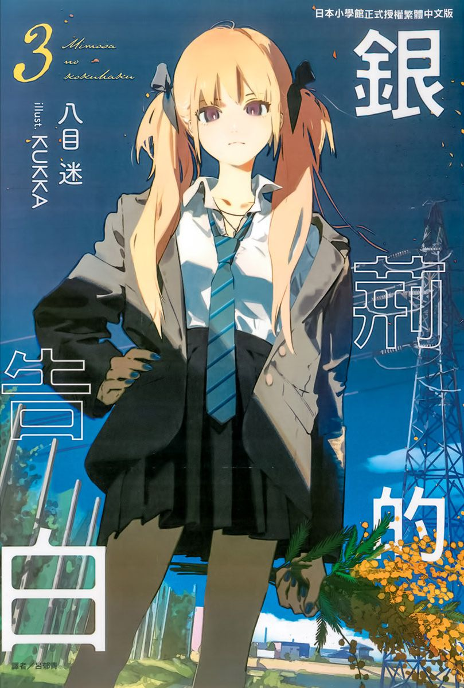 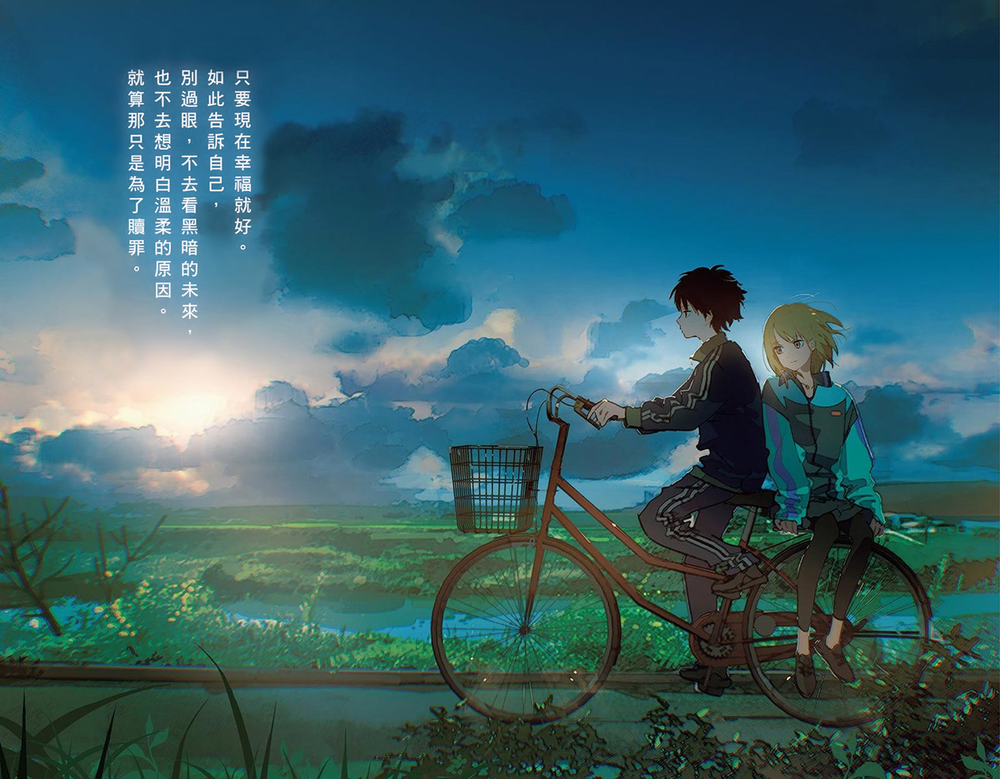
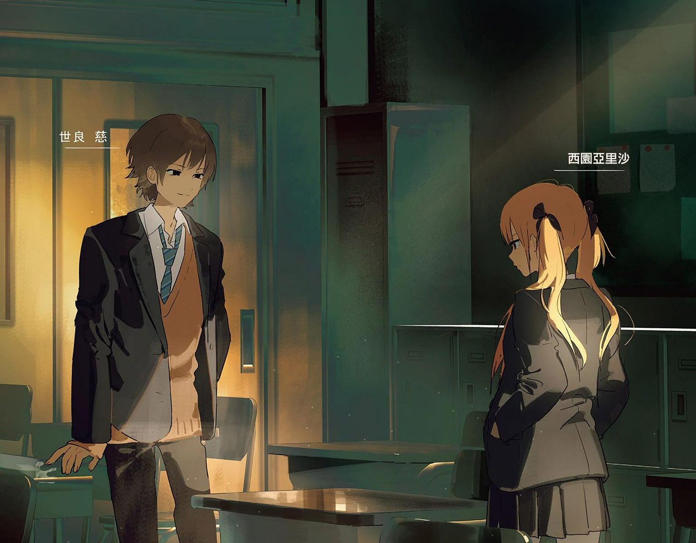
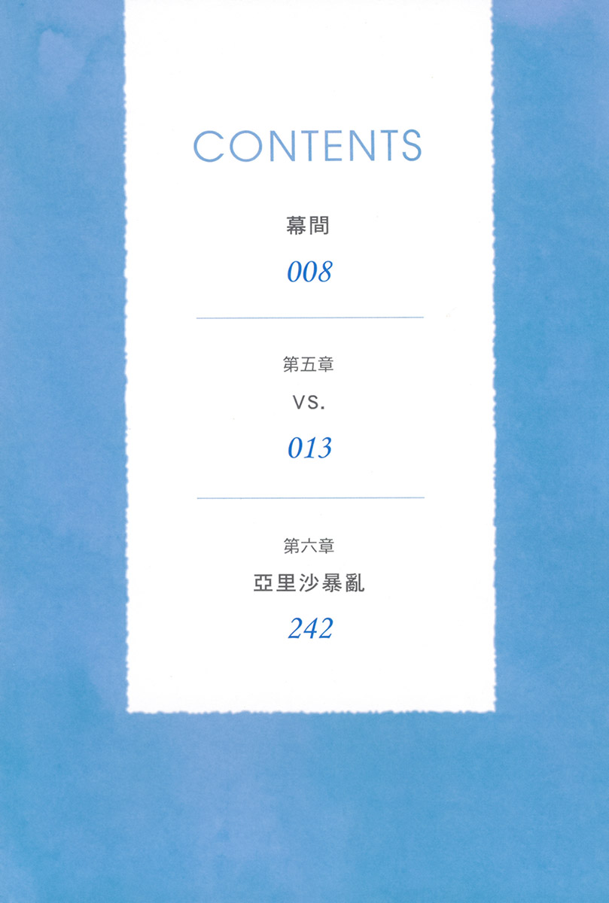
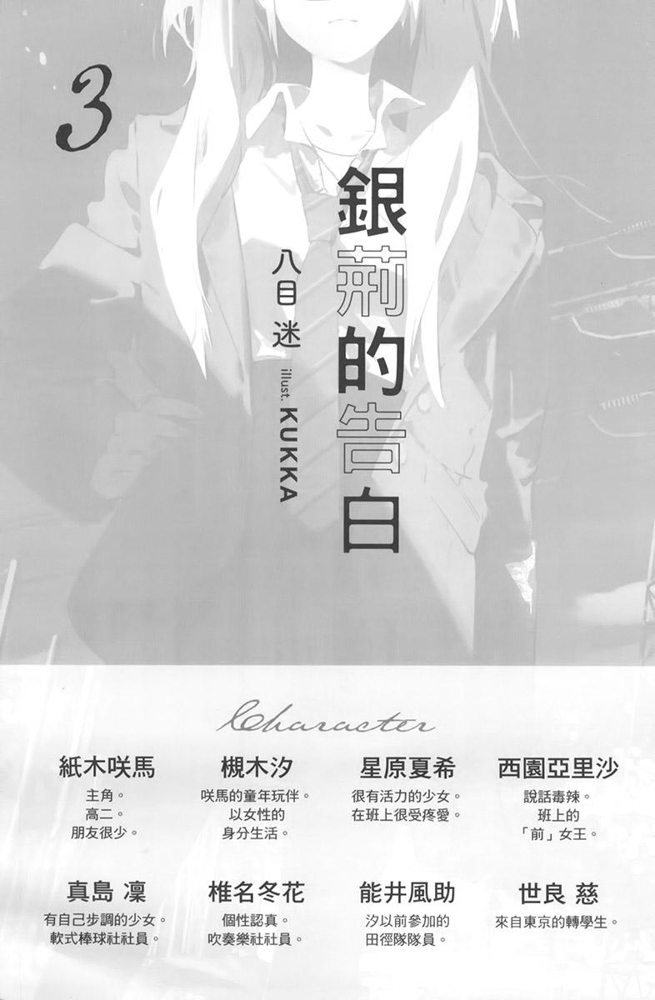
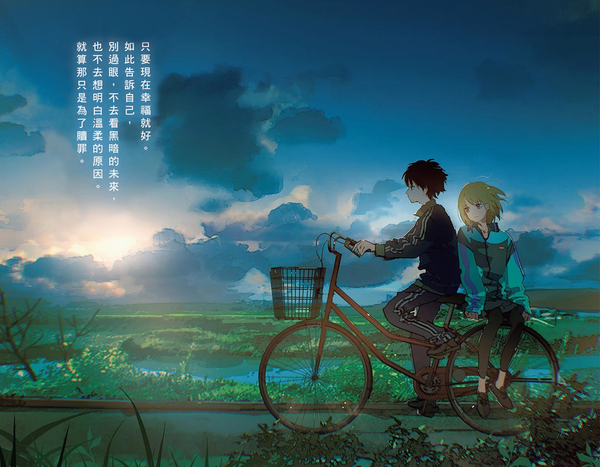
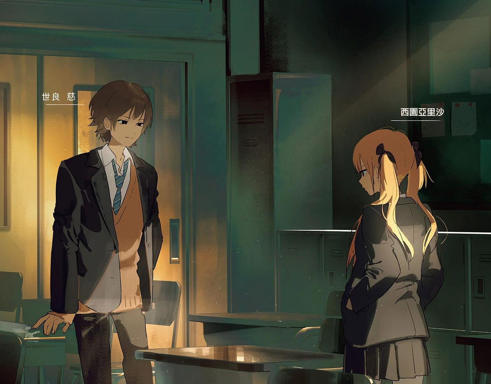
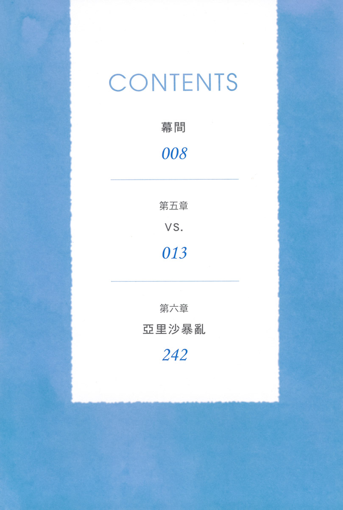
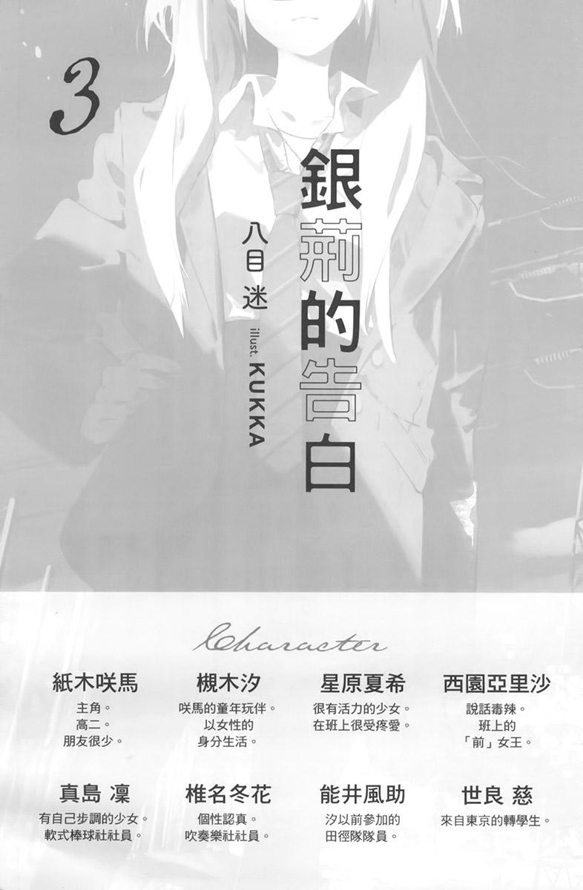
蟬鳴唧唧的七月初。
椿岡高中二樓的學生指導室裡相當悶熱。由於沒有冷氣，只能將窗戶開到最大，可是完全沒有風進來。雖然房間角落有電風扇在轉動，仍然無法帶來清涼。
電風扇發出的「強」風，使坐在折疊椅上的女學生頭髮搖晃不已。那是一頭綁成雙馬尾，漂染過的亮色頭髮。女學生深深靠躺在椅背上，板著臉，視線垂在桌面上。
坐在女學生前方的教師伊予，正以嚴肅的表情看著她。
「妳有在反省嗎？亞里沙？」
「有啦。要我說幾次。」
西園亞里沙是問題學生。
上課時老是趴著睡覺，而且經常遲到，漂染的頭髮也違反校規。不過最讓老師們傷腦筋的，是她那好強要勝的個性。就算被老師指責，也絕不認錯，一定要反駁到底，直到老師認輸為止。最麻煩的是她成績很好，老師們只好放她一馬。
然而這次不同。
「我說啊，老師，妳要唸到什麼時候？」
「直到妳理解自己做了什麼為止。」
「所以說我知道啊。我不是說明過了嗎？我不是故意用水壺砸汐的。」
「不只那件事吧？其他學生都告訴我了，妳一直在找汐的麻煩。還是妳想說，那些也不是故意的？」
「……」
西園沉默不語。
就在這時，站在一旁的生活教育組長中岡盯著西園的臉。
「別以為不說話就可以蒙混過去哦。除非妳好好反省，否則我們不會讓妳離開這裡的。」
「……反省反省反省，不然我寫悔過書總可以了吧？」
「不是那種問題。」
「不然是什麼問題？對不起，全是我不對。這樣講總可以了吧？」
「就是這種態度——」
「中岡老師。」伊予打斷中岡的話。
「沒關係的。我來和她說。」
「哼！」中岡哼了一聲，伊予嘆了口氣。
「亞里沙，妳到底有什麼不滿？」
「全部。」
「什麼叫全部？」
「全部就是全部。汐，還有其他人，整間學校，全都煩死人了。」
「因為覺得煩，就要攻擊別人嗎？」
「不行嗎？」
「妳不是真心這麼想吧？」
西園揚起一邊的嘴角。
「如果我說我是真心的，妳想怎麼樣？把我退學？」
那挑釁的態度，使伊予憐憫地瞇起眼睛。
「我不會那麼做的。」
她說完起身，對中岡使了使眼色後，再次看向西園。
「我現在要打電話給妳媽媽，請她來學校一趟。具體懲處等和妳媽媽討論過再決定。妳沒意見吧。」
「隨便你們。」
伊予離開學生指導室。
中岡從口袋拿出香菸。
「我十分鐘後回來。妳給我乖乖待在這裡。」
說完，他也離開了學生指導室。
房間裡只剩西園一人。
除了嗡嗡的扇葉轉動聲，與唧唧的蟬鳴之外，沒有其他聲音。
熱氣混在風裡，從窗外湧入室內。西園的額頭滲出汗水。
「好熱……」
她起身走到房間角落，固定住左右轉動的電扇，讓風只吹在自己身上。
接著她注意到牆邊的鐵架。架子最上層放著實用書與教育類的書籍。可以見到「青春期」、「多元性別」、「溝通」、「心理學」、「歧視」之類的字眼。
西園隨意從其中拿起一本書，唰唰地翻著。
「……」
她斜眼看了約十秒書中的內容後，拿著書走到窗邊，側轉身體，雙腿微微張開，以右手拇指與食指捏著書本的一角——
用力將書本扔到窗外。
書本一面旋轉，一面畫出拋物線在空中滑行。最後書頁張開，有如忘了怎麼飛的鳥兒，咚地落在地上。
看著書本落地，西園臉上仍然沒有出了口悶氣的舒暢感或笑容。她快步走回原本的折疊椅坐下，將重心放在後方，有如坐在搖椅上似地，連同椅子一起搖晃身體。
原本只聽得見扇葉轉動聲與蟬鳴的房間裡，如今多出了折疊椅「嘰！嘰！」的呻吟聲。
西園不斷發出「嘰！嘰！」的聲音，直到有人進入學生指導室為止。
文化祭結束後，過了三週。
夏季殘留的暑熱早已消失無蹤，現在是秋意濃厚的十一月初。椿岡高中正在舉辦球技大賽。
包含我在內，二年A班的男生早就輸光所有球類比賽作鳥獸散。但我還是留在體育館裡。館內分成北邊與南邊兩個球場，正分別舉行排球與籃球賽。我靠坐在牆邊，看著北邊球場正在與D班比排球的A班女生。
砰！排球強而有力地在打蠟過的發亮地板上彈起。又是D班的扣球。比賽是三局兩勝制，A班已經輸一局了。
快輸了呢。坐在我身旁的蓮見說。他原本就以愛睏的眼神在看比賽，現在更是興味索然地打起呵欠。
「還不一定啦。要看下去才知道。」
「雖然你這麼說，但你還不是沒有幫忙加油。」
「我有在心裡幫忙加油哦。」
「啊，是喔。」
這傢伙，根本不相信我的話嘛。
但我說的是真心話。雖然沒有出聲，但我確實在心裡幫忙加油。不過這種加油法算不算「確實」，也有點微妙就是了。
「你看，星原很努力啊。」
我把視線放在一名女學生身上。
綁在左右兩側的馬尾如小狗尾巴般搖晃不已的女孩，星原夏希。她在球場上努力來回奔跑，不讓球落地的模樣，真的很像小狗。雖然她很拚命，但似乎不太會打球，總是讓球彈到奇怪的地方。
「儘管她很努力……但對比賽沒什麼貢獻呢。」
「沒關係，她光是在球場上，就可以提升隊伍的士氣了。」
「真的嗎……」
當然。我肯定地說。
就在我們閒聊時，D班又得了一分。星原在球場中央停步，雙手撐在大腿上，似乎有點沒體力了。她休息了一會兒，再次站直身體時，與我對上了目光。
星原有點難為情地對我笑了笑。我也跟著笑了起來。在簡短的眼神交流後，星原再次看向D班成員。
我沉浸在不斷擴散的幸福中，忍不住嘆氣。
「唉……星原還是一樣可愛呢……」
「你真的很喜歡她呢。」
「欸？」
心臟有如被泡在冰水中似地猛烈收縮。
「你、你在說什麼啊！我才沒有喜喜喜、喜歡星原呢！」
「咦？事到如今才想否認，已經來不及了啦。」
「不是來不及什麼的……咦？事到如今？」
「是啊。我早就發現了。」
「不會吧……」
「我才想問，你為什麼會覺得不會被發現啊？」
蓮見傻眼地說著。
看樣子，我似乎完全沒有遮掩自己的感情。而且居然認為蓮見不會發現，我覺得自己的想法很蠢。可是突然說這個，也未免太偷襲了。至少不必在這種時候說出來吧。
「……什麼時候？」
「你是問什麼時候發現的？大概是暑假前吧。不過是到了你和星原一起當文化祭執行委員時，我才確定的。那個樣子，不管誰看都看得出來。」
「欸——真的假的……？」
儘管覺得難以置信，但是仔細想想，也許就像蓮見說的吧。
雖然已經是兩個月前的事了。但平常不起眼的我主動說要當文化祭的執行委員，看在班上同學眼裡，應該很稀奇吧。而且我是在星原說要當執行委員後才報名的，不認為我「對星原有意思」反而困難。
「是說，你沒被誰說過嗎？『你是不是喜歡星原』之類的。」
「才……」
雖然我想說才沒有，遺憾的是，我確實被說過。
「……嗯，被說過好幾次。」
「果然。」
蓮見理所當然地回答，我開始有點不安。
「吶、吶，你說星原該不會也發現了吧？」
「我哪知道啊。你不會去問她本人嗎？」
「那不就等於告白了嗎！」
我不禁大叫，又連忙閉嘴，稍微看了一下周圍。女生們都專心地看比賽，其他學生也沒有注意到我們。我鬆了口氣，壓低聲音：
「你就幫我想想看嘛。」
「想什麼？」
「就是那個……如果星原也知道的話，我該怎麼辦……」
「那種事問我也沒用吧……是說星原應該還沒發現吧，因為她很遲鈍。」
「喂，你把星原當笨蛋嗎？」
「這傢伙真難搞……」
蓮見厭煩地嘟噥著。但我可是很認真的哦。
「這種話題，去跟別人商量啦。」
「……我知道。」
蓮見乍看之下對任何事都漠不關心，但其實他很喜歡觀察人類。不過戀愛方面的事，他就沒興趣了。就我來說，我也不希望別人太深入這部分，還是就此打住吧。
「但我還是要說一句……就算統稱為喜歡，也是有很多種類的哦。」
「呃……你是想繞著圈子說，你對星原的喜歡，是朋友的喜歡？」
「不是……不對，雖然不是完全不對，可是……啊，可惡，沒辦法說明清楚。不要再聊這件事了吧。」
「是你自己要繼續說的……」
蓮見說的對。我無法反駁。
不過，最近我確實愈來愈不明白自己的感情了。和星原在一起的時間愈多，我對她的感覺，似乎和當初愈不同。
問喜不喜歡她的話，確實還是喜歡。但假如完全承認這點，又好像會失去什麼——被這種奇妙的強迫觀念束縛。
「——帥啊！真凜！」
我正在胡思亂想，旁邊的球場傳來歡呼聲。
雖然我只注意著星原，不過南邊的球場也有A班女生的比賽，比的是籃球。與排球相反，現在是A班輾壓的狀態。
「耶～呵呵！」
膚色偏黑，看起來很男孩子氣的女孩真凜——真島凜得意地高比V字，應該是投籃得分了吧。我記得她是軟式棒球社的隊長，運動神經應該很好吧。
由於之前星原曾找真島幫我惡補期末考的內容，所以我們偶爾會說話。正確地說是被真島虧，但是沒有熟到可以稱為朋友的程度。不過像我這種班上邊緣人，能和真島那樣的班上風雲人物說上話，本身就已經夠令人驚訝了。
「小椎，妳看到沒有？」
「看到了看到了，不愧是真凜。」
「就是嘛——！我搞不好也有打籃球的天分呢！」
「不要得意忘形了。」
小椎——黑色長髮的女孩椎名冬花吐槽。她與真島鬥嘴的模樣，是常見的光景。
那兩人基本上總是形影不離。與很有親和力的真島相反，椎名的個性嚴肅，而且有些強悍，所以我有點不太習慣和她相處。
「那兩人很要好呢。」
蓮見說道。
「是啊，她們好像是從小一起長大的玩伴。」
「哦，難怪。總覺得有獨自的世界觀。」
「那啥啦。」
世界觀，這說法也真特別。
「說到這個，你的童年玩伴什麼時候出場？」
「我？哦，汐啊……」
我朝南邊球場看去，現在正在交換選手。
換下去的是星原。也許因為接球接到手痛吧，只見她一邊甩手，一邊走向坐著待機選手們的球場邊緣。
我的童年玩伴也在其中。
「小汐！之後就交給妳了！」
「嗯。交給我吧。」
汐說著，從折疊椅起身。
白瓷般半透明的肌膚，絹絲般的銀金色頭髮。在這個體育館中，存在感比任何人都強，但是又有一種隨意碰觸的話會立刻消失似的空靈感。
我的童年玩伴槻木汐，走進球場。
我吞了吞口水。
「總算要出場啦……」
對戰的D班女生也注意到汐了。她們的反應各式各樣，有略顯驚訝的，也有一臉好奇的，甚至還有以陶醉的表情看著汐的人。
雖然不知道該如何介紹槻木汐這個人。但是能肯定地說的，就是直到高中二年級的春天為止，原本是「他」的汐，現在變成「她」了。不是因為身體出現變化，也不是因為與誰談戀愛，而是因為汐改變了生活方式。
比賽再次開始，D班的女生發球，
A班後方的女生把球彈回。球過網後，D班的女生傳球，扣球，砰！很快地就得分了。從比賽開始後，已經看過不知多少次這種有如範本的扣球模式了。
D班一直是由同一個女生扣球。應該是排球社的吧。A班沒有人參加排球社，也難怪會居於劣勢了。
不過，我們這邊有汐在。
「沒關係！還是有機會逆轉的！」
汐出聲鼓勵隊友。原本快死氣沉沉的A班女生，稍微恢復了點活力。
對方發球，站在網邊的女生把球托起。汐朝球衝去，配合球落下的時機，蹬起雙腿。
汐的上半身在空中向後仰，砰！向下扣球。
球朝著球場邊角飛去，D班來不及救球，球落在邊界線之內。是不輸排球社社員的精彩扣球。
這也許是A班第一次在對方沒失誤的情況下得分吧。
「哇～！小汐好棒！」
星原拍手喝采，「好耶！」球場內的A班女生們也歡呼起來。汐靦腆地笑著，接受她們的稱讚。
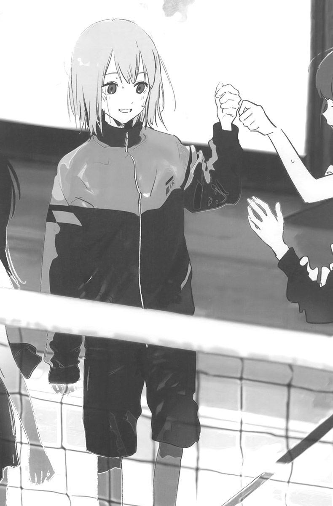莲见感叹道：「不愧是汐。」【+】
「槻木的運動神經真的很好呢。」
「是啊……」
我說著，看向D班。
「沒關係！」球員們正彼此安慰。雖然有些人露出懊惱的表情，但也只有那樣而已。
大部分的人，都已經接受那樣的汐了。
大約一個月前，汐開始與女生們一起上體育課。只坐在旁邊看很無聊吧，導師伊予一直鼓勵汐和大家一起上課。
一開始，汐拒絕了，應該是對身體上的差距有自卑感吧。但我和星原一直說「沒問題啦！」最後他才終於不情不願地和大家一起上課。
如今，絕大部分的A班女生都已經接受汐了，上課時沒有出現什麼問題。汐似乎也很開心。他從以前就喜歡活動身體，應該一直很想上體育課吧。
但畢竟情況不同，不能完全像男生時一樣。
我再次看向A班的成員。
自從汐上場後，雙方的攻防出現變化。刁鑽的球大多被汐救回，而且偶爾會扣球反擊。漸漸地，其他的A班女生也開始得分。
與D班的分數差距逐漸縮小，見到逆轉的可能性。
說不定會贏？當大家心生期待時，嗶嗶！哨聲響起。
汐的身體倏地放鬆下來，「辛苦了！」、「謝啦！」A班的女生們對汐說道。汐回應著她們，完成任務似地離開球場。
坐在地板休息的星原猛地起身。
「謝謝！接下來交給我吧！」
「交給妳了，夏希。」
兩人錯身而過時，互相擊掌。
並非因為比賽結束，是因為汐的時間限制到了。
像這類會出現輸贏的場合，學校會對汐做出限制。除此之外，有身體接觸的運動，或者以力量決定勝負的運動，也都會對汐做出限制。一方面是為了避免發生意外，同時也有追求公平的成分在內。
汐接受了這樣的限制，班上女生也沒有異議。今天是汐第一次與其他班級比賽，但是從別班的反應看來，似乎也很和平。
「呼，幸好……」
我忍不住嘆氣。
「還沒贏哦。」
蓮見吐槽。
「輸贏無所謂啦。」
「你不是在幫她們加油嗎？」
「是沒錯，不過剛才的嘆氣，和那個無關。」
「不然是什麼？」
「是汐的事。」
我仔細地為蓮見說明：
「因為球技大賽是班級之間的比賽，而且優勝的話能得到表揚，所以每班都有非常想得獎的人。」
「嗯。」
「而這次的球技大賽，汐是以女生的身分參賽的。就算限制了上場時間，還是有可能被別班的人說不公平。如果因此演變成對汐的誹謗……」
我想像著那光景，身體不禁微微發抖。
「……我可不想看到那種情況。不過從剛才的反應看來，目前沒有那種徵兆，所以我才會鬆一口氣。」
「你是來參觀上課的家長嗎？」
蓮見今天的吐槽特別多。
「我知道你想說我太愛擔心了，可是……」
我當然有自覺。
我只是汐的童年玩伴，不是監護人。儘管如此，我還是會在意其他人是怎麼看汐的，以及汐對那些眼光有什麼想法，忍不住做各種想像，因此提心吊膽。該說愛操心呢，或者太鑽牛角尖呢，只要事情和汐有關，我就會不由自主地想太多。
「我也知道煩惱那些是沒用的，但還是會在意嘛。文化祭時，我已經明白了，我的這種個性，八成一輩子改不掉吧。」
「還真困難呢。」
「是啊。不過最近，我不再一個人胡思亂想了。盡可能地把自己的想法說出來，對我和對周圍的人應該都比較好。果然溝通是很重要的呢。」
「唔……也行吧。反正比若有深意地沉默不語好多了。看起來有點蠢就是了。」
「最後一句太多餘了。」
「還有，你以後八成會踩到別人的地雷。」
「別再說了！那樣一來我又會開始胡思亂想啦。」
我們正如此聊著，哨聲響起。
排球比赛结束了。【+】
到頭來，A班還是輸了。汐下場後攻勢不再，被對方一口氣打敗。是說反正早就知道會這樣了。還不如說，與有排球社社員的班級對戰，能撐到現在，已經算很好了。班上女生們似乎也那麼想，因此沒什麼人露出難過的表情。
兩班的女生隔著網子敬禮。如此一來，A班的女排就被淘汰了。
女生們聚在一起，走出球場。可以聽到「唱歌」、「家庭餐廳」之類的詞彙，應該是在討論慰勞會的事吧。汐和星原也在其中。應該說，是以汐為中心討論才對。在剛才比賽的活躍，似乎又讓汐加了很多分。
汐很受女生歡迎。
身為男生時就是那樣了。成為女生後，「受歡迎」的意思有了改變，從男女之間的「有異性緣」變成對朋友的親近感。
一方面是因為汐的長相很中性，除此之外，應該是感性的問題吧，與男生相比，女生接受汐的速度更快。就算好感的性質不同了，汐再次成為班上風雲人物的日子應該也不遠了。
……不過——
我不動聲色地將視線移到一旁。看向正緊張地比賽的籃球場。與排球比賽一樣，數名待機的選手正坐在球場旁的折疊椅上。
其中一人正以陰沉的眼神瞪著汐。
——女生接受汐的速度快。
這句話雖然是事實，但並非所有人都是如此。A班仍然存在著無法接受汐的女生。
就是西園亞里沙。
她的身材嬌小，總是綁著雙馬尾。乍看之下很可愛，可是個性只能以凶暴形容，爭強好勝，不服輸到病態的程度。
儘管她在七月被停學過後，變得安分了點，但否定汐的態度仍然不變。只要西園不改變想法，兩個人應該沒有和好的可能吧。
……不過這樣也好。
假如在和好後因互相干涉而產生摩擦，還不如保持井水不犯河水的狀態算了。
我把視線從西園身上移開。
排球場上，已經換成其他的班級在比賽了。
在那之後，A班的女籃在準決賽時落敗。這是A班在球技大賽中的最高成績。
球技大賽閉幕式結束後，學生們離開體育館。時間已經超過下午四點了，之後不需上課，可以直接回家。
二年A班的學生換好衣服，回到教室。天氣早已轉涼，所以每個人穿的都是長袖制服。有些人甚至在西裝外套下穿連帽襯衫。
同學們一面收拾書包，一面閒聊。我看向汐，他似乎正與星原討論什麼，我豎起耳朵細聽。
「小汐，妳覺得麥當勞和家庭餐廳哪個好？」
「唔……人數多的話，還是家庭餐廳吧。」
「說的也是！我去跟大家說哦！」
「謝謝。」
星原離開，去找其他女生說話。
果然打算開慰勞會呢。由於星原找的只有女生，我還是別打擾她們，今天一個人回去吧。
我起身，把書包掛在肩上，正想離開教室時。
「汐在不在？」
一名高個子的男生從門外探頭。
我在心中嘖了一聲。那傢伙是能井風助，是汐以前參加的田徑隊的隊員。雖然看起來很有運動員的感覺，可是對我來說，這傢伙完全沒有運動員的清爽感。應該說，我對他沒半點好印象。
因為我在當文化祭的執行委員時，被他找過碴。這傢伙也和西園一樣，都對曾經是「他」的汐很執著，否定汐現在的生活方式。
「有什麼事？」
汐坐在椅子上，不高興地發問——
能井大步走進教室，在汐面前停下腳步。
「我有話跟你說。過來。」
「不行！」
星原插嘴。
「小汐等一下要和我們去參加慰勞會，不能和你過去。」
星原斷然說道。
我被能井找碴時，星原也有幫腔。雖然當時星原對高自己整整一個頭的能井怕得簌簌發抖，可是現在的她臉上毫無懼色。自從當過文化祭執行委員會會長後，星原成長了很多呢，我感慨萬千地想著。
「只是說一下話而已，我也還有團練，不會說太久。」
「既然如此，就在這裡說吧。」
「是很重要的話，我不想被沒關係的傢伙聽到。」
「那我也要去。」
「聽不懂人話嗎？我說，不想被沒關係的傢伙聽到。」
「我才不是沒關係的人呢。我是小汐的朋友哦。」
星原說完，皺起眉頭。
「而且你說不定會動手動腳。」
能井的臉頰抖動了一下。班上的氣氛稍微改變了。
動手動腳，指的是汐第一次穿裙子來學校那天，能井闖進A班教室，揪住汐領子的事吧。只要是當時在場的A班學生，一定都還記得那件事。
能井煩躁地抓著理得很短的頭髮。
「我才不會。妳把別人當成什麼了？」
「可是——」
「可是個屁啦可是！實在有夠煩的耶妳。只是說幾句話而已，妳不要在那邊亂。」
能井以帶著怒氣的聲音怒道，星原害怕地咬著嘴唇。
那傢伙，居然對星原……饒不了他。
我放下書包，正想過去幫腔時……
「風助。」
汐站了起來。
「你不讓夏希一起去的話，我就不和你走。」
汐以堅定的態度宣布。與顯得煩躁的能井相反，汐冷靜到可以說是冷漠的程度。但他的眼神很銳利，眼中充滿安靜的怒意。
汐與能井對瞪著。
吵鬧的教室，在不知不覺中安靜下來。原本談天說笑的同學們壓低聲音說話，側眼觀察兩人的發展。
最後，能井嘖了一聲。
「算了，妳也來吧。」
他對星原說完，大步走出教室。
「不好意思，妳們先過去吧。」星原對身邊的女生說完，與汐一起離開了。
教室再次恢復吵鬧。可以聽見在意那三人後續的對話聲。我傻傻地站在原地，回過神後，連忙跑到走廊上。
「等、等一下！」
我大聲叫住三人。
能井訝異地回頭。
「我也要去。」
「啥？為什麼？你是誰啊？」
「你怎麼可能不知道我是誰。當執行委員時，你還特地找我碴耶。」
「誰記得那種事啊。你這種人有記得的價值嗎？」
只有記得的人才會說這種話。我忍不住想反駁，但是沒有說出來。汐和星原等一下還要去慰勞會，我不想因為無聊的反駁，浪費他們時間。
「你和汐那麼不對盤，要是發生什麼事……就是那個，所以我也要去。」
「那個是哪個？」
「就是……呃……」
不能說我只是單純在意能井想說什麼，不然我就只是普通想看熱鬧的鄉民了。我開始想理由。
例如……假如真的發生「動手動腳的事」，星原一個人也許處理不來——哦哦，這說法很合理，而且確實有那種風險。
可是那樣一來，不就等於我看不起星原的能力了嗎？等於繞著圈子說星原沒用……想到這裡，我決定放棄這說法。
「就算不說，你也知道吧。」
我裝出若有深意的表情，打起迷糊仗。但是能井無法接受。
「當然不知道。不要鬧了。我可是很認真的哦，想看熱鬧的人給我滾。」
「我、我才不是想看熱鬧呢。」
「不然是什麼？沒有明確理由的話就滾回去。我說過我還有團練，你是沒聽到嗎？要是再繼續糾纏，小心我揍人哦。」
不、不妙。雖然能井的口氣很嗆，但是他說的確實有道理。
汐和星原也都還有事，得快點找理由才行……咦？是說這樣一來，我真的只是想看熱鬧而已了？應該說我已經在浪費汐和星原的時間了……
怎麼辦？我正感到焦急，汐無奈地嘆了口氣。
「你也一起來吧。」
汐主動幫我緩頰。真丟臉，不過很感謝他。
我哼了一聲，看著能井。
「聽到沒？汐也這麼說哦。」
「你在得意什麼？你真的很讓人不爽耶……」
能井不高興地看向汐。
「喂，讓那傢伙跟來有意義嗎？」
「意義……雖然沒有，可是他在場，我比較容易說話。」
「什麼啊？聽不懂。」
能井煩躁地皺眉，但似乎不打算繼續吵這話題了。「待會不要亂插嘴。」他瞪著我說完，邁出步伐。
我們三人跟著能井前進。我小聲地對汐開口：
「汐，剛才謝了。」
「下次要先考慮過再說話。」
「嗚……對不起。」
我道歉後，星原湊了過來。
「可是有紙木同學在，會安心很多哦。」
「真的嗎？真開心……」
「比起二對一，三對二果然更好呢。」
「就是啊。人多勢眾嘛。如果有什麼事，就三個人一起打扁他。」
「我會加油的。」
「喂！我全都有聽到哦！」
能井轉頭狠瞪我們。因為我們是以他聽得到的音量說話的，他會有這種反應也是理所當然。但是才剛放學，走廊上人很多，他也沒辦法揍人。
我們走下樓梯，在走廊前進，來到校舍外。
能井在中庭中央停下腳步。由於中庭前後左右都是建築物，陽光照不進來，所以顯得有些昏暗。而且空氣還很涼。
這裡是中午時學生休息的場所，可是現在沒有任何人。這似乎就是能井要說話的地點。
「然後呢？你想說什麼？」
汐問道。
能井以認真的表情看著汐。
「你應該知道……男子田徑隊通過高中驛站接力賽的縣大賽預賽了。」
「全校朝會時有聽說。恭喜你們了。」
「這是睽違九年的出場。下個月就要正式比賽了。隊員們都很有幹勁，努力一點的話，說不定有機會擠進前幾名。」
「這樣啊。」
「但我希望有跑得更快的選手。」
汐微微瞇起眼睛。
「縣預賽時，跑者之一是長瀨學長……雖然這麼說有點對不起他，但是說白了，他只會扯後腿。而且他本人也知道自己實力不夠，最近拚命練習，可是成績一直沒起色。」
「……然後？」
「你還不懂嗎？」
我懂了。星原應該也懂了。至於汐，我想他一定比我和星原更早察覺能井想說什麼。可是他不主動說，而是故意等能井開口。
等得不耐煩的能井看開似地開口：
「回來吧。回男子田徑隊。」
果然是這樣，我心想。
汐露出極度厭倦的表情。他果然是這種反應，我心想。
「不可能。」
「雖然你有一陣子空窗期，但你資質好，只要稍微練習一下，一定能馬上成為正式選手。」
「不是體力的問題。」
「放心吧。高中驛站接力賽不限田徑隊的學生參加，只要是椿岡的學生，不管是棒球隊或回家社的都能跑。」
「不是那樣的。」
「如果你沒信心，我可以陪你練習。」
「風助。」
汐以曉諭的語氣開口：
「我不會回男子田徑隊的。」
這次換成能井的表情暗了下來。
「為什麼？你又沒有受傷。有出場資格也有天分，卻不肯跑……這樣太可惜了。」
太可惜了。我也曾經那麼想過。那是汐剛決定以女生身分生活時的事。明明有那麼好看的長相與優秀的運動神經，為什麼不選擇能輕鬆生活的身分呢？當時的我無法理解。
可是現在，我已經明白了。那不是怎麼樣活才輕鬆之類的效率問題。但能井現在還是不懂。
不過比起那個，有件事我挺在意的。
「那個……我可以問個問題嗎？」
我從旁插嘴後，能井朝我瞪來。好可怕！不過他本來就警告過我不要亂插嘴，會這樣也沒辦法。
「從剛才起，我就很在意……汐不是短跑選手嗎？」
國中時的確是那樣。全校朝會時頒過很多次獎，所以我記得。那些獎全是短距離的比賽。儘管我和田徑不熟，但是短跑選手應該不會參加驛站接力賽吧。
「你連那種事都不知道就跟來了嗎……」
能井眼中出現殺氣。從剛才起，不論我說什麼，都會惹他生氣。雖然我不是故意的，但還是覺得有點對不起他。
「小汐從去年夏天起，就改練長跑了哦。」
我正因畏懼說不出話，一旁的星原告訴我答案。
「啊，是這樣啊……」
高一時我已經和汐疏遠了，所以不知道這件事。
該不該對打斷能井說話的事道歉呢？我正感到煩惱，能井便想起什麼似地看向汐。
「說到這個，那時候也是這樣。你沒有和任何人商量，就放棄短跑了。」
「只是改變跑步的距離而已，沒必要被你責怪。」
「只是改變跑步的距離？你很清楚短跑選手和馬拉松選手的訓練菜單與鍛鍊的肌肉完全不同，不能說換就換。可是你卻……改成長距離。為什麼？」
「……因為我覺得長跑比較適合我。」
「你的短跑成績明明也很好。」
「沒有什麼深刻的理由啦。」
「騙人。」
「所以你到底想要我說什麼？」
汐厭煩地反問。臉上出現怒色。
由於汐平常待人和善，生起氣來反而更可怕。一旁的星原身體顯得有點緊繃。但能井不但不畏怯，反而更不高興了。
「我完全不懂你在想什麼。突然穿裙子上學又退出田徑隊……你到底想怎樣？可以想像一下被你耍弄的我的心情嗎？」
「你那是被害妄想吧。我突然退出田徑隊是對不起大家，但又沒有妨礙到你。是你自己要覺得受傷害的。」
「……」
能井沉默下來。
「可以了吧？我不會回田徑隊。這話題就到此結束。驛站接力賽加油。」
「喂，話還沒說完——」
「夏希、咲馬，我們走吧。」
汐單方面地結束話題，邁步離開。星原連忙跟上。我看了能井一眼，和星原一起追了上去。
能井那傢伙，應該是在心情方面追不上汐的變化吧。如果是那樣，驛站接力賽只是想與汐產生關聯的藉口。但不知道他是為了理解汐，或者是為了讓汐回復成以前的樣子才來找汐的。假如是前者，還有同情的餘地……但不論如何，既然汐不打算繼續與能井說話，我就沒資格插嘴。
「等一下。」
儘管能井呼喚，但汐並沒有停步。
一拍後……
「吶，我們不是好搭檔嗎？」
能井懇求似地說道。
那句話，使汐停下腳步，但仍然沒有回頭。
我不動聲色地窺探汐的臉。面無表情……不，是稍微有點倦怠的表情。
「你忘了嗎？我們不是常比誰跑得快嗎？我一直有在算幾勝幾敗哦。每天跑到筋疲力竭，團練結束後，偶爾去家庭餐廳……早上在同樣的時間來社團辦公室。對我來說，那是一段很美好的回憶。」
能井朝這邊踏出一步。
「只要你回田徑隊，和以前一樣跑步的話，我就不計較你退出的事。想穿成什麼樣也隨便你，和誰來往我也不會有意見。再說，你其實也很想全力奔跑對吧？我看了今天的球技大賽。那種……和女生們混在一起的比賽，沒辦法滿足你吧？」
能井的話，使我的胸口有種快燒起來的感覺。
對能井來說，他一定認為自己讓步了吧。可是他完全沒有隱藏自己的傲慢，每一句話，都感覺得到他想控制汐。
「想穿成什麼樣，是嗎？」
汐終於回頭。
我突然感到毛骨悚然。本來以為是冷風吹過，但其實不然。那寒冷是汐發出的。雖然他的表情很平靜，可是身上的寒冷，足以使人渾身發抖。
從那氣魄可以明白，汐非常火大。
「為什麼我非得得到你的許可，才能穿裙子呢？為什麼我非得得到你的許可，才能和其他人來往呢？那不是你能決定的事。絕對不是。看在別人眼裡，我們也許就像好搭檔一樣。也確實有能互相切磋琢磨的部分。但那也只有在田徑隊時。」
「什……」
明確的拒絕，使能井錯愕地睜大眼睛。
「還有啊，全力奔跑，或者滿不滿足什麼的……希望你別用那種自以為懂我的口氣說話。完全沒有你說的那回事。想全力奔跑時，我還是會全力奔跑。而且我對現在的體育課也很滿意。雖然也有不能盡如人意的部分，但我還是沒有一絲一毫想變回以前的自己的想法。」
汐以強而有力的語氣，把整段話說完。
呼——他吁了口氣。本來以為他已經把想說的話全說完了，沒想到他仍然以冰冷的視線看著能井。
「先說聲對不起。其實我放棄短跑，是有原因的。」
「什麼原因……？」
能井露出困惑的表情。
從汐的態度看來，應該是難以對能井啟齒的原因吧。雖然我也試著猜想，可是完全猜不出來。如果只因為覺得長跑更適合自己，根本不需要隱瞞原因。
雖然能井等著汐開口，但汐一直沒有說話。就算想說什麼似地張嘴，也沒有發出聲音，而且頭還漸漸低下。
五秒、十秒過去……我開始感到不安。究竟是多麼難以啟齒的原因呢？
「喂，你說話啊！」
能井催道。汐做出覺悟似地深深吸了口氣，緊張地抬頭。但他不看著能井，而是看著斜下方，開口：
「因為我不想讓腿變粗。」
「啥？」
「短跑……最重要的是瞬間爆發力，所以腿容易變粗。雖然不是每個短跑選手的腿都很粗，但我不想讓腿變得更粗了……」
「……啥？」
能井陷入混亂。我懂他的心情。因為汐一直不肯說，我還以為是什麼重大的原因……老實說，有種大失所望的感覺。
但對汐來說，這應該是非常重要的問題吧。就像能井說的，從短跑改成長跑，不是能簡單做出的決定。特別是參加過全國田徑大賽的汐，要做出這決定，應該更是困難。所以不能認為汐想得太少……可是，腿嗎……我從來沒在乎過腿的粗細呢……
汐輕咳一聲，眼神再次銳利起來。
「所以，我不是因為想和你一起跑步，才改練長跑的。」
「不，等一下。你剛才說不想讓腿變粗？只因為那種理由，就放棄短跑？明明有那麼好的成績？」
能井連珠砲似地發問，汐有些難堪地噘起嘴。
「……反正我也不指望你會懂。」
「我懂！」
用力表示能理解的人是星原。她的表情很認真。
「國中時，我有個游泳隊的朋友。她因為不想晒黑，退出了游泳隊。但她還是很想游泳，所以改成去在室內游泳池的游泳教室上課。可是那很花錢，大家都勸她回學校游泳隊就好，但她還是一直去游泳教室……」
星原努力地說著。
「對別人而言，也許算不上什麼大事。可是對自己來說，是嚴重的問題。再說，每個人多少都會在意自己的外表，所以我不認為那是『那種理由』。」
「夏希……」
汐接受了星原直白的溫柔，安靜地笑了起來。
「啊，不過我也有點想看大腿很結實的小汐呢……」
「不，那個……應該不好看吧……」
「別開玩笑了！」
能井怒吼。
他額頭青筋暴跳，似乎在脫離混亂後，轉為暴怒。見他一副隨時有可能衝過來打人的模樣，我的警戒一下子提升到最高點。
「看不起人也該有個限度。不想讓腿變粗？你想當模特兒嗎？聽好了，不管你再怎麼在意外表，你是男人的事都不會改變。」
有那麼一瞬，汐疼痛似地瞇起眼睛。
「喂，你……」
看不下去的我插嘴。但能井眼中似乎只有汐，他口沫橫飛地吼著：
「還有，我要撤回和你是好搭檔的那句話。我才不想和你這種人一起！」
「雖然你講得高高在上……」
汐壓低聲音說著，揚起挑釁的冷笑。
「我可不會忘記你跑得比我慢的事實哦。」
能井瞪著汐，不再說話。
兩人之間迸濺出火花。周圍泛起冷到骨子裡的寒氣。
唧唧唧唧唧、唧唧唧唧唧，附近草叢中的蟋蟀開始鳴叫。與眼前情況格格不入，悅耳又風雅的叫聲。以此為信號似地，能井開口：
「不然，我們來比賽。」
汐皺起眉頭。能井繼續道：
「兩個禮拜後，我們來比五千公尺。如果我贏，你就回男子田徑隊，參加驛站接力賽。如果你贏，我就為以前所有說過的話道歉。」
「那不公平。」
我插嘴。
能井再次瞪著我，但我也有非說不可的話。
「汐已經有好一陣子沒練習了。再說，輸了就回田徑隊，這要求莫名其妙。一般而言應該是反過來才對吧。而且就算回田徑隊，如果不能成為戰力，該怎麼辦？」
「喂，你聽見了嗎？你朋友說你變成廢物了。」
「我沒有那麼說！」
個性太差了吧！就算只是同社團的人，但汐居然能和這種人相處……
雖然只是挑撥離間，可以不理他就好，但我還是緊張起來。我不想被誤會，不安地看向汐。汐以像在說「不用擔心」的眼神回應我。
他再次看著能井。
「咲馬說的沒有錯。如果我參加驛站接力賽，但是對團隊沒有貢獻的話，該怎麼辦？話說回來，我根本沒有義務和你比賽。」
「哦？你覺得自己會輸？」
「我沒有那麼說。」
「哈，你沒有贏我的自信呢。還不如乾脆承認現在的你贏不了我如何？享受被女孩子包圍感覺的小汐，跑沒幾步就會喘不過氣了呢。」
顯而易見的挑釁。但汐的眼中出現明顯的憤怒。
「……好啊。既然你那麼說，我就和你比。」
我驚訝地看著汐。居然答應了？
能井得意地笑了起來。
「你說了哦。我有聽到，別想反悔。」
「比起那種事，如果我贏了，你一定要道歉。」
「可以啊。那沒事了，我要走了。」
「閃邊。」能井對我嗆完，走進校舍。背影充滿自信，剛才的死纏爛打就像不曾發生過似的。切換得真快。
能井的身影完全消失後，汐以虛浮的腳步朝著與能井相反的方向前進。他想去哪呢？我正心想，他已經走到附近的長椅旁，重重坐下了。他燃燒殆盡似地低著頭，頭髮遮住臉，看不清表情。
「小汐，妳還好嗎？」
星原擔心地跑到汐身邊，我也跟著照做。汐仍然垂著頭，把手按在額頭上。
「傷腦筋……」
那是極度疲勞的聲音。
「我本來不想理他的……但是不小心就……」
汐全身充滿沉重的後悔。
中了能井的計……不過仔細想想，那也是無可奈何的事吧。雖然外表給人隨時都能保持冷靜的感覺，但汐其實也有感情用事的時候。正因為和他在一起的時間很長，所以我知道，汐和一般人一樣，有喜怒哀樂各種情緒。
……不，不對。不是那樣。
與一般的十七歲青少年相比，汐已經算相當冷靜的了。儘管如此，還是會有情緒起伏。就算汐很會忍耐，但有太多超出他負荷的事了……想到這裡，我覺得一陣心痛。
星原在汐身邊坐下，擔心地說：
「我們去拒絕他吧。這樣太不公平了。」
「不，沒問題。」
汐猛地抬頭。
「既然接受挑戰，我就會跑。而且我也不是完全沒有勝算。」
「……真的嗎？」
「相信我吧。」
汐對星原笑道。那是帶著痛楚的笑容。
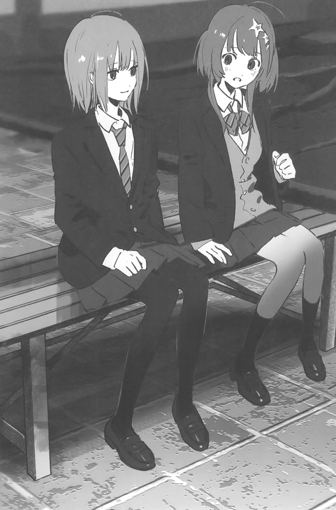「別逞強哦。」
我說著，也在汐的另一邊坐下。與星原一左一右地包夾著汐。
「那根本不是公平的比賽。雖然贏的話很厲害，但如果輸了就得聽能井的話，還不如不要比。假如非比不可……」
汐與星原朝我看來。
「我代替你跑吧。」
「你？」
汐噗哧笑了。
「你不可能贏啦。你一直是回家社的耶。」
「我國一時有加入過網球社哦。」
「但只有一個月吧？那和沒參加過一樣啦。」
「不然，如果你輸了，我代替你加入田徑隊。」
「風助不會接受的啦……」
在說什麼傻話？汐的表情如此說著。
沒辦法把想法傳達出去，使我感到焦躁。雖然難為情，但我還是把真心話說了出來。
「……因為我想成為你的力量嘛。」
汐「咦」了一聲，眨著眼睛。
「看你消耗自己的樣子……我覺得很難受。所以我希望能成為你的力量，幫上你的忙……」
「是、是這樣啊……」
汐困擾地說完，低下頭。
氣氛尷尬了起來。所以我才不想說出來嘛。
我偷眼看著汐，見到用力點頭的星原。她似乎很贊成我的話。
汐緩緩抬頭，凝視著我。
「文化祭結束後，你就變得有話直說了呢。」
「呃，因為你說不要保持沉默比較好嘛。」
「我確實那麼說過……不過你也太極端了。」
「真難拿捏……」
尷尬與焦躁使我坐立難安地抬頭，被校舍圍出的方形天空已經染上橙紅了。與能井糾纏太久，浪費了很多時間。
「……好。」
汐站了起來。
「我們也該走了。」
「啊！對！」
星原也跟著起身。
他們兩人之後要參加慰勞會。雖然不能三人一起回去很可惜，但這次就沒辦法了。
我起身，「啊，對了。」星原說道：
「紙木同學也一起來吧？」
「不用了。那不是女生的聚會嗎？我去的話一定很礙事。」
「欸——不用客氣啦，我想大家應該不會在意哦。」
「沒關係啦。之後再告訴我慰勞會的感想吧。」
我這麼說，星原也不再堅持。
我們先回班上拿書包。染上暮色的二年A班的教室裡，見不到任何人，我們似乎是最後離開的。三人整理好書包後，來到走廊。我將教室的門上鎖。
「我去還鑰匙，你們先走吧。」
「真的嗎？謝謝你了，紙木同學。」
「謝了。」
星原和汐對我道謝，「再見。」我說完，一個人走向教職員室。
我走在無人的走廊上，回想著不久之前的事。
能井風助——
從他的語氣聽來，他和以前的汐應該滿親密的吧。既然看在其他人眼中是好搭檔，表示他們的感情應該不錯。可以感受到能井對汐的好意與同伴意識。
但是現在……
我想起能井對汐說的那些輕蔑的話，憤怒與苦澀湧上心頭。仔細想想，能井的態度與西園亞里沙很像。兩人都和以前的汐很要好，現在也都故意對汐說過分的話。而且西園還喜歡過汐。
愛情，有些時候會變成憎恨。
原本非常喜歡的人，因為一些小事，變成極度痛恨的對象。世界上多的是那樣的事。
我以前在電視上看過那類新聞，某個很紅的偶像收到要殺死她的恐嚇信。後來警方查出，寄信的人是那偶像以前的狂粉。
——愈是喜歡一個人，對方沒有照自己的想法行動時，「被背叛」的感覺就會愈強烈呢。
我記得節目中的名嘴以此作結。
雖然有程度上的差異，但每個人都是那樣。我也不例外。國中時疏遠汐的原因，正是因為喜歡的女生對汐告白的緣故。汐明明沒有任何錯，我卻兀自認為「被背叛」了。
就這點而言，我和能井、西園是同類。
……這樣也無所謂。
本質上與那兩人相同，是無可改變的事實。但我會以行動與態度證明我和那兩人是不一樣的。所以，雖然偶爾會感到懷疑，但我基本上還是相信現在的自己。
應該也只能這麼做了吧。
我把鑰匙放回教職員室後，離開學校。
✽
強烈的風，吹得教室的窗戶格格作響。
「起立，敬禮。」
謝謝老師。班上同學鞠躬說完，進入午休時間。
文化祭與球技大賽結束後，第二學期就沒什麼重要的事了。修學旅行還早，接下來只有期末考與寒假而已。班上因此瀰漫著一股慵懶的氣氛。
一如往常的喧鬧聲，使人感到平穩舒適。希望這種氛圍能一直持續下去……當我正這麼想時——
喀啦啦——！教室的門猛地被拉開，一名學生走進二年A班。
「汐！我來囉～」
出現了……
外來種的黑鱸，撲通一聲跳入純淨的水族箱裡。我腦中出現這種畫面。水族箱是這間教室，至於黑鱸，不用說，當然是指世良慈。
世良一面閃避著桌子，一面在教室中前進，一把抱住正準備吃便當的汐。
汐露出極為煩厭的表情，「哇——！」與汐坐在同一張桌子前的星原則發出慘叫。
「世良同學！你不要過來！」
「對不起啊汐～我最近有點忙，所以很少來找你～」
「熱、熱死了……」
汐嫌棄地剝開世良。
怎麼這麼冷淡～世良誇張地表示遺憾，看向星原。
「夏希最近過得怎麼樣？」
「普通吧……」
「咦？好像有隔閡呢。和我增進感情嘛～啊，我可以叫妳小夏嗎？」
「噫！小汐救我……」
「世良，不要捉弄夏希。」
「咦～我才沒有呢～」
世良嘻嘻笑著，旁觀的我看得心驚膽跳。
對我來說，世良完全是異端分子。雖然嘴巴上說喜歡汐，但是已經有四個女朋友了，而且本人也不打算隱瞞有女朋友的事。那輕浮的笑容，可說是一種另類的面具。完全看不出他心裡在想什麼，是難以捉摸的傢伙。
可以的話，我一點也不想和那種人扯上關係。但就像剛才見到的，世良對汐很執著，我也因此時不時地被他捉弄。話說回來，雖然他看起來對汐很執著，但因為無法明白他真正的想法，所以也不知道實際上究竟是怎麼樣。
「我從以前就在想，你的便當菜看起來很好吃，可以分我一點嗎？」
「不要。」
「那夏希可以分我嗎？」
「呃，我也沒有可以分你的……」
「喂喂喂，你們怎麼這麼冷淡～我可是沒吃午餐就過來的哦。」
「誰叫你不先吃。」
「因為我想早點看到你嘛～」
「喔，是這樣啊。」
儘管汐與星原的反應很冷淡，但是從旁人的角度看來，可以算感情好吧。那傢伙的溝通能力高到不可思議，在A班也很受歡迎。只要不過於深入，來往起來應該很愉快吧。
但……我還是覺得自己和他不對盤。
還是來吃午餐吧。我從書包裡拿出便當。
「噁心……」
就在這時，一道不算大，但是明顯帶著嫌惡的聲音，傳入我耳中。
說話的人是西園。前一陣子，她都和其他班的女生去餐廳吃飯，不過最近又回到班上吃午餐。一個人吃。之前她一直霸凌以女生身分上學的汐，最後反而被班上同學當成難相處的人。雖然是現世報，但我還是覺得很諷刺。
就位置來說，比起我，汐他們離西園更近。三人似乎因為聽到西園的話而沉默了一瞬。儘管時間短到像是錯覺，但是看星原僵住的樣子，肯定是聽到西園的話了吧。
「我剛才好像聽到一些傷人的話呢。」
世良把身體轉向西園。
「是妳說的吧？亞里沙。」
「……」
西園沉默地吃著不知是從便利商店還是學校福利社買的三明治。除此之外，桌上還有一瓶五百cc的紙盒牛奶。
儘管被無視，世良仍然愉快地走到教室後方，來到西園桌前，拉過附近的椅子，在她身邊坐下。
不少同學的注意力聚集在世良身上。應該是想知道不論對誰都能裝熟的世良，以及像猛獸一樣見人就咬的西園湊在一起，會有什麼結果吧。
「對了，我還沒和妳說過話呢。還是自我介紹一下好了，我叫世良慈，請多指教。」
「……」
「那頭髮是漂染的嗎？很好看哦。還有雙馬尾也是。」
「……」
「亞里沙，妳知道該怎麼做，才能讓無視妳的人理妳嗎？就是拿走對方的東西。玩手機的話就拿走手機，聽音樂的話就拿走耳機，看書的話就拿走書本。至於妳的話，因為在吃飯，所以是這樣哦。」
世良說著，拿走西園正想拿起的三明治。午餐被搶的西園惡狠狠地瞪著世良。
「……你想吵架？」
「要不要去餐廳吃飯？我請客。有人一起吃飯比較開心呢。」
「我才不去。把三明治還……不，還是算了。誰要吃被你碰過的東西，髒死了。」
「哈哈，居然這麼說。我可是清爽又有清潔感的好青年哦。」
「清爽？清潔感？好青年？」
西園複述著世良的話，露出嘲諷的表情。
「明明只是個玩弄女人的渣男，居然有臉自吹自擂。」
「這樣說太傷人了。我對女朋友可是很認真的哦。」
世良以充滿餘裕的表情說著，咬了一口搶來的三明治。
西園似乎也有聽說世良的女性關係，是以前聽星原說的嗎？
「腳踏三條、四條船的傢伙，說自己認真，笑死人。」
「為什麼？只要大家都很幸福，有什麼不好呢？」
「反正你根本沒讓那些女生知道自己被劈腿的事吧？一點也不誠實。」
「哈哈，不誠實嗎？以前好像有誰也這麼說過呢。」
世良說著，歪頭朝我看來。我連忙別過臉……那傢伙還記得啊？
他再次看向西園。
「但有件事我要聲明哦，我有把自己不只一個女朋友的事，告訴和我交往的女生們。所以她們是在接受這件事的前提下和我交往的。這樣怎麼會不誠實呢？」
我第一次聽說。
之前，我也曾指責過世良沒讓女朋友們知道他腳踏多條船的事。那時他說「還沒說」……沒想到他真的把有好幾個女朋友的事告訴她們。
不對。既然是世良，說不定是在說謊。西園的話一定會懷疑那句話的可信度。
但。【+】
「是喔。」
沒想到西園一下子就接受了。
世良難得地睜大眼睛，露出訝異的表情。
「咦？妳相信了？」
「什麼？原來你說謊？」
「不，我沒說謊。但我以為妳一定會說我騙人，或者要我拿出證據。」
咦咦？世良歪頭。
「難道妳比我以為的更坦率嗎？」
「不要用那種讓人火大的方式說話。我只是沒有理由懷疑你而已。」
「哦——是這樣啊……」
世良又咬了一口三明治，似乎無法接受西園的說法。平常話多到感覺上不說話就會死的他，感覺像在思考該說什麼似的。
西園興味索然地喝著牛奶，把牛奶盒放在桌上。
「簡而言之……」
她看向世良，哼笑。
「和你交往的那些女生，和你一樣都是人渣對吧？」
世良的嘴角微微向下。
西園靠在椅背上，高高在上似地抬起下巴。
「自己的男朋友早就是其他女人的男人？一般人怎麼可能會接受那種事。男人與女人互相想占有對方，才能算在交往吧。不然怎麼會有嫉妒這個詞呢？如果感情淡了，就另當別論。」
西園繼續說著：
「反正和你交往的那些女人，不是玩咖就是沒好男人可以選的敗犬吧。不過都可以啦，人渣之間互相資源回收最好，不要出來害普通人。」
教室中的吵鬧聲變得愈來愈小。同學們全被西園的氣勢壓倒了。
那嬌小的身體中，究竟裝了多少憎恨？西園的話有如鉛塊似的，重重壓住胃袋。被正面攻擊的世良，有什麼感覺呢？除了我，其他同學也都等著看世良的反應。
几秒的沉默之后。
「唔～～」
世良大聲沉吟起來。
「雖然有點過於理想化，不過這樣的戀愛觀挺有趣的。」
可是——世良繼續說道：
「妳的想法太幼稚了。」
「啥？」
「在戀愛中，占有欲確實是很重要的因素。就像妳說的，嫉妒是誕生自占有欲的感情。可是妳忽略了一個很重要的部分。」
「……什麼部分？」
「就是——人類能戰勝欲望。」
說到這裡，世良吃下最後一口三明治，輕拍雙手，撢掉麵包屑。
西園嫌棄地皺眉。
「六根不淨的你好意思說這種話。」
「妳想想看，例如減肥，是與食欲戰鬥的行為，而且確實有很多人戰勝了欲望。為了成為理想中的自己，人們願意忍耐不吃東西。戀愛也一樣。也就是說，我和她們克服了占有欲。」
「鬼話連篇。就算她們是你說的那樣，也只是暫時的。減肥是個人問題，但你們的關係可不是。只要有一個人心生不滿，你的論點就會直接失去根據。」
「一直用假設來反駁，很傷腦筋呢。因為那樣會變成什麼都有可能，就沒有意義了。要根據事實來討論。」
「什麼事實？只是你的自以為是而已。」
唉～世良嘆氣。
「不管怎麼說都不肯相信的話，還有什麼好討論的呢。雖然我喜歡強悍的女孩子，可是不分青紅皂白否定人，是不好的哦。」
「那是你——」
「妳就是因為這樣——」
世良打斷西園的話，冷笑起來。
「才會被全班討厭吧？」
劈哩。那是西園的自尊心出現裂痕的聲音。不只我，全班同學一定都聽見了。
「就是這樣，謝謝妳的三明治哦。」
「等一下。」
西園叫住若無其事想起身的世良。
明明應該會被世良的那句話激怒，但是西園看起來很冷靜——應該只是表面上吧。那個暴君，不可能不生氣。
「只吃三明治會渴吧？牛奶也給你吧。」
「啊——不用了，謝謝。」
「不用客氣。」
西園拿著牛奶起身，走到世良面前。
我瞬間明白了西園想做什麼。
啵啵啵啵——
唔哇！有人驚叫。
被我猜中了。西園把牛奶倒在世良頭上。
班上同學騷動了起來。西園有如幫植物澆水似地，面不改色地把整盒牛奶倒光。至於世良則一動也不動，有如觀葉植物似地任憑西園倒牛奶。
「啊，對不起，我手滑了。」
西園毫無誠意地道歉。
她回自己位子坐下，愉快地說著：
「不過這樣很適合你哦。頭髮變得和你最喜歡的汐一樣了呢。」
只見世良的頭髮被染成白色，牛奶不斷從外套下襬滴落。這下子，應該會有很重的奶臭味吧。
世良坐在椅子上，緩緩從口袋中拿出手帕擦臉。他撩起瀏海，伸出舌頭舔了舔從額頭流下的牛奶，格格笑了起來。
「亞里沙。」
他沉穩地叫著西園的名字。
「妳真的很有趣呢。」
「你身上的奶味好臭，可以快點離開嗎？」
是是是，全身都是牛奶的世良起身，以完全感受不到不悅的清爽模樣離開A班教室，在經過的地板上，留下白色的腳印。
喧囂再次回到班上，同學們仍然騷動不已。
「太誇張了吧。」
回家的路上，我推著腳踏車，對一起回家的汐與星原說午休時那件事的感想。
那是驚險萬分的一幕，就算現在回想起來，也令人渾身發毛。西園的膽量固然嚇人，但是不知道在想什麼的世良也很可怕。
「就是啊——到底會變成什麼樣呢……」
被夕陽照射的星原側臉上充滿不安。
雖然這個時間稱為傍晚還太早，可是黑夜已經逼近西方的天空了。走慣了的田間小路上路燈不多，應該轉眼之間就會變暗吧。儘管如此，由於氣溫比夏天舒服，所以我們不急著趕路，而是緩緩走著。
「世良很會纏人……說不定還會繼續招惹西園呢。」
「千萬不要。光是在旁邊看，我就緊張死了。」
身為被世良煩過的人，我知道他不是冷淡打發就會簡單收手的傢伙。而西園是前面必須加上「超」字的生猛角色，所以今後還是有可能發生今天中午那種事。
「希望能和平解決……」
我說著，看了汐一眼。自從提起午休的事後，他就變得很安靜，令我有些在意。
「汐，你覺得呢？」
我試著發問。
汐一臉無趣地看著前方說：
「隨便他們啦。」
冷淡的態度，使我有點吃驚。
一點也不像汐呢。我這麼想著，又立刻覺得這應該是普通的反應。畢竟汐對那兩人……特別是西園，沒有任何好感。是我神經太大條，才會提起他們的事。
「對、對了，小汐，妳今天晚上也要跑步嗎？」
發現汐不高興了，星原改變話題。不愧是受全班喜愛的人，很會察言觀色。我由衷覺得該向她好好學習。
「嗯，直到比賽那天為止，我會天天練習。就算下雨也一樣。」
「是嗎？真辛苦……」
「不會啦，雖然退出田徑隊，但我還是一直有在跑步，現在只是增加了練習量而已。」
聽起來，汐已經開始為與能井的對決做準備了。真是認真。
「有沒有我能幫忙的事？」
我發問，唔——汐思考起來。
「雖然我很高興你有這個心意，但是沒有呢。」
「這樣啊……」
我覺得有點寂寞。不過就算和汐一起跑步，也只會害他放慢速度而已。沒辦法。
「如果有困擾的部分，一定要跟我說哦。我會盡可能幫忙的。」
「謝謝。我會跟你說的。」
「我也是！我可以騎腳踏車，拿大聲公幫妳加油！」
「好。有需要的話，我會說的。」
汐溫柔地笑著。
三人的影子，在收割後的田地上拉得很長。
✽
俗話說春眠不覺曉，但秋天八成也是。應該說沒有冷到需要開暖氣的秋季寒意，使被窩顯得更溫暖，令人難以醒來。
所以，我睡過頭了。
「嗚～不妙……」
我站著騎腳踏車。涼冷的早晨空氣鑽入指尖。但由於我拚命踩腳踏車，所以身體發熱，抵達學校時，身體甚至微微出汗。
比想像中更早到校，剛才似乎太緊張了。我以有點吃虧的微妙心情走進鞋櫃區，見到美麗的銀色頭髮。
「唷，汐。」
已經換好室內鞋的汐，朝我轉過頭。
「早啊，咲馬。」
我也換上室內鞋，與汐一起前往A班教室。
離班會開始還有五分鐘，就算慢慢走也不會遲到。我們兩人混在與朋友們聊天的學生裡，在走廊前進。
呼啊～汐打著呵欠。
「你感覺很想睡。」
「嗯。有點。因為太早起了。」
「你幾點起來的？」
「大概五點吧。」
「那麼早？」
我很驚訝。自己最後一次那麼早起，是什麼時候的事呢？
「真了不起。我的話大概是七點起來。不過今天有點睡過頭。暑假的話，甚至早上五點才會上床睡覺呢。」
「你熬夜過頭了吧。那樣對身體不好哦。」
「只是玩玩手機，用電腦上網而已，為什麼時間會過得那麼快呢？這就是相對論嗎？」
「絕對不是。」
呵呵，汐笑了起來。
「是說你為什麼這麼早起？離期末考還早……啊，難道是為了跑步？」
「嗯。」
沒想到真的是那樣，我有點驚訝。
早上五點。從昨天放學回家時的對話聽來，汐晚上也會跑步。雖然不知道練習量有多少，但肯定很累人。說不定比在田徑隊時花更多時間跑步。
「我喜歡跑步，所以是無所謂。但早起還挺痛苦的。我本來就有點低血壓，還在田徑隊時，為了晨練，都得努力早起。」
「哇……太認真了。」
我們來到樓梯口。
兩人一起爬上樓梯，我繼續說著：
「光是早上起來，就很辛苦了，而且你晚上也會跑步不是嗎？我絕對做不到。太厲害了。」
「幹嘛突然稱讚我……？」
怎麼了？汐以狐疑的眼神看著我。
「沒有啦。我只是老實地把心裡想的事說出來而已。雖然有點擔心，不過我覺得現在還是專心幫你加油就好。」
我們走上樓梯，在二樓走廊前進。
汐重新把書包掛在肩上，看了我一眼。
「你這麼直白地說話，讓人覺得很微妙呢。因為你本來是更優柔寡斷，有話不說清楚的人。」
「這樣很像在講我壞話哦……如果你討厭我這樣，我就不說了。」
「不是討厭。雖然不是……」
汐以曖昧的表情說著。
蓮見也這麼說過。我這樣看起來果然很蠢吧。不過對我來說，這樣比較輕鬆，而且汐也說不討厭。所以還是別多想，繼續保持這樣吧。
我們走進二年A班的教室。
我和汐分開，走向自己的桌子，便見到世良的身影。雖然那傢伙經常泡在A班，但每次見到他時，我都還是會覺得「呿！」而且昨天才發生過那種事，他該不會又想招惹西園，把場面搞得很僵吧。
我一面走向自己的座位，一面若無其事地窺探世良。他正在與女生說話。對方是……
「是說——真凜妳怎麼想呢？」
「咦？我嗎？唔——不知道耶。」
是真島啊。
椎名坐在真島旁。我第一次見到世良與真島說話。
雖然他們聊得不太熱絡，但如果這是他們第一次說話，會這樣也是當然的。儘管這場面沒什麼好奇怪的，但是與「呿！」不同，我有其他不好的預感。
我放下書包坐下，從書包拿出課本放進抽屜，同時觀察世良他們。
——果然是那個吧。
我正感到懷疑時，預告鈴響起。世良完成任務似地，以輕快的腳步走出教室。
下課時間，世良又來了。
隨便找幾個A班的人聊天，大約五分鐘後回去。只有這樣而已。由於他每次聊天的對象都不一樣，所以看起來沒有什麼特殊目的。至於西園，世良別說招惹她了，他根本完全不接近她身邊。
就旁人的眼光看來，世良只是來打發時間的。
可是我在中途發現了。
世良應該有特地挑選說話的對象。
「紙木。」
午休時間，蓮見拿著便當，來我這裡。
「嗯，啊啊。」
我連忙收拾桌上的東西。「不用啦。」蓮見說道。為什麼不用？
「你不是來吃飯的嗎？」
「不是。我是來跟你說一聲的，因為桌球社今天要邊吃午餐邊開會，所以你就一個人吃午餐吧。」
「哦，是這樣啊……」
我有點消沉。不對，我可沒有期待和蓮見一起吃飯哦……是說——
「等一下，為什麼是『一個人吃』？那說法好像我沒別的朋友似的。」
「嗯。說的也是，那我走了。」
蓮見可有可無地說完，離開教室。雖然那態度讓人火大，但好歹有來跟我說一聲，所以就不怪他了。令人恨不起來的傢伙。
既然如此，今天和汐他們一起吃飯好了。我心想，把手伸進書包。
「咦……」
我把書包擺在桌上，翻找起來。可是完全找不到便當。
糟了……我好像把便當忘在家裡了。因為睡過頭，急著出門的關係吧。雖然也可以去合作社買麵包，但是那裡人應該很多，還是久違地去餐廳吃飯好了。
我拿著錢包，走出教室。
從櫃檯接過放著天婦羅烏龍麵的托盤後，我開始找位子。
雖然我是因為合作社的人太多，才會來餐廳吃飯，但這裡的人也很多。儘管有空位，可是沒辦法不與他人相鄰。
比起和班上同學坐在一起，和單獨吃飯的陌生人坐在一起更好。因為那樣一來就不需要在意有的沒的事了。既然餐廳人這麼多，應該有不少一個人吃飯的人吧。
我端著托盤，正在東張西望時——
「唷，這不是紙木嗎——」
有人叫我的名字。我回頭一看，後方的座位有一名看起來很活潑的少女。是真島。椎名則坐在她對面。
「啊，哦……」
我困惑地回應，但由於真島對我招手，我還是走了過去。
真島點的是咖哩，椎名點的是竹筴魚定食。
「你在找空位對吧？坐這裡吧。十分鐘三百圓。」
「好貴！要錢的話就算了……」
「開玩笑的啦。坐下吧。」
真島說著，拉開身邊的椅子。
由於沒有拒絕的理由，我就恭敬不如從命了。我在兩人身邊放下托盤，坐了下來。
我不討厭被真島虧，因為她虧人的方式不會使人不愉快，而且我也很高興有人找我說話。儘管如此，與她相處時還是會感到緊張。原因通常是出於她身邊的椎名。每當真島虧我時，她都會以警戒的眼神看著我。現在也是。我有點受不了那目光。
「紙木同學。」
我正想著這些時，椎名叫了我的名字。由於那語氣很像一板一眼的嚴格老師，「是。」我忍不住以學生的感覺回應。
「你平常不是都和蓮見在班上吃便當嗎？為什麼今天一個人來餐廳呢？」
「哦——因為蓮見有事……還有，我忘了帶便當。」
「原來如此。」
「嗯……」
對話到此中斷。因為椎名的語氣認真，我不由得提防起來，沒想到只是閒話家常。
「紙木啊，你要主動找話題聊啊。」
「就算妳這麼說……」
「小椎都特地和你親近了～你就是這樣才沒有朋友啦。」
這說法真過分。
「等一下，我可沒有想親近紙木同學的意思哦。不要擅自這樣以為。」
「咦？是這樣嗎？真可惜啊，紙木。」
這、這傢伙……我要撤回不會使人不愉快的說法，這傢伙還是挺讓人不爽的。
總不能一直說話。我開始吃起烏龍麵。真島與椎名仍然繼續邊吃邊聊。
真島愉快地談著各種話題，椎名則平淡地回應。兩人都熟透了對方，沒有絲毫尷尬的感覺。很難想像西園以前也和她們在一起。
真島與椎名原本是西園小圈圈的一員，但最近完全見不到她們與西園在一起的場面，應該是看透西園了吧。
上學期期末考時，這兩人幫我惡補過功課，算得上親切善良的人。老實說，我希望她們今後別再和西園有什麼瓜葛。
嗒，我放下筷子。
因為我一直默默吃麵，所以比兩人更早吃完。坐在這邊打擾她們也不好，還是先回班上吧——思考到這裡，我想起一件事。
我逮住兩人說話的空檔，開口：
「對了，今天早上，世良和妳們說話呢。」
「哦——那個啊。太突然了，嚇了我一跳。」
真島回道。
我稍微探出身子，壓低聲音發問。
「那是為了噁心西園吧？」
「還能有別的嗎？他找的都是以前和亞里沙有交情的人。那傢伙，個性真好呢～」
真島皺眉。
真島果然也發現了，所以不是我的錯覺。
「噁心是什麼意思？」
椎名夾著魚肉，以「給我說明清楚」的語氣發問。真島回答：
「比如說，有個和妳很要好的人，突然和妳討厭的人要好起來了。妳有什麼感覺？」
「什麼感覺……這是那個人的自由吧。」
「不然，如果我從明天起，都和世良一起吃午餐呢？」
「咦！」
椎名震驚地叫了一聲，筷子從手中落下。苦著臉沉思起來。
……五秒過去。只是舉例而已，未免煩惱太久了吧？我正想吐槽，椎名沉重地開口：
「既然妳想那麼做……我就不會強行阻止，可是……」
「妳太認真了吧！」
砰！真島用力拍打椎名的肩膀。好痛！椎名慘叫。
「雖然想和誰要好，是本人的自由，但還是會覺得討厭對吧？也就是說，世良是在明知亞里沙會不高興的情況下，特地找我們說話的。所以是故意噁心亞里沙。」
「原、原來如此……」
椎名總算理解了。
也許有人會覺得這種噁心法很小家子氣，但實際遇到還是滿難受的。
先不說是不是故意的，但不論是誰應該都有類似的經驗吧。我在國中時也有嘗過那種滋味。見到自己喜歡的人與自己討厭的人交好，不論如何都會感到鬱悶。不需要理由，完全是心情上的問題。
由於世良是故意那麼做的，因此更惡劣。假如西園說「不要那樣」，世良不但能狡辯，還能加以反擊。只要他說「那是妳的被害妄想吧」，應該能有效地惹火西園。
而且那麼做還能在心理方面孤立西園。除了世良，西園的怒火說不定還會燒向與世良說過話的同學。那樣一來，西園與班上其他人的隔閡會變得愈來愈嚴重。
愈是思考，愈覺得那種做法非常陰險。
「是說，只要西園覺得無所謂，就噁心不到她了。」
「不，我想亞里沙應該非常火大哦～她超在意那種事的。」
「紙木同學，你能做點什麼嗎？」
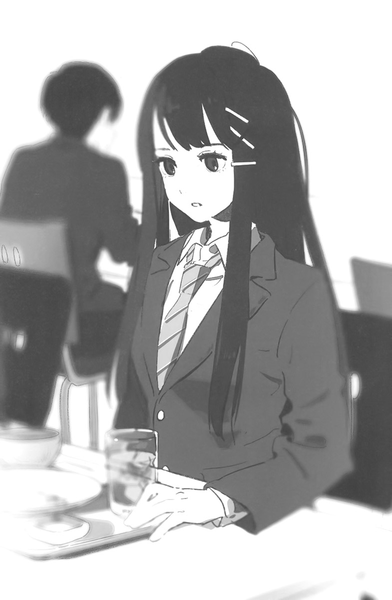椎名向我發問。我搖搖頭。
「沒辦法。這不是我處理得來的問題。」
「真沒……那就沒辦法了。」
「妳剛才想說我很沒用對吧……」
為什麼對我這麼苛刻啊？
「我吃飽了。」椎名吃完竹筴魚定食，很有家教地說道。至於真島的咖哩則還有剩。因為一直說話，吃飯的速度反而慢了。
我環視周圍，原本擁擠的餐廳如今空曠了許多，包含真島在內，還在吃飯的，只剩幾人而已。其他用餐完畢的人則是坐著聊天。
椎名以手拄著臉頰，等真島吃完。
「不過亞里沙應該沒問題吧。因為她的好勝已經到異常的程度了。」
那才是該擔心的地方吧。那好勝的個性引發了一堆問題不是嗎？我忍著沒把這句話說出口。
「……妳很挺西園呢。」
椎名聞言皺眉。
「這是什麼意思？」
「啊，不，我沒有別的意思。我只是在想像妳這種優等生型的人，應該和西園很不對盤……就算處不好也不奇怪而已。」
「哦……是沒錯。」
椎名打發時間似地拿起杯子喝水。
「因為我沒辦法違逆她。」
「咦？妳有什麼把柄在她手上嗎……？」
「不是。是因為我欠她人情。」
「人情？」
「我們和亞里沙是同一所小學畢業的。但小學時沒有說過話，只知道她的名字而已。可是上國中後，我們變得很熟。」
「我也是～」
真島邊吃邊附和。
我知道真島與椎名是童年玩伴，沒想到她們和西園也認識很久了。
「國二時，我們三人同班。班上有個不良少年，聽說他曾經用刀子刺過人，所以沒人敢惹他。」
「啊，我知道了。西園揍了那傢伙對吧？」
「咦？你怎麼知道？」
「欸？她真的那麼做了？」
我只是隨口說說而已，居然猜中了。
「為什麼會變成那樣啊？」
「……那時候，我一直被那個不良少年騷擾，覺得很困擾。有一天，我和亞里沙一起當值日生，我們正在打掃時，那個不良少年來騷擾我，說『不要掃了，和我一起回去啦』。」
「啊……」
「雖然我拒絕了，但他還是一直糾纏……最後是亞里沙趕走他的。因為那不是能夠好好說話溝通的對象，最後就變成全武行了。那場面真的很驚人……上數學課時，不是會用到很大的木製三角尺嗎？亞里沙就是用那個狠打那不良少年的臉。國中時，做得到那種事的，只有亞里沙而已。」
她們念的國中，校風太差了吧。
是說，國中生不如高中生穩重，可是又比小學生狡猾，正值殘忍的年紀。再加上鄉下地方的國中，相當於把附近同年齡孩子強制集合在一起生活的場所，就環境而言，比高中更容易出現暴力行為。西園那種戰鬥民族般的性格，說不定就是在那段時間培養出來的。
「在那之後，那個纏著我的男生再也沒有接近過我。我和亞里沙說話的次數也愈來愈多……就是這樣。」
「原來如此……」
與其說是變熟的過程，不如說是勇者傳說。椎名之所以到現在還關心著西園，原因就在此。
可是，可是啊……
我還是覺得很介意。既然和西園那麼熟，不是該點破西園的盲點嗎？朋友陷在虛幻的執著中時，幫忙把她拉出來，才是真正的朋友吧？
雖然我有很多想說的話，可是說出來很像在教訓人，所以我猶豫著到底該不該說。
也許是發現了我的不滿吧，椎名有些內疚地垂下眼簾。
「……之前也說過，我不是完全認同亞里沙的行為。也有完全不能接受的部分。可是，我還是放不下她。」
我無法接受椎名的說法。雖然我懂那種放不下的心情，但這和那是兩碼子事……唔……
「總之就是心情的問題吧……」
我就此打住。因為我不打算和椎名爭辯，也不想被她討厭。
「……咦？可是，雖然妳說放不下，但也沒有和她一起吃午餐啊？」
「是啊。因為亞里沙最近一直擺出『不要和我說話』的態度。」
「現在她不論對誰都是那樣呢……」
「我吃飽了～」
真島慢條斯理地插嘴。她總算把咖哩全部吃完了。
「啊～肚子好撐。原來大份的這麼多……因為小夏吃得很輕鬆，害我以為量不多呢。」
真島以餐桌上的紙巾擦嘴，交互看著我和椎名。
「嚴肅的話題說完了？」
「嗯。」
「是啊。」
我與椎名同時回應。
「哦，變熟了嗎？好棒啊～敞開心胸，互相包容理解是很美的場面哦。」
真島連連點頭，「不過啊紙木——」她又加以強調：
「不可以搶走我的小椎哦。」
「不，我才不會……」
這傢伙在說什麼啊……
我感到傻眼。椎名露出滿足的表情。
妳們的關係才美吧。我在心裡吐槽。
✽
手機鈴聲響個不停。
我拿起放在一旁的手機，關掉鬧鈴。時間是早上五點。汐應該也醒了。必須仔細觀察才能發現的微弱日光，從窗簾鑽進房間。
為了避免不小心再次睡著，我猛地挺起身體，換上運動服後下樓。
「好想睡……」
眼皮很重。很久沒這麼早起了，身體正不滿地抗議著。
我正在浴室洗臉，腳步聲從樓梯傳來，停在我身後。
「幹嘛……要出門……？」
我隔著洗手臺上方的鏡子，見到妹妹彩花。她頭髮亂糟糟的，兩眼無神。由於彩花總是比我早起，所以這副剛睡醒的模樣，使我感到很新鮮。
「嗯，我有點事。」
「有事……？哦……撿垃圾做公益……」
「不，不是……」
「……收音機體操……」
她似乎睡呆了。我當然也不是為了收音機體操才早起的。
彩花搖搖晃晃地走上樓梯。那傢伙是來幹嘛的？我正心想，她又走了下來。
「……尿尿……」
她說完，走進廁所。
那罕見的模樣，使我完全清醒了。我刷完牙，兩手空空地走出大門。
「嗚！好冷……」
冰冷的空氣刺痛肌膚。
呼——我從丹田呼出的氣體，化為白色的煙霧。雖然說為了通風，所以選了尼龍運動服，但裡面也許該多穿一點。可是回頭又很麻煩，我跨上停在院子牆邊的腳踏車，騎出家門。
上次這麼早出門，是什麼時候的事呢？
儘管快黎明了，萬里無雲的天空仍然很昏暗，只有遙遠的東方稍微出現晨曦的漸層。
好安靜。就連秋蟲都在沉眠。聽得見的，頂多只有送報員的機車聲而已。
騎了大約十分鐘，我來到某間民宅，停下車子等待。
不久之後，民宅的大門喀嚓一聲打開，穿著運動服的汐走了出來。
我踩著腳踏板，移動到在門口做暖身運動的汐附近。
「早啊，汐。」
我在煞車的同時對汐說道。汐朝我看來。
「嗯……？哦，咲馬，是你啊……」
他看起來一臉愛睏，眼睛只睜開一半，聲音含糊不清。
「聽說你早上也會練習，所以我來陪你了。」
「哦……」
因為我沒事先通知就來了，還以為汐會很驚訝，沒想到他反應這麼平淡。
他真冷靜啊……我才剛這麼想，汐原本惺忪的睡眼突然完全張開。
「咦！咲馬！？你怎麼會在這裡！？」
反應太慢了吧！所以只是睡呆了而已嗎？
「我剛才說過了……聽說你早上也會練習，所以我來陪你了。你不是說早上很難起床嗎？我想說有其他人在，應該比較容易醒吧。」
「那、那可以先跟我說一聲啊。」
「因為我覺得突然出現更有效果嘛。」
「這……確實是醒了沒錯……」
汐露出困惑的樣子。難道說我的行為成了反效果嗎……但人都來了，也不能直接調頭回去。
「如果不會造成妨礙，讓我參觀你練習吧。」
「雖然是不會，但……嗯，好啊，有人在的話，我會更認真吧。」
「那我就跟在你後面吧。」
汐點點頭，開始做暖身運動。
大約過了十分鐘，身體伸展完畢後，「跟上來吧。」汐說完，跑了起來。我照著汐說的，騎在他後方。
我慢慢踩著腳踏車，跟著滑順地搖晃的銀金色頭髮前進。來到河邊的道路時，太陽完全升起來了。
金色的光芒斜斜照射在地面上，肌膚開始發熱，身體變得暖呼呼的。真舒服，偶爾早起也不錯呢。我心想。
汐放慢跑步速度，和我並肩前進。
「田徑隊的顧問說過，邊跑邊說話，可以讓體力變好。」
「不是容易變累嗎？」
「是沒錯，但是邊跑邊聊天的話，跑的時候比較不會覺得難受。」
「原來如此。那就來聊天吧。」
雖然我這麼說，可是想不出要聊啥。因為腦袋還沒完全清醒。
當我正在思考該聊什麼時，「彩花最近怎麼樣？」汐已經主動拋出話題了。
「挺好的。和暑假時你看到的差不多。今天早上我們還說過話呢。」
「這麼早嗎？她很早起呢。」
「不，她只是起來上廁所的。她根本沒睡醒，看到我出門，還問說是不是要做收音機體操。」
「哈哈，真可愛。」
「要是她平常也那樣該有多好。她清醒時，看到我除了謾罵就是謾罵。啊，不過你來時她都很乖哦。那傢伙很害羞的。」
「哦，真想再和她見面。」
「你隨時都可以來啊。她會很高興的。」
「那下次再過去打擾吧……」
「嗯。儘管來。」
嘩啦。魚兒躍出水面。
今天的水流很平穩，河面反射著朝日陽光，如碎玻璃似地閃閃發亮，看起來很美。但非法棄置在河邊的巨大垃圾與廢棄物也因此變得更加礙眼。雖然應該早就有人向行政機關反應了，可是那些東西從很久以前就一直在那裡，從來沒有處理過。
我偶爾會想，
我們住的這座叫椿岡的城市，應該在很多方面都被忽視了吧。
通學道路的坑坑洞洞沒有修補，商店街的客人被大型購物中心吸走，現在和廢墟沒兩樣。我聽父母說過，由於年輕人愈來愈少，義消和地區慶典的辦事處總是招募不到足夠的人手。
而我，總有一天也會離開椿岡。
雖然這裡是我出生、長大的故鄉，但我對這座城市沒有半點眷戀。就算有人責備我「你想拋棄故鄉嗎？」我也不會因此心生任何罪惡感，能果斷地離開這裡。
而汐呢？
對了，我還沒和他聊過將來的出路呢。
從他的選修科目看來，他肯定會繼續升學。可是我不知道他想去哪間大學。
「高中畢業後，你有什麼打算？」
呼、呼、汐規律的呼吸，頓了一下。
他吞了吞口水，恢復原本的節奏。
「我打算去東京念大學。」
「是嗎？我也是哦。」
我放心了。
就算大學不一樣，只要兩人都在東京，應該就不會離得太遠。即使不會真的經常聯絡，但是聯絡一下就能簡單見面的事實，還是使我感到安心。
「你從以前就一直說要去東京了。」
「有嗎？」
「有。」
我翻找腦中的記憶。
……有說過嗎？雖然小學時確實說過「我想搬去東京」之類的話。
不過我應該真的很常說吧，只是忘了而已。因為我從小就很嚮往東京了。
「雖然我那麼說，可是我只去過東京迪士尼呢。」
「迪士尼在千葉哦。」
「咦？可是它叫東京迪士尼哦？」
「雖然名字有東京，但地址在千葉縣哦。」
「真的假的？」
「東京迪士尼在千葉，是很有名的梗。」
「真的嗎？我一直以為自己去的是東京……」
真丟臉。
之後，我們一面沿著河川前進，一面閒話家常。雖然汐的話愈來愈少，但是一直維持著同樣的跑步速度，真不愧是他。
過了大約四十分鐘後，汐放慢速度，改成走路，應該是進入冷卻時間了吧。我也下車，改成推著腳踏車前進。和煦的陽光溫柔地推著我們。
汐以運動服肩膀的部分擦去從額頭流下的汗水。
「我覺得今天的速度很不錯。」
「那真是太好了。」
「感覺起來，有其他人在時，時間果然會過得比較快呢。」
汐小心翼翼地看著我。
「方便的話，可以再來陪我嗎？當然不用每天來。」
「可以啊。我每天都會來的。」
「不用啦，這樣太對不起你了。早起很辛苦吧？」
「雖然起床時是有點辛苦，但是早上活動身體，意外地挺舒服的。而且空氣又清新，周圍很安靜，陽光也很溫暖。所以我會陪你的。」
汐眨了眨眼睛，輕笑著低下頭。
「……謝謝。」
沒什麼啦。我回道。
汐在途中的公園稍微拉了拉筋後，與我一起回到他家門口。
「那就學校見了。」
「嗯，晚點見。」
打過招呼後，我騎上腳踏車。
還稍微殘留著一點黑夜的天空，有如被大支筆刷畫過似的，變成一整片的蒼藍。
✽
我打著呵欠，朝二年A班的教室前進。
本來以為陪著汐跑步，會讓自己完全清醒，可是隨著時間經過又開始想睡了。這下子上課時可能會不小心睡著吧。由於我今天相對早到校，離班會還有十分鐘左右，乾脆趁這段時間補眠好了。
我半睡半醒地在走廊前進，有人從後方拍我的肩膀。
我轉過頭——厭煩瞬間湧上。
「……世良。」
「早啊咲馬！你好嗎？」
世良以清爽到令人煩躁的笑容打招呼。睡意加上厭煩，使我更不愉快了。
「有什麼事？」
「沒事的話就不能找你說話嗎？」
「不是不能……不對。是不能沒錯。沒事的話不要和我說話，因為你很煩。」
「別這麼過分嘛，我們感情不是很好嗎？」
「誰跟你感情好了。」
我不想無謂地浪費時間，所以加快走路速度想甩掉他。但即使經過了D班的教室，世良還是跟著我。
「喂，你想去我們班嗎？」
「是啊。和A班的人聊天挺愉快的。」
真正的目的是噁心西園吧。
「……你不要一直招惹西園啦。」
「咦？你是站在亞里沙那邊的嗎？」
這種回答跟承認了沒兩樣。他似乎不打算隱瞞自己的目的。
「我是叫你不要惹事生非，不然下場很難說哦……西園那傢伙是真的會動手打人的。」
「那還真可怕。但她贏不了我的。」
世良乾脆地說著。
先不管比什麼輸贏，情況確實對西園壓倒性地不利。因為她不能盡情反擊。
世良應該也知道西園第一學期曾被停學的事。在那之後，西園表面上安分了很多。假如她再惹事，說不定會遭到更重的懲處。總之現在的西園，相當於吃了黃牌的狀態。
相比之下，世良雖然不是什麼品性端正的好學生，但也沒有惹出事情過。至少在老師們眼中，世良比西園乖多了。
所以世良才會說「她贏不了我的」吧。
「你個性也太惡劣了吧。在安全的地方用陰險的方法噁心人很好玩嗎？」
「真意外你會這麼說。不過之後會更好玩哦。」
世良以天真無邪的表情說道。
A班到了。
我走向自己的座位，世良去找班上女生說話了。
在那之後，每逢下課時間，世良都會來A班。
做的事和昨天一樣，就是找過去和西園有交情的人說話。似乎有些人發現他的意圖，委婉地拒絕他。但世良當然不會因此退縮，反而巧舌如簧地逗那些人，使他們自然地發笑，熱絡地聊了起來。真是了不起的話術。我半是傻眼，半是佩服。
至於世良的目標西園，則是露出明顯的煩躁之色。不是一直抖腳，就是惡狠狠地瞪著世良。一般人的話，光是被她瞪就會害怕了，世良卻面不改色。
午休時間。
我整理好桌面後，蓮見拿著便當過來。
「昨天怎麼樣？」
「什麼怎麼樣？」
蓮見在我前面座位的椅子坐下，和我面對面地說話。他今天和平常一樣，是在班上吃午餐。
「你不是和槻木他們一起吃飯嗎？」
「哦，午餐的事啊……沒有，後來我去餐廳了。因為我忘了帶便當。」
「喔，一個人嗎？」
「還有真島和椎名，我們三個人一起。是她們找我坐一起的。」
「找你？還真受歡迎啊。」
「才沒有……不過我最近和女生說話的機會變多了，說不定真的是那樣呢。所以我接下來會開始走桃花運嗎？」
「你們聊了什麼？」
「無視我喔……」
我心血來潮裝傻讓蓮見吐槽，但似乎沒能讓他聽懂，他直接忽略我的話。就像說了冷笑話似地，感覺很丟臉。不，確實是冷笑話沒錯。
我打開便當包巾，開始吃飯。
「聊了很多。不過大部分是關於西園的事。因為最近的她感覺挺危險的。」
「的確。有種該說是怒氣呢，還是憎恨之類的負面情緒一直外洩的感覺。」
「嗯，很神經質呢。」
我夾起白飯，放進嘴裡。
但其實我並不認為現在的狀況很糟。只要世良的注意力一直放在西園身上，我和汐就能過著平穩的日子。事實上，打從西園在世良頭上倒牛奶的那天起，世良就沒來找汐說話了。
雖然這麼說不太好聽，但那兩人最好互相毀滅。再說汐目前正忙著與能井決勝負，也沒空理世良。
「你覺得誰會贏？」
「咦？」
「西園和世良，哪邊會贏。其他班的人也對這件事挺有興趣的。」
因為他們兩個人都惡名昭彰——蓮見補充說完，咬了一口炸雞塊。
「不是輸贏的問題吧。還有，當鄉民不好哦。」
「是嗎？我覺得無所謂啊。而且世良好像樂在其中。」
「就算是那樣……」
我正思考著該如何反駁，世良走進教室，真是說人人到。
他右手拎著塑膠袋，看來今天也打算在A班吃午餐。
世良鎖定一名原本是西園小圈圈的女生，朝她走去。最近這幾天，兩人似乎已經混熟了，就算世良接近，女生也沒有排斥的樣子。
兩人嘻嘻哈哈的笑聲傳了過來。
『之後會更好玩哦。』
今天早上，世良這麼說過。那若有深意的說法使我很在意。所謂的「之後」，具體來說是指什麼時候呢？已經開始了嗎？或者還沒？他究竟想做什麼？
想不出來。
是說根本沒必要相信世良的話……當我心裡這麼想，正想動筷子時，聽到一陣「咚咚咚咚」的輕微敲擊聲。
那是在午休的喧鬧中，小到會令人以為聽錯了的聲音。可是，我確實聽見了。
我豎起耳朵，尋找聲音的來源。
聲音是從西園那裡傳來的。她右腿抖動不已，以腳跟撞著地板。
咚咚咚咚咚。
帶著焦躁的、神經質的聲音。我沒來由地聯想到定時炸彈。西園心中的計時器應該已經開始倒數了吧。滴答滴答，秒針確實地接近零。
希望爆炸的衝擊不會影響到我們。
✽
陪汐晨跑，已經是我最近每天都要做的事了。平常汐總是跑一個小時，回家沖澡後再上學。假日的話則是早上八點開始跑，交互跑步與拉筋的練習，一直練習到中午。是相當嚴格的菜單。
距離與能井的比賽，已經不到一個星期了。儘管從汐身上感覺不到壓力，但對他來說，應該是不能大意的情況吧。真要說，我比他還緊張。假如汐回男子田徑隊的話，我和星原會很困擾的。今後就不能一起回家了。
「然後啊，打了招呼後，我才發現我根本不認識那個人。可是感覺還挺合得來的，於是就變成朋友了——」
世良高亢的聲音闖入我的耳朵。
我停止思考，朝世良看去。今天午休，他也一如往常地泡在A班。自從被西園澆牛奶後，世良就頻繁地出入A班。午休不用說，連只有十分鐘的下課時間，除了要換教室上課的情況外，他一定都會來A班晃晃，就算A班的合照中出現世良，也沒人會覺得奇怪了。
仔細想想，那時候也是。
世良向汐告白後，直到放暑假為止……那段時間，世良也同樣頻繁地出入A班。不過他當時是為了接近汐。這樣聽起來，世良對汐似乎很專情，可是當時他已經有好幾個女朋友了，而且我為了汐以期末考成績和他對賭時，他卻在考到一半突然不來勁了，隨便寫寫，最後輸給了我……總之，實在不知道他在想什麼。
這次也一樣，我猜不透他到底想搞什麼。
午休接近尾聲，下午第一節課即將開始的預告鈴聲響起。世良差不多該回D班了。
世良看了牆上的時鐘一眼，中斷與女生們的對話，起身朝西園走去。
他不回D班嗎？
我注意著世良的動向。只見他在西園的桌前停下腳步，居高臨下地看著以無聊的表情滑手機的西園。
發現世良的存在，西園厭煩地抬頭。
「……幹嘛？」
「我想和妳說說話嘛。一個人很寂寞吧？」
「我不想和你說話，你走開。」
「別這麼說嘛～」
世良極為自然地一屁股坐在西園桌子上。
「你在幹嘛？滾開。」
「有本事就把我趕走啊？」
「啥？你在說什麼？小心我揍你。」
「揍我？妳辦得到嗎？」
西園咬著牙。見到那模樣，世良露出滿意的表情。
「做不到呢。因為妳有前科。要是再惹出什麼事，會影響升學的。就算是亞里沙，也不想變成那樣吧。」
「……你是故意來嗆人的？犯賤的畜牲。」
「亞里沙，妳不懂嗎？」
世良平淡地說著：
「我之前就想說了。其實啊，我是有點生氣的哦。不過那也是當然的，因為被人從頭上倒了牛奶嘛。那天我身上的牛奶味一直去不掉，很傷腦筋呢。回班上後還被大家嘲笑，嫌臭捏著鼻子不想靠近我。雖然我也可以向老師告狀，可是我沒有那做，妳知道為什麼嗎？」
「誰知道啊。」
「因為我可憐妳哦。藉由老師的權力，反擊像妳這樣沒朋友又沒有力量的弱女子，對妳也滿不公平的。所以還是用對話的方式解決吧。只要妳對我說一句對不起，我就原諒妳。」
「你從剛才，就一直說些有的沒的……」
西園猛然地起身，椅子因此發出巨大的噪音，吸引了班上同學的注意力。不少人露出擔心的表情，特別是真島與椎名，看起來相當不安。
西園非常憤怒。她眉間出現深深的皺紋，眼中燃燒著晶亮的怒火。
「你憑什麼高高在上地說話？為什麼我非向你道歉不可？因為我把牛奶潑在你身上嗎？我說了，那只是手滑。」
「就算我退讓一百步，把那件事當成意外好了。妳還是該道歉啊。」
「我那時候不是有說對不起了嗎？說起來，你做的事和想法都有夠心眼小屁眼小的。最近天天來A班晃，是為了噁心我吧？那種繞著圈子噁心人的陰險做法，有夠下賤。」
「那是——」
「反正你想用被害妄想或自我感覺良好來堵我對吧？少鬼扯了。像你這麼會玩弄人心的傢伙，怎麼可能不是故意的。不對，你是不是故意的都無所謂了。你的聲音實在很刺耳，給我永遠閉嘴，不准再來我們班。要是你再說一句話，我就把原子筆戳進你嘴裡。」
呼——！呼——！西園粗重的喘氣聲，迴蕩在鴉雀無聲的教室裡。
沒有人敢說話。身高不到一百六十公分的小個子女孩發出的魄力，壓倒了全班的人。
彷彿在等班上安靜下來的這一刻似地，上課鈴響起。直到鈴聲結束為止，兩人的視線都沒有離開對方。
笑容從世良臉上消失。他的眉尾逐漸下垂，露出憂傷的表情。
「……真可憐。」
「你說什麼……！」
西園一把揪住世良的領子。世良離開西園的桌子，站了起來。兩人因此出現明顯的身高差距。但西園仍然毫不退讓，自下而上地瞪著世良。
「可憐是什麼意思？」
「就是字面上的意思啊。仔細想想，妳之所以會有這麼嚴重的被害妄想，也是無可奈何的呢。因為妳被朋友疏遠，被老師當成麻煩人物，還被喜歡的人背叛。真的很可憐呢。」
「啊？」
世良說道：
「妳喜歡汐對吧？」
西園說不出話，露出被從意想不到的方向飛來的子彈穿胸而過般的表情。
「我是聽妳朋友說的。喜歡的男生突然以女生的模樣上學，妳的打擊一定很大吧？只要想像妳的心情，就覺得心痛呢。妳之所以找汐的碴，其實只是希望他變回男生對吧？」
「……你——」
西園揪著世良領子的手開始發抖。不只手，嘴巴、眼睛，全都充滿錯愕。
「你在說什麼？我怎麼可——」
「那時候也是這樣吧？」
世良打斷西園的話。
「妳停學的原因，是以水壺打了汐對吧？居然弄傷那麼漂亮的臉，真是太過分了。我本來那麼想，但是打聽之後發現妳不是故意的。而且打到汐時，妳整個人都動搖了呢。其實妳只是希望汐能看著妳而已對吧？對妳來說，之所以一直找汐的碴，完全是出於好意。所以真的傷到汐的身體時，才會動搖成那樣。」
「不是。」
「可是啊，已經不可能了。」
世良笑了起來。
「不論妳多麼為汐著想，汐都不會感受到妳的好意。自己的生活方式被人否定時，有人會覺得開心嗎？還是妳以為只要一直找汐的碴，到最後他就會感謝妳呢？謝謝妳把我拉回正途！之類的？怎麼可能。就算汐最後選擇以男生的身分生活，妳也只會成為他的心理創傷，他絕對不可能因此喜歡上妳的。絕對不會。連這種事都看不透，愛情果然是盲目的呢。」
「……閉嘴。」
西園從腹部擠出聲音，低聲說道。臉因羞恥與憤怒而漲得通紅。
我明白西園的屈辱。因為我也有那種經驗。被世良指出我的盲點時，我有一種自己是無知幼兒的錯覺。西園一定覺得更難堪吧。她的自尊心本來就高，如今自己的戀情在這種情況下被揭穿，相當於被公然羞辱了。
見到這場面，汐有什麼感覺呢——我突然在意了起來，朝他看去。儘管汐看著兩人，可是臉上沒有任何表情，既不像認同世良的話，也沒有可憐西園的樣子。只是單純地看著兩人。
「說起來，就算汐以女生的身分生活，也不等於他的戀愛對象會變成男生啊。如果妳能表示理解，和以前一樣接受他，說不定還有被他喜歡的機會。是妳親手毀了那個機會。」
世良的嘴角愈揚愈高。
「而且不只那樣。除了汐不喜歡妳，妳的朋友們也都對妳很失望。妳失去了所有人的人心。妳想想嘛，就算我這樣戳妳，也沒有人來阻止我說下去，每個人都冷眼旁觀。這就是鐵證。不過這也是因為我的話是對的——」
「我叫你閉嘴！」
西園終於爆發了。
她高舉右手。
「不行！亞里沙！不可以——」
直到這時，原本旁觀的真島總算出聲。但她的話沒有被聽進去——
西園的拳頭，重重擊在世良臉上。
喀！
骨頭與骨頭，肉與肉的撞擊聲，響遍整間教室。
有人尖叫。教室出現騷動。
班上所有人，全都目擊了西園揍了世良的場面。
「哈哈，真痛啊。」
明明被打，世良卻笑了起來，還露出得逞的表情。
西園再次掄起拳頭，可是沒能打中世良。因為世良捉住了她的手腕，使她動彈不得。
「放手！」
「遇到事情就使用暴力，是很糟糕的方法喔。因為事情不會因此好轉——雖然我想這麼說，但這次就不一定了。不過對妳來說，是妳輸了呢。」
「你……！」
「想要我放手嗎？好啊。不過要再等一下哦。時間差不多了。」
「我聽不懂你在說什麼你快點放——」
「你們在做什麼！」
有人發出大吼。
我看向門口，歷史老師剛好走進教室。雖然他不明白發生了什麼事，但還是看得出情況不對。
忙著注意西園與世良，害我沒發現已經要上下午第一堂課了。
難道……
世良就是在等這一刻？故意在老師快來的時候激怒西園，引誘她打自己，製造西園使用暴力的證據，讓西園沒有退路……
這一切，全是為了報復西園。
比起世良的心機，他那不惜被打也要報復的態度，更讓我覺得了不起。就算對方是女生，被拳頭打臉還是很痛吧。難不成他沒想到會被打臉嗎？……不，根據西園的個性，應該可以料到她真的會打臉。再說，想展示被施暴的證據的話，臉是最好的部位。
最重要的是，世良那惡魔般的笑容。明明白白地闡述他的計畫成功了。
「時間到了哦。亞里沙。」
一道鮮血從世良破裂的嘴角流下。
不知何時，他已經放開西園的手了。應該是為了強調自己是「受害者」吧。
「糟透了……！」
西園總算察覺世良的意圖，以及自己中計的事。她懊惱地咬著嘴唇，瞪著世良。
「喂！你們有沒有聽到！你們在做什麼！」
老師朝兩人走去。假如世良說明情況，老師勢必會做出對應。就算沒說，只要看到世良臉上的痕跡，老師八成也猜得到發生了什麼事。
不論如何，西園都無處可逃了。
「真遺憾呢。」
世良得意地笑著。
至於被逼到走投無路的西園——
「……哈！」
在這種情況下，她笑了。
虎牙從咧開的唇縫間露出。那是做好覺悟的，充滿攻擊性的笑容。
「別小看我。你這垃圾。」
世良錯愕地睜大眼睛。
西園再次高舉拳頭。
砰！
✽
隔天午休。
吃飯前，我想先去上廁所。
前往廁所的路上，我不經意地看向外頭。天空烏雲密布，感覺隨時會下雨。放學時說不定真的會下雨吧。雖然我有雨衣，可是在風雨中騎腳踏車回家，光是想像就很沒勁。
我來到男廁，很快地解決了生理問題。
在洗手臺以冷水洗手時，有人來到我身邊，看著鏡子，以髮蠟整理頭髮。那人身材高瘦，頭髮染成亮眼的金色。
是世良。
我透過鏡子看他。
「真慘。」
我小聲說著。
世良的左眼戴著眼罩，左頰腫得老高。吸引女人的臉蛋毀於一旦。
「真是敗給她了。沒想到她會在那種情況下繼續打人呢。那女生真的有問題吧。」
嘿嘿。世良露出靦腆的笑容。
在那之後，西園立刻被老師帶走，被停學三天。懲處之所以比上次輕，聽說是因為班上同學把世良主動挑釁的事告訴校方，以及伊予老師努力幫西園說話。但這些都只是聽說，不知是真是假。
至於世良，則被禁止出入A班。為了避免不必要的麻煩，學校原本就有禁止學生出入其他班級的規定。校方是用這條名存實亡的校規要求世良的。雖然不知道對世良來說這懲罰重不重，但還是比停學輕多了。
「有問題的是你吧。」
我關掉水龍頭。把手上的水甩掉，看向他。
「你本來就知道自己會被揍吧？」
「那就是我的目的啊。」
世良乾脆地承認。看著鏡子，抓著頭髮，好把髮蠟揉進頭髮中。
「你還真做得到那種事呢。一般來說，就算想到可以那麼做，也不會真的去做吧。不會痛嗎？」
「當然會痛了。臉腫到眼睛只能睜開一半，還被女朋友們笑呢。」
「明知道會變成這樣，也非整西園不可？」
「你今天很積極呢。希望你平常也對我這麼有興趣。」
被世良一說我才發現，平常我絕對不會主動和他說話，會立刻離開。這次卻沒有這麼做。為什麼？
因為我想知道世良在想什麼。
雖然不想和這種難以捉摸的傢伙扯上關係。但這次是好奇心贏了。
「好了，你快回答啦。」
「該回答嗎——啊，如果你肯說服汐和我出去玩，我就告訴你。」
「那就算了。」
我用手帕擦手，朝出口走去，被世良以「開玩笑的啦。」叫住。
「真沒辦法，既然是咲馬問的，就特地告訴你吧。免費的哦。」
我開始覺得有些厭煩。但既然他要說，還是聽聽吧。
世良把身體靠在洗手臺上。
「呃——她叫亞里沙，是吧？我沒有恨她哦。但是有借就要有還嘛，不然心裡會不痛快。得確實地清算才行。」
「清算……」
我再次端詳世良的臉。眼罩外的部分也有紫色的瘀血，光是用看的就覺得很痛。
「這樣不划算吧？被打兩拳，太虧了。」
「是嗎？這點小傷，很快就會好了。」
「雖然會好……但是很痛吧？」
「疼痛不過是一種訊號哦。」
世良突然說起類似思想觀念的言論，我有點驚訝。
「……你在逞強？」
「說訊號是有點過頭了。應該說我不怎麼在乎疼痛吧。」
「不在乎？」
「是天生的。比如說冬天時，有些人不敢碰金屬類的東西，怕被電到。但是我就沒什麼感覺。當然被電到的瞬間會痛，但反正只有一下下而已。所以我覺得大家的反應都太誇張了。」
「哦——……」
要說是怪人的話，確實是很怪，可是又好像還好，挺微妙的。不過不在乎疼痛的說法，似乎是真的。
「還有，治療蛀牙時從來沒有舉過手。」
「那是因為牙醫的技術好吧。」
「也不怕打針。」
「那又沒什麼……不對，確實很厲害。」
打針時，不管誰都會緊張。特別是小時候。小學時在學校打預防針時，小孩子會接連哭出來。就算說不怕，也看得出來是在逞強。我是後者。就算是現在，打針時我還是會緊張。
雖然不覺得世良怕打針，但如果他從小就不怕……
「怎麼說……不太有人類的感覺呢。」
我突然產生這般感想。
不是沒常識，但世良的認知和常人有點不同。彷彿來自其他星球的外星人，披著地球人的皮似的……經常有這種感覺。儘管我不想認為那樣不好，但還是會想避開。
「不是有蜈蚣嗎？」
「啥？蜈蚣？」
突然冒出沒關係的詞彙，使我忍不住回問。
「那巨大的牙齒！光滑的外殼！我啊，從以前就覺得蜈蚣是最帥的蟲類哦。」
「你在說什麼？」
「小學時，教育臺有播過介紹蜈蚣的節目。」
世良無視我的話，繼續說下去：
「蜈蚣是一種保護過度的生物哦。產卵後會一直不吃不喝地保護著卵。以細長的身體捲起卵團，有敵人接近時，就攻擊他們。而且還會一直清洗卵團，讓卵保持乾淨。從那樣的外表，實在看不出來蜈蚣那麼有母愛呢。」
我不懂世良想表達什麼。剛才的話題和蜈蚣有麼關係？我說世良沒有人類的感覺，他卻談起蟲類？
儘管覺得莫名其妙，可是這話題又奇妙地吸引人。
「但是啊，蜈蚣還有一個有趣的習性哦。」
「……」
「雖然蜈蚣會拚命保護自己的卵，但也有做不到的時候。例如被鳥或青蛙、螳螂攻擊時。假如蜈蚣明白自己保護不了卵時，你知道蜈蚣會怎麼做嗎？」
我想了想後，搖搖頭。
世良微微揚起嘴角。
「蜈蚣會吃了自己的卵哦。」
「咦……」
「就是所謂的食卵。與其被敵人吃掉，不如自己吃了，讓卵成為自己的營養，好在日後繼續產卵。徹底地追求合理性。從保護的對象變成食物，立刻做出完全不同的選擇，這適應力太驚人了！在知道這件事時，我受到很大的衝擊哦。」
我臉頰忍不住抽搐起來。蜈蚣的習性很嚇人，但是開心地談論這些的世良也很詭異。
世良讓自己冷靜似地摸著下巴。
「所以啊，我就一直在想。」
「……想什麼？」
「我能做到同樣的事嗎？」
我說不出話。
「當然不是指吃掉自己的孩子。自己能夠基於合理的原則，親手毀滅自己最重要的東西嗎？……我從以前就一直問自己，也因此成為現在的自己。」
世良從洗手臺起身，緩緩朝我走近。
「至於我想說什麼——」
他停下腳步。
「就是啊，對我來說，被打這種事，完全算不上什麼。」
世良俏皮地眨著單眼，驅散嚇人的氛圍。雖然說在一隻眼睛被遮住的情況下這麼做，不知道能不能算眨單眼，但還是有型到令人火大。
「……我無法理解你的想法。」
「那還真遺憾。」
世良誇張地聳肩。
就在這時，其他男生閒聊著走進廁所，經過我與世良身邊，前往廁所後方。
剛才講太久，該回去了。
「……我要回去了。」
「難得碰頭，再聊一下嘛。我現在不能去A班了。」
「不能來最好。反正你已經贏西園了，就乖乖待在D班吧。」
這樣對我和汐才好。我可不想在班上被他糾纏。雖然無法感謝西園，但這樣一來，A班暫時可以保持平靜吧。
我走出男廁。
「還沒結束哦。」
世良这样说到。【+】
我嘆氣，轉過頭。
「不好意思，我要吃午餐了。」
「我不是說那個，我是在說亞里沙的事。」
「什麼？」
我忍不住皺眉。
「還沒結束……你還想幹嘛？」
「不，我什麼都不會做的。已經沒必要做任何事了。」
「不然呢？」
「反正你之後就會知道了。」
世良留下奇妙的話後就回D班了。
轟隆隆……雷聲遠遠傳來。
天空開始下雨。
「雨一直不停呢。」
星原以手拄著臉頰，看著窗外，憂鬱地說著。
午休時和世良說過話後，第五節、第六節課過去，來到放學時間。平常我和汐、星原會一起離開學校，但今天天氣不好。從第五節課起開始下起大雨，直到現在仍然風雨交加。
我和汐拉過附近的椅子，坐在星原身邊。除了我們，教室中還有不少學生。不是在等公車，就是在等雨變小。
「今天還是搭公車回去吧……」
星原說著，我也同意。
「這樣比較好。不只下雨，風也很大，如果摔到田裡就糟了。」
「紙木同學呢？」
「我有雨衣，可以騎車回去。汐，你呢？」
「嗯？什麼？」
汐抬起頭。他從剛才就一直在操作手機，似乎沒聽見我們說話。
「我是在問你要怎麼回去？星原要搭公車，你呢？」
「啊……會有人來接我。現在正在討論這件事。」
「原來。」
可以的話，我也想叫父母載我，但他們現在都還在上班，就算我打電話過去，他們也只會叫我自己騎車回家。
「你今晚也要跑步嗎？」
我如此問道後，汐點點頭。
「要。聽說雨勢到晚上會變小。直到比賽那天，我不想中斷練習。」
「加油……但是別著涼哦。」
「放心吧。我會管理好身體的。」
汐再次看著手機，繼續打字。
「對了，我聽小汐說了。」
星原朝我看來。
「紙木同學早上會陪小汐練習呢。」
「哦，是啊。雖然說是陪，不過只是騎著腳踏車跟在旁邊而已。」
「真好～如果我住得近一點，就能一起跑了。幫不上忙的感覺真讓人煩躁……」
「妳已經幫很多忙了哦。」
「咦～比如呢？」
「比如……光是存在，感覺就很療癒，之類的。」
「那算什麼啊？我又不是吉祥物！」
星原氣噗噗地抗議。我心想，這就是很有療癒感的地方啦。但是被療癒的，說不定只有我而已。
「對不起，我接個電話。」
汐起身，拿著手機快步走出教室。應該是父母打來的吧。
剩下我和星原兩人。
如果是文化祭以前的我，碰到這樣的場面會很緊張，但現在已經習慣了。距離第一次與星原說話，已經過了半年了。我一面與星原閒聊，一面回想當時的自己，覺得有點難為情。
「話說回來，紙木同學。」
星原壓低聲音說著，探出身子。與星原的距離一下子變得極近，使我心臟撲通一跳。根本沒有習慣嘛，我對自己吐槽。
「你和小汐是什麼感覺？」
「什、什麼意思？」
「只有兩個人時處得好不好，會不會覺得尷尬？」
「我想，應該處得不錯吧……」
「真的嗎？」
我點頭。「那就好～」星原放心了。
我與汐在文化祭前，關係曾經變得很差。星原應該是擔心我們心裡還有疙瘩吧。這麼懂得人情方面的細節，難怪在班上很有人緣，我佩服地想著。
「換個話題哦，你喜歡什麼類型的女生呢？」
「話題也跳太多了吧？為什麼突然問這種事？」
「沒什麼啦，只是聊天的話題而已。不用想太多，用直覺回答就好。」
「咦——？」
要我別想太多，反而會想太多吧。喜歡的女生類型。而且是星原問的……不，她應該沒有什麼深意吧。
「……溫、溫柔的人，吧？」
「還有呢？」
「咦？還有？還有什麼……唔——……」
烦。
喜歡的女生類型。雖然是常有的話題，但我和蓮見幾乎不聊戀愛方面的事，所以沒有特別思考過。班上男生偶爾會問「喜歡的女藝人是誰？」，可是我不太看電視，每次被問時都覺得不知該如何回答。
星原安靜地看著我，等我回答。我有點尷尬地垂下視線，眼睛不由得被隔著桌子探出上半身的星原的胸部吸引，因此——
「……胸部大的？」
「這樣不行！！」
「咦咦！？」
星原立刻否定我。
她收回身子，以拳頭亂搥桌子。
「真是的～這樣不行哦，紙木同學。真的不行。要看臉和內在。不能被那種表面的部分欺騙！」
「呃，是……」
不是吧，臉也是表面的部分啊……
「這次我就當成沒聽見，你要重新思考哦。」
「好的……」
被唸了。
但總比被嫌棄好多了。雖然我是不經大腦地隨便說的，可是仔細想想，那確實是有可能被視為噁男的發言。這樣一想，只是惹星原生氣，真是太好了。如果她因此覺得我噁，「啊，是這樣啊……哦～……」用這種態度和我疏遠的話，我應該會很想死吧。
是說，當成沒聽見啊……
雖然這樣比較好，可是我又覺得有點寂寞，為什麼呢？
「問一下你們哦。」
汐回來了。
他的手按在手機的受話口上，電話似乎還沒掛斷。
「怎麼了？」
「那個……雪姨說，可以送你們回家。」
「咦？真的嗎？」
星原一下子跳了起來。
「太好了，那就麻煩雪姨吧！」
「好。咲馬呢？」
「啊，那我也一起吧。」
雖然說把腳踏車留在學校，明天上學時會有點困擾，但既然有機會不淋雨，就讓雪姨載吧。
「他們都說好。」汐在原地講起電話，又說了幾句後，結束通話。
「不好意思，這麼突然。因為雪姨有點雞婆……」
「不會不會！我求之不得呢！而且我也很高興能見到雪姨。」
哈哈……汐苦笑起來。
雪姨是汐的後母，與汐的爸爸結婚三年多了，不過汐仍然叫她「雪姨」。雖然親子之間的隔閡一直存在，但既然他們會像這樣聯絡，表示他們應該處得不錯吧。我想這麼認為。
「話說回來，你們剛才在聊什麼？夏希好像生氣了……咲馬說了什麼嗎？」
「啊，呃……」
感覺不能說真話，我若無其事地看向星原。
「紙木同學說，他上次去吃迴轉壽司時，把白飯全都留下來沒吃。」
什麼跟什麼啊？我在心裡吐槽。
「咦？是這樣嗎？咲馬，你在減肥嗎？」
「不是，那個……嗯，就是這樣……」
「想減肥是無所謂，但還是要好好吃飯哦。」
「知道了……」
雖然有點硬凹，但是說出真相的話，好像會很尷尬，所以還是這樣吧。
大約二十分鐘後，雪姨傳訊息說到了。我們下樓來到鞋櫃區的出入口。由於車子只能停在校門口，所以我們換好外出鞋，在雨中全力奔跑。呀啊～星原邊跑邊哀號。
「就是那輛車！」
汐指著某輛黑色的轎車說道。
我們迅速地坐進車裡。汐坐在副駕駛座，我和星原坐在後座。為了不讓雨被吹進車子裡，我們很快地關上車門。
「雪姨好！受妳關照了！」
星原很有活力地對雪姨道謝。「要麻煩雪姨了。」我也跟著說道。
「沒什麼啦。因為夏希和咲馬很照顧汐嘛，你們不用客氣哦。」
車子緩緩地動了起來。
也許才剛下班吧，雪姨穿著筆挺的套裝。儘管這種形容很陳腐，但是看起來就像幹練的女強人。
「對了，咲馬，謝謝你暑假時和汐在一起。」
「啊，沒什麼啦……因為我很閒，有人和我在一起，反而比較不會無聊呢。」
「真的嗎？太好了。還有夏希，謝謝妳和汐當好朋友。汐在家裡時常提到妳哦。」
「咦？真的嗎！我好開心……」
「等等，雪姨。」
汐不太高興地喊了一聲。
「對不起對不起。因為我一直很想向他們道謝，有點太嗨了。」
「……算了，沒關係。」
車子因紅燈而停了下來。
嘩啦啦啦，車中充滿打在車頂的雨聲，以及雨刷忙碌的轉動聲。平常車流不多的道路，也因為下雨而有點堵塞。
「雪姨，妳剛下班嗎？」
號誌變成綠燈時，星原發問。
「還沒，我只是暫時離開而已。因為我在本地的大事務所上班，所以時間還滿通融的。妳知道什麼是行政書士嗎？」
「呃……有聽過這個名字。」
「簡單說，就是代替個人企業向行政單位提出各種文件的工作。雖然內容很複雜，但是習慣之後就很簡單哦。」
「哦哦……好像是很聰明的人才能做的工作呢……可是感覺很帥！」
「哈哈，謝謝了。如果想知道和契約有關的事，可以來問我哦。」
「好的！」
星原很有活力地回應。映在後照鏡中的雪姨看起來很開心。
「對了，我還要繞去一個地方，可以嗎？」
雪姨說道。汐回問：
「要去哪裡呢？」
「椿岡國中。因為還要去接操。」
咦？汐叫了一聲，從椅背挺起身體。
「妳有跟操說我們也在嗎？」
「沒有。說的話她應該就不會讓我載了……這樣會很糟嗎？」
「……是不至於。」
汐有些含糊地回道。
小操是汐的妹妹。由於汐很少提到妹妹的事，所以不清楚他們姊妹現在處得怎麼樣。可是從暑假前的情況看來，很難說得上相處融洽。從剛才的對話聽來，現在應該也沒有改善吧。
雪姨的車停在椿岡國中校門口。這裡是我和汐的母校。由於校舍的建造時間比椿岡高中早，在陰雨的天氣中，看起來更顯老舊。
雪姨播打電話，對受話口說：「我到了哦。」
不久之後，一名撐傘的國中女生朝這邊走來。應該是小操吧。星原朝座椅中間移動，騰出空間。車門打開了。
「真是的。好慢——咦？」
「妳、妳好～」
星原向小操寒暄。小操驚訝地睜大眼睛。
「啊，對、對不起！」
她用力關上門。
小操似乎以為自己認錯車了。她繞到車子後方，確認車牌號碼後，再次回到車邊，緊張地打開車門，在見到雪姨的臉後，面紅耳赤地大叫：
「如果還有別人，要先說啊！」
「對不起嘛，因為如果我先說，妳八成就不搭了。」
「算了。我一個人回去。」
小操正想關門，汐開口叫住她。
「操。上來吧。鞋子會髒掉哦。」
小操猶豫了起來，儘管只有一秒，卻能感受到劇烈的天人交戰。她不情不願地上車，抖落傘上的水珠後，把門關上。
「夏希，妳家在哪邊？」
雪姨問道。
「啊，送我到車站就好了。」
「真的嗎？不用客氣哦。這個時間的電車人很多很擠，再說出了車站，還是要走路。」
「呃……那就麻煩雪姨了。」
星原說了鄰鎮某間超市的名字。她家似乎在那附近。
「好，那就出發吧。」
車子以星原家為目的地，開始前進。
小操從口袋拿出手機，一臉無趣地操作起來。黑色短髮掛在臉頰上，可以見到白皙的細頸。是因為臉很小嗎？感覺她脖子特別長。
如果說汐像西洋人偶，小操就是很有英氣的日本人偶。兩人的氣質不同，但畢竟有血緣關係，五官很相似。
也許是因為坐在小操旁邊吧，星原有點坐立難安，從剛才起就一直偷偷窺探小操的模樣。最後，她下定決心似地把頭轉向小操。
「我們是第二次見面呢。還記得嗎？上次我和紙木同學一起去打擾……」
「……嗯。有點印象。」
小操看著手機回答，反應很冷淡。
「啊，我還沒有自我介紹呢。我叫星原，和小汐同班。常和小汐一起吃午餐。」
「這樣啊。」
「妳今年國三嗎？功課應該很忙吧……啊，已經想好要上哪間高中了嗎？」
小操嘆了口氣，蓋起手機。
「為什麼我非得和妳這個外人講這些啊？」
嗚！星原閉嘴。
好嗆。果然和上學期見面時一樣。以前明明更親人可愛的……
「操，妳這樣太沒禮貌了。」
汐轉頭責備小操。
「啊，我無所謂哦！」
星原搖動雙手，幫小操說話。但汐仍然以嚴厲的眼神看著小操。
小操完全沒有反省的神色，還哼了一聲。
「本人都說無所謂了，有什麼關係。」
「不行。好好道歉。」
汐以強硬的語氣說著。雖然不是對我說的，但我的胃還是收縮了起來。雖然幾天前也見過他生氣的模樣，可是現在與那時候又是不同的恐怖。星原也怕到將身體縮得小小的。
就連小操，似乎也被現在的汐震懾了。只見她有點狼狽地皺眉。
「跩什麼跩……」
「操。」
唉～小操重重嘆氣，看向星原說：
「對不起。」
「啊！沒什麼！我完全不在意哦～哈哈……」
星原的笑臉有點僵。對她來說，這也是會胃痛的發展吧。
汐似乎還想再說什麼，但最後放棄了，把頭轉回前方。
對話到此終止。車裡只有沉默。
小操再次操縱手機。汐拄著臉頰，恍神地看著窗外。雪姨正專心開車，我與星原不敢出聲。
氣氛……好凝重！
汐與小操之間的鴻溝，似乎又寬又深。難道說兩人在家時，也都像剛才那樣嗎？若是如此，也難怪暑假時汐會到我家避難了。這樣子，精神上根本不能休息。
看著那樣的兩人，雪姨會想什麼呢？肯定覺得不好吧。但是又難以改善兩人的關係。因為這對姊妹與雪姨之間，也有其他隔閡。
槻木家真的沒問題嗎……
彷彿在暗示前途不明的未來似地，雨愈來愈大了，短時間內似乎不會停。
在那之後，車裡不再有對話聲。大約十分鐘後——
「啊，在下一個紅綠燈右轉。」
星原戰戰兢兢地打破沉默。
前方有一間超市，是她剛才向雪姨說的地點。她家似乎就在附近。
車子照著星原的指示右轉，進入住宅區。前進了大約一分鐘後，星原表示：「就是那間三層樓的建築。」
雪姨放慢車速，讓車子停在星原指著的民宅前。
「停在這裡就好嗎？」
「啊，是的！今天真是謝謝雪姨了！」
星原在後座低頭致意，「不客氣。」雪姨笑著回應。
我從窗口抬頭，仰望右邊的星原家。
這是在這個住宅區中有點顯眼的氣派建築物。有車庫與前門，窗戶很大，院子很寬敞。由於建築物很現代，富有設計感，看起來很像新建的。用俗氣的方式來說……就是家裡很有錢的感覺。說不定還有養狗吧。
「紙木同學，借過一下。」
「啊啊，不好意思。」
我得先下車，星原才能下車。我打開車門下來，星原立刻下來。為了不被雨淋溼，「小汐再見。」她很快地對車內說完，接著看向我。
「紙木同學再見。」
「嗯，再見。」
星原以書包遮雨，小跑步地進入家裡。
我也迅速回到車裡。就在我擦掉睫毛上的水珠時，雪姨問我家在哪，我簡潔地說出地址。由於我家離汐家不遠，「哦，那裡啊。」雪姨馬上就知道了。
車子調頭，行駛在來時的路上。
車中剩下四人。我，以及槻木家的三人。氣氛還是很凝重，但沒必要特地炒熱氣氛。就算想聊天，也有可能不小心踩到地雷。身為被載的人，我還是保持沉默，直到車子抵達我家吧。
「對了，咲馬。」
我才這麼想，馬上就有人叫我的名字。我透過後照鏡，看著雪姨。
「是。有什麼事嗎？」
「明早也送你上學吧？你的腳踏車不是留在學校嗎？」
「啊……」
我原本打算明天搭公車上學的，但是公車站離我家很遠，所以雪姨的提議對我來說正好。可是連續兩天被她接送，有點不好意思。
「這樣好嗎……」
「有什麼關係。」
汐從副駕駛座轉頭說：
「我也打算請雪姨送，所以不用客氣哦。」
啊，對了，汐也是騎腳踏車上學的，所以雪姨本來就一定會開車載人了。
「那……就麻煩雪姨了。」
「好！那我明天早上直接繞到你家哦。」
「不用了啦，我到你們家吧。不然太不好意思了……」
「是嗎？改變心意的話再跟我說吧，我很樂意載你哦。」
「哈哈……謝謝。」
雪姨很親切。從她的態度看來，沒有什麼好挑剔的。汐對她有什麼不滿呢？不過如果是一家人，應該有很多我不知道的部分吧。說起來，也不該以不滿兩個字來概括所有的事。
我忽然想起汐的生母。
她的身體很不好。在我和汐小時候就一直住院。外表和汐很像，長得很好看……該怎麼說呢，感覺很透明。
有件令我印象深刻的事。
小學三年級時，我和汐去醫院探望汐的生母。媽媽準備了探病用的禮物讓我帶去。是草莓大福。照理來說，探病的話應該帶蘋果或梨子之類的水果才對，但是在我媽媽的想法裡，草莓大福似乎也算水果。
先不討論草莓大福算不算普通的探病禮物，但汐的生母很開心，當場打開包裝，我們三個人一起吃了起來。
那顆草莓大福和乒乓球差不多大，上面有很很多白色的粉末。汐的生母一口就把大福塞進嘴裡，臉頰鼓起，看起來就像倉鼠似的，白粉還在床單上灑得到處都是。我很驚訝。因為我一直覺得她像貴婦，沒想到吃東西的模樣這麼豪邁。
汐的生母嘴邊沾著白粉，吞下草莓大福後，揚起笑容對我說：「很好吃哦。」
那時候，我根本沒有想到她後來會過世——
忽地，似乎有什麼在碰我的大腿。
我回過神，
向下看去。是手機。小操正以她的手機戳我大腿。但她並不看著我，而是看向窗外。有種給人偷看小抄的感覺。
仔細一看，螢幕上有一些文字。應該是要我看吧。
『哥哥什麼時候才會變回以前的樣子？』
我一陣胃痛。不要問我啊……也罷，這樣總比直接開口問好多了。
小操一直希望汐是男生。上次見面時，可以感覺到她很排斥現在的汐。當時我太錯愕，什麼都說不出來，不過現在的話，我就能冷靜回答了。
我在手機上打字。學著小操，把螢幕現給她看。
『變不回去了。』
小操看完，立刻打字回應。
『為什麼？』
『因為汐對現在的樣子很滿意。』
『你怎麼知道？』
『因為我們是童年玩伴。』
小操的手停了下來。
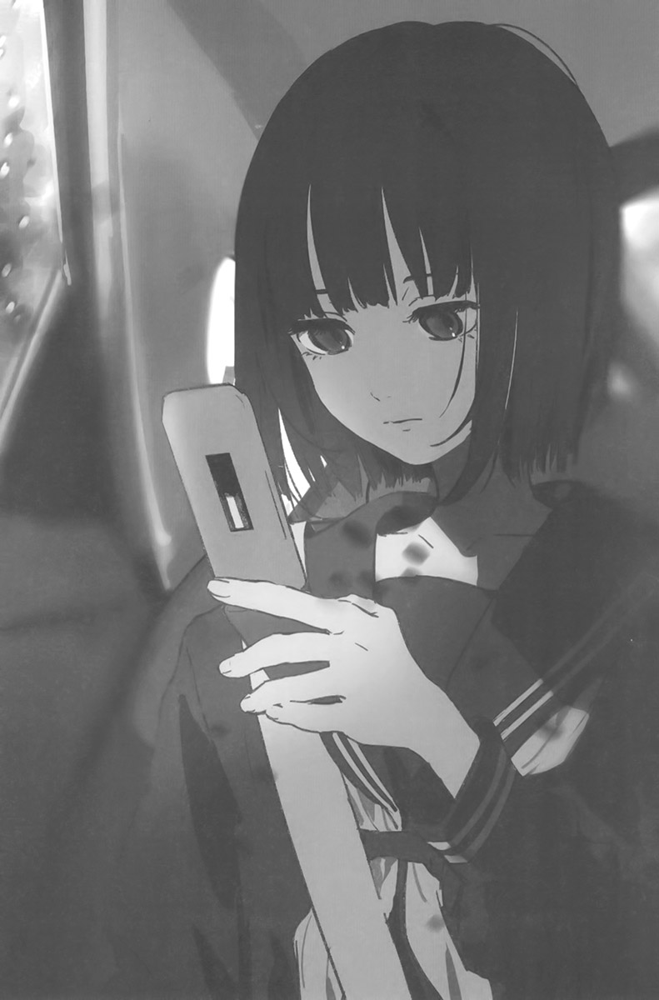我又追加一句。
『而且汐在學校過得很開心。』
『騙人。』
『我沒騙妳。』
我打開手機的相簿。星原曾把球技大賽後的慰勞會的照片傳給我。照片上是被女孩子們包圍，笑得很開心的汐。
我把那張照片拿給小操看。
小操凝視了照片半晌。
『看起來真蠢。』
如此回答。
就算我知道她無法接受現在的汐，但還是有點不高興。那說法太過分了。
我繼續打字。
『我們班上也有想法和妳一樣的女生。』
『正常。』
『那女生現在被全班的人孤立了。』
小操的臉皺了起來。
雖然我是打算反擊沒錯，不過這樣或許有點惡劣了。但我說的是事實。
過了一會兒，小操又開始打字。
『你喜歡我哥嗎？』
「啊？」
我忍不住出聲。
汐回頭看我。
「怎麼了？」
「啊，沒有。沒事……」
「……那就好。」
汐把頭轉回前方。
真是的，問那什麼問題……我看向小操，她正斜著眼，以輕蔑的眼神看我。原來她不是真心發問，而是想讓我動搖。不過這招確實成功了。
『以朋友來說，是喜歡啊。』
我如此回答。小操把頭撇向一旁，似乎不打算再和我對話了。
也許被她討厭了吧。她小時候還挺親我的，所以我覺得頗為沮喪。雖然想找機會和好，但只要她不肯接受汐，和好就是不可能的事吧。
我把手機塞回口袋，看向窗外。
雨嘩啦啦地下個不停。
✽
隔天早上。
我在風雨中前往汐家。他家在離我家走路約十分鐘路程的地方。雖然撐著傘，但身體還是被雨水打溼，變得很冷。今天早上相當冷，也許因為下雨吧，呼出的氣息白到驚人。
我過了馬路，在住宅區前進，抵達汐家。
就如昨天說好的，今天早上要麻煩雪姨載我上學。我按了按門口的電鈴，屋裡傳來一陣快步走路的聲音。
喀嚓。大門打開，雪姨探出頭。
「早啊，咲馬。」
「早安，雪姨。」
今天要麻煩妳了。我向她致意。
雪姨今天也穿著套裝。她送我和汐到學校後，似乎會直接去公司上班。
「汐正在換衣服，你先等一下哦。」
「啊，好的。」
我可能來得太早了吧。
你先在玄關等一下。由於雪姨這麼說，我踏入房中。屋子裡很溫暖，飄著烤土司的香味。我等了幾分鐘，雪姨和汐一起來到玄關。
「對不起，讓你久等了。」
「不會。」
也許是因為急著出門，汐手上拿著領帶。應該是打算上了車再打吧。
我們走出屋子後，汐鎖上門，三人一起坐進轎車。雪姨坐在駕駛座，我和汐坐在後座。車子朝椿岡高中的方向前進。
「咦？小操呢？」
「她已經出門了。雖然我問要不要一起去，但她說要自己上學。」
「啊，這樣啊……」
難道是因為我嗎？說不定是昨天的對話讓她不高興了，所以不想和我坐在同一輛車裡。如果真的是那樣，那我還真對不起她。
汐看著後照鏡，開始打領帶。纖細的手指靈活地把領帶繞圈，最後收緊在領口。大概是因為很趕，他的頸子上有一些汗水。
「你今天早上也有跑步？」
「嗯。」
汐理所當然地點頭。
就算是雨天，我也打算陪汐跑步。可是腳踏車留在學校就沒辦法了。靠自己的雙腳跑的話，是跟不上汐的。
「應該全身都淋濕了吧？」
「因為下雨嘛。雖然很難跑，但是不能偷懶。」
「真了不起……你應該不喜歡溼度太高的天氣吧？」
「是嗎？」
汐笑著回答：「我第一次聽說。」
「因為你很在意頭髮翹起來啊。頭髮翹起來的日子，你都會一直摸。」
「咦？真的嗎？」
汐露出訝異的表情。看來他是無意識地做的。
在意頭髮翹起，是從國中時開始的事吧。由於髮色引人注目，才比其他人更在意頭髮。我一直那麼以為。
「我完全沒發現呢……雖然我確實很認真保養頭髮。」
呵呵，正在開車的雪姨突然笑了起來。
「咲馬看汐看得很仔細呢。」
「啊，汐也這麼說過。」
「是嗎？你們真的很要好呢。」
我苦笑起來。至於汐則有點坐立難安地搔著脖子。雖然他似乎沒有生氣，但是抿著嘴，就像在忍耐著什麼似的。
車子離開住宅區。我看向馬路的人行道，見到穿著學校指定的雨衣，騎腳踏車上學的椿岡高中學生。車子從努力踩著腳踏車的學生旁經過時，我產生了少許的優越感。
搭車果然方便……以後下雨時，都請雪姨載吧。不對不行。雖然雪姨應該會欣然答應，但是我沒有那麼厚臉皮。
看見學校了。
車子在校門前停下。謝謝，我向雪姨道謝後下車。汐也接著下車。
「要認真上課哦。」
雪姨離開了。
我和汐撐著傘，朝校舍前進。現在正好是上學尖峰時段，鞋櫃區的入口處擠滿了人，我們擠進人群中，抖掉傘上的水珠。
我抬頭看著上空。雖然從昨晚起，雨勢開始變弱，但仍然不像會放晴的模樣。
「放學之前雨會停嗎？」
「如果雨還沒下完，就再載你回去吧？」
「不不不，那樣太不好意思了。不管天氣怎樣，我今天都會騎車回去。」
「是嗎？我都可以哦。」
我把傘收好。
就在我為了走進鞋櫃區，轉身背對外頭時，有人猛然撞到我。
「哇！」
由於地板溼滑，沒辦法站穩腳步，我因此摔在地上。以雙手撐著堅硬的地板。砰，傘倒了下來，掛在肩膀的書包也滑落在地上。周圍的學生繞開我進入校舍。
「咲馬，你還好嗎？」
「還好。謝謝。」
我拉著汐的手起身，撿起傘和書包回頭，便看到能井站在那裡。他與我對上視線，不高興地皺眉啐了一聲。
「慢吞吞的幹嘛？擋路。」
「風助！」
汐臉上出現怒色。
能井無視汐，逕自朝著鞋櫃走去。汐追了上去，抓住他的肩膀，逼他轉身。
「幹嘛啦？」
「才不是幹嘛啦。不要做像小孩子一樣幼稚的事。」
「誰叫你們擋在門口講話。是說——」
能井交互看著我和汐哼笑。
「我有看到你們從同一輛車下來哦。什麼啊？一起在外頭過夜嗎？感情真好。」
一起在外頭過夜。能井在這幾個字上加重口氣。周圍的學生對這句話產生反應，好奇地朝我們看來。站在人來人往的鞋櫃區的汐和風助變得非常顯眼。
「汐，我們走——」
「你不要隨便亂說話。」
汐大聲對能井說道。
對我來說，能井那些惡意中傷不痛不癢。但是對汐來說似乎不然。他以憤恨的眼神瞪著能井。
汐以前與能井都是田徑隊的，兩人相處的時間也很長，所以能井似乎很清楚如何激怒汐。
「生什麼氣啊。說中了？」
「不是。你那樣惡意造謠有什麼樂趣？」
「我只是說出我的疑問而已，你幹嘛那麼在意？」
「在意的是你吧。故意撞咲馬也是，突然要我回田徑隊，要和我比賽也是……可以不要再纏著我了嗎？」
「是因為你一聲不吭地退出田徑隊好嗎？我才不是纏著你，是要做個了結。」
「喂喂，一大早就在上演情侶吵架？」
在一旁看熱鬧的學生打趣地插嘴。
汐與能井同時瞪著那個人。「開什麼玩笑！」被能井一罵，插嘴的學生立刻逃走了。
「馬的，什麼白目……算了。」
能井露出顯而易見的慍怒，轉身離開。汐也怏怏不悅地走向A班的鞋櫃。
他拿出自己的室內鞋，粗魯地把脫下來的外出鞋塞進鞋櫃裡。
「呼……真不爽……」
「……」
雖然我也對能井很不高興，但我更在意剛才的「情侶吵架」那句話。
我和汐換上室內鞋，走向A班教室。
情侶吵架。那名學生當然在開玩笑。可是那句話也有「你們很相配」的意思在內。能井的個性雖然惡劣，但是長得很不錯，個子又高。正因為和汐是不同的類型，兩個人站在一起，才好看得像幅畫。這個事實使我沒來由地有種被排除在外的感覺。
……是說，那又怎麼樣？
應該說，現在該在意的不是那個。
「那傢伙真的很討厭，你不要理他啦。」
我安慰道，汐卻以責備的眼神看著我。
「你也該說點什麼吧。被撞到的人是你哦。」
「是沒錯……」
「你就是這樣子，才會被風助看扁啦。」
不，我也很不爽哦。而且我也不是沒有回嘴過。但現在和他吵只是中了他的計——雖然我有很多話想反駁，最後還是忍下來了。假如我和汐因此出現爭執，反而稱了能井的心意。
我閉上嘴。汐深深吸了口氣，慢慢呼出。做完深呼吸，他面帶歉色地縮起肩膀，低下頭。
「……對不起，我剛才是在遷怒。」
他似乎有自覺。
「沒關係啦，因為你在氣頭上嘛。」
「……我一定會贏的。」
聲音中帶著堅定的決心。垂下的眼中，安靜地燃燒著鬥志。
沒必要勉強自己比賽。雖然這句話湧到喉嚨，我覺得這時候不該說這句話。所以換成另一個湧上心頭的想法。
「你每天都那麼認真練習，一定會贏的。」
汐點點頭。
距離與能井的比賽，還有四天。
早上的班會開始，伊予老師走進教室。她搖晃著長長的馬尾，來到講臺，要值日生發號施令。
起立。敬禮。老師好。坐下。
「大家早，最近很冷呢。」
伊予老師以雙手環抱自己，摩挲著手臂。雖然她一如以往地穿著筆挺的襯衫與貼身長褲，但也許是天氣變冷的緣故，還穿了外套。
「最近早晚溫差大，感冒的人變多了。大家被子要蓋暖一點哦。還有運動社團的人，流汗後要確實地把汗擦乾。季節變化時，除了身體之外，有些人心情也會受到影響——」
平常的話，班會時主要是發通知書或確認學校活動時程、校方的注意事項等等。也許今天沒有任何事吧，伊予老師一直聊著瑣事。
「最後！」
說了幾分鐘該如何注意身體健康後，伊予老師放大聲音，吸引大家注意。原本心不在焉的同學們也都緩緩抬起頭。
「有件事要告訴大家，市政府正在招募掃除的志工，可是一直招不滿人手，所以問學校這邊有沒有志願者。有沒有人想做呢？不限名額哦！」
班上寂靜無聲。似乎沒人感興趣。但這也是當然的。這個班裡沒有那種熱心公益的類型。
「欸～沒有人想做嗎？雖然沒有錢，可是能幫校內成績加分，在升學時很有利哦？」
加分……對想甄試入學的人來說，應該很有魅力吧。但也許礙於嫌麻煩的氛圍，所以沒人舉手。
班會結束的鈴聲響起。
「大家都不想做嗎～總之有興趣的話就來找我，我再詳細說明。那麼今天的班會到此結束！」
說完，伊予老師走出教室。
教室裡吵鬧了起來。同學們或是談天說笑，或是準備第一節的內容。我從抽屜拿出古文的筆記，來到走廊。
這是昨天忘在家裡的作業。第五節是古文課，雖然也可以那時候再交，但反正現在還記得，就先交了吧。
「伊予老師。」
我出聲叫道，伊予老師停下腳步回頭。
「對不起。這是昨天忘了交的作業。」
我拿出筆記。「哦，好。」伊予老師收下筆記。
「你最近好像常常忘了東西？還有上課時都在打瞌睡。」
「呃……哈哈。」
被發現了。最近每天早上都陪汐晨跑，所以一直有點睡眠不足。
「因為成績沒有退步，我就不說太多了。但下次再打瞌睡，我會罰你在走廊罰站哦。」
「那是體罰哦。」
「開玩笑的。不過我就是這麼生氣。」
伊予老師皺眉叮囑。要是再亂凹，她真的會生氣吧，「對不起。」我老實地道歉。
「對了，你有聽到剛才的話吧？就是志工的事。」
「哦，有啊。」
「想不想參加呢？」
「不想……」
「你也回得太快了吧。」
伊予老師生氣了。也許該裝模作樣煩惱一下的。
「可以加分哦？很吸引人耶。」
「但是我又不打算推甄……那對有參加社團的人才有利吧。」
「是沒錯。」
伊予老師乾脆地承認。
事實上，沒有參加社團的人，除非有特別的資格或技能，否則在甄試時是很不利的，贏不了三年都參加社團的人。
「妳去找別人吧。比如有參加社團的。」
「參加社團的都忙著參加社團啊。」
「不然找其他沒參加社團的。」
「唔……雖然我也不是沒有屬意的對象……」
「那就去找那個人啊。」
「不過……亞里沙會答應嗎？」
「咦？西園嗎……？」
屬意的對象是西園嗎……不，她一定不會答應吧。
「我知道你想說什麼。」
也許我的想法表現在臉上了吧，伊予老師說道。
「雖然有很多擔心的地方，可是上層對亞里沙的觀感很差，我希望能稍微改善他們的印象……」
上層，應該是指教務主任和學年主任之類的吧。
伊予老師似乎很煩惱西園的事。不過，就算以學生的角度看，西園的處境也很危險。不久之後八成會被退學吧，甚至有人這麼說。伊予老師會擔心也是正常的。
可是……
「西園願意撿垃圾嗎……」
「就是這個問題啊～如果在撿垃圾時又惹出什麼事，就不好了。因為也有社會人士在……」
伊予老師按著額頭說道。她的壓力似乎很大。
反正放學後沒事做，還是參加好了？但是很麻煩……我正在思考，「糟了！」伊予老師看了看手錶，叫了一聲。
「我得走了。你要是改變心意再和我說吧，時間和人數都可以討論哦。」
她說完，快步離開了。
我也轉身走回教室。
……是說西園啊。
她八成不會接受伊予老師的勸說吧。比起那個，我更在意她今後的動向。西園的停學只到今天，也就是說，她明天會來上學。雖然因為世良不能來A班了，至少不會再發生兩人在教室裡爭執的情況，可是西園本人呢……只能希望她別把累積的怒氣發洩在其他人身上。
順便也幫伊予老師祈禱，希望她不會太勞心費神。
✽
十一月過了一半。
日出前的靜謐早晨。我今天也和汐一起晨跑。前天起開始下的雨總算停了，路上到處都是水窪。與國道相鄰的一級河川的水位因下雨而升高，變成渾濁的褐色。
也許因為雨停了，今天早上比平常更冷，沒戴手套的話手指會發麻。在我身旁跑步的汐呼出的氣息，也變得更白了。
「今天真的很冷呢……快入冬了吧。」
「跑一跑就會變熱哦。要下車嗎？」
「比起跑到沒力，我選擇寒冷。再說我下車的話就追不上你了。」
「我會配合你的。」
「那就不算陪你跑了。」
也對。汐說著，稍微提高速度，我也用力踩著腳踏板。
我們有一搭沒一搭地聊著，在練習路線上前進。經過被當成終點的電線桿後，汐從跑步變成走路。
我從腳踏車前的籃子拿出毛巾。
「來。」
「謝謝。」
「要喝寶礦力嗎？」
「好。」
我從肩包中拿出寶礦力。這是昨天買的，沒有冰在冰箱。汐接過寶礦力，邊走邊喝了起來。
他的嘴離開瓶口，露出奇妙的表情。
「總覺得……你變成經理了呢。」
「這麼說來，確實是……」
雖然毛巾是汐的，但寶礦力是我買的。從上週起，我有陪跑時就會帶寶礦力來。有飲料喝的話，汐會比較開心吧。我是基於這樣的想法才準備的，沒有其他原因。
「如果我回田徑隊，你要不要來當經理？」
汐戲謔地笑著發問。
「饒了我吧。你會贏不是嗎？」
「開玩笑的啦。」
汐又喝了一口寶礦力。
「……說真的，贏的機率有多少？」
我戰戰兢兢地發問。我一直很想知道答案。
與能井的比賽只剩三天了，雖然我想相信汐說他一定會贏的說法，但還是想知道具體的獲勝機率。
汐並沒有立刻回答。他思考了大約十秒，總算開口：
「大概五成吧。」
微妙的數字。
「有根據嗎？」
「直覺吧。」
「直覺嗎……」
怎麼辦，我不安了起來。
果然還是別比了吧。就算汐贏了，也沒有任何好處，但是輸的話就必須回田徑隊，這是很重的懲罰。就像我之前說過的，這樣不公平。
儘管如此，汐還是接受挑戰，而且完全沒有反悔的意思。難道說，他內心的某個部分，其實覺得回田徑隊也可以嗎？如果是的話……我有點不願意呢。
「……也許我該做好去當經理的覺悟？」
「就說是開玩笑的啦。」
太陽升起，青空萬里無雲，彷彿被直到昨天為止的大雨洗去空氣中的所有髒汙般澄澈。溫度比晨跑時略高一些，成為舒適的陽光。
我來到椿岡高中，把腳踏車停在停車場。
我從籃子中拿起書包時，匡噹。身後傳來放下腳踏車腳架的聲音。
我回頭，看到是西園來了。她鎖起腳踏車，與我一樣揹起書包，接著與我對上視線。
我忍不住後退。
因為她以凶狠的眼神瞪我，那是見到殺父殺母仇人般的眼神。雖然說被西園瞪是家常便飯，應該說每次對上視線，我都會被她瞪，可是今天，她眼神中的憎恨強烈到非比尋常。
西園迅速背對我，走進鞋櫃區。
……怎麼回事？
我想不出被她怨恨的原因。最近這一個月，我完全沒和她說過話。但如果是單純的心情不好，應該不至於用那麼怨毒的眼神看我吧？我在不自覺的情況下，又得罪她了嗎？
我忐忑不安地走向教室。
儘管被停學兩次，西園的態度仍然沒有改善。應該說變得更難以接近了。雖然她本來就不在下課時間與任何人交談，但現在根本是拒所有人於千里之外，光是有人在附近聊天說笑，西園就會不高興地咂舌。
「那根本是中了狂暴吧。」
附近的男生奚落西園的聲音，傳入我耳中。
狂暴。電玩《Final Fantasy》的咒語。中了那種魔法，會成為只能攻擊的狂戰士。假如把狂暴術施展在攻擊力原本就高的同伴身上，能成為有效的輔助魔法，但除此之外，幾乎沒有任何好處。
最近的西園，完全失去了從容。以前的能言善辯不知道消失到哪兒去了，言行全都變得粗暴魯莽。那種模樣，確實能以「中了狂暴」來形容。
如果真是那樣，對她施咒的人是誰？
只能是世良。
就算被禁止出入A班，那傢伙仍然影響著西園。實在陰險又惡劣。
「呃，紙木同學。」
午休時間。
我正與吃完午餐的蓮見閒聊，星原過來找我說話。午休時，星原基本上都是與汐在一起，很少來找我。
「怎麼了？」
「那個……可以和我一起來嗎？」
「咦？哦，好……」
我與蓮見打過招呼後起身。
午休時星原找我出去，就情境而言應該使人心情雀躍。可是從星原那憂鬱的模樣看來，肯定不是愉快的話題。究竟怎麼了？
來到走廊後，星原停下腳步。
「亞里沙傳訊息給我，要我和你一起去體育館後面……」
「西園？」
為什麼找我？我思考起來，但是想不出原因。
「你和亞里沙怎麼了嗎？」
「什麼都沒有哦。雖然今天早上被她用很可怕的眼神瞪，可是我最近根本沒和她說過任何話……妳呢？」
「我也是。為什麼找我們呢……」
星原不安地說著。
雖然我有可能在不經意的情況下惹火西園，但是連星原都找出去，就很奇妙了。即使是個性凶暴的西園，在面對星原時，也是相對寬容。儘管星原和汐很要好，但西園不曾為此質問她。而且以前在家庭餐廳開讀書會時，西園也因為星原找她而出席。
「總之先過去吧。」
星原點點頭。
我們經過走廊，在鞋櫃區換鞋子後，走出校舍。雖然戶外的天空很晴朗，但是秋風很冷。
體育館後方沒有陽光，顯得有些昏暗，而且更陰冷了。
西園正靠在牆上，等著我們。
真島與椎名也在場。兩人見到我們，都露出「你們怎麼會來這裡？」的訝異表情。看來她們也不知道為什麼會被叫出來。
「我們來了。」星原說道。西園離開牆邊，轉身看著我們。
「我之所以找你們出來，是為了確認一件事。」
西園以凌厲的眼神來回看著我們四人，似乎要說什麼重大的事情。
她繼續說道：
「是誰說的？老實招來。」
「……？」
什麼意思？
我以側眼看了一下星原，她頭上也同樣冒出問號。
「妳在說什麼？」
由於沒有人回答，所以我提出疑問。西園嘖了一聲。
「我打世良那天的事，你們還記得吧？那時候你們全都在場。」
我們四人面面相覷。迷惑地點頭。
「那傢伙說，是我朋友說的。也就是你們之中有人說出去。我想知道是誰。懂了吧？」
……完全不懂。說什麼？朋友？可以說明得清楚一點嗎？但現在還是別太刺激西園比較好。所以我靠自己思考起來。
我回憶著那天的事。模模糊糊地想起世良的話。
『我是聽妳朋友說的。』
和西園爭論時，他好像說過這樣的話。
不過，內容是什麼……？
我正想繼續挖掘記憶，「啊啊，真是夠了！」西園抓狂似地吼道：
「為什麼不說話？你們之中一定有人心裡有數吧！」
「亞里沙，妳冷靜點。」
真島上前一步。
「我們真的不知道妳在說什麼。是誰說的是什麼意思？」
「就是……！」
西園咬牙，以控訴的眼神看著真島。那模樣與其說是憤怒，不如說是欲言又止，似乎非常不願意說明原委。
她用力握拳，視線愈來愈低，彷彿忍耐著什麼似地渾身發抖，最後終於開口：
「就是我喜歡汐的事。一定是你們之中的誰說出去的吧……！」
……原來如此。
我總算懂了。今天早上之所以會被她怒瞪，也是因為這個原因。
聽她一說，這部分確實是謎。究竟是誰告訴世良西園的弱點的？當時因為打人的事太過震撼，反而沒有留意到那句話，可是就西園本人來說，她一定非常掛懷吧。
「那件事，我只對在場的妳們三個人說過。我很肯定。」
西園抬起頭……等一下，三個人？
「……為什麼連我都被找來了？」
西園喜歡汐的事，我是聽星原私下說的。西園應該沒有理由懷疑我。
「反正你一定也知道吧。那時候你的口氣就是那樣。」
那時候是哪時候啊？雖然我想那麼說，不過仔細回想，我確實說過那種話。
為了幫汐辯駁，和西園吵起來時，我反過來那樣嗆過她。班上同學應該沒有想太多，可是對西園來說，肯定覺得被戳到弱點吧。會認為我知道她的祕密，也是很正常的。
「是說現在那種事已經無所謂了啦。不管你本來知不知道，反正世良已經把那件事說給全班聽了。」
西園看開似地說著。
「問題在於剛才的部分。是誰，把我的祕密告訴世良的？」
西園切入正題，氣氛緊張了起來。
我當然沒有告訴世良。所以是其他三人中的誰說的？但不論是星原還是真島、椎名，都不像會把西園的祕密說出去的人。
我正觀察著其他人的反應，西園已經瞪著星原了。
「夏希，妳最可疑。」
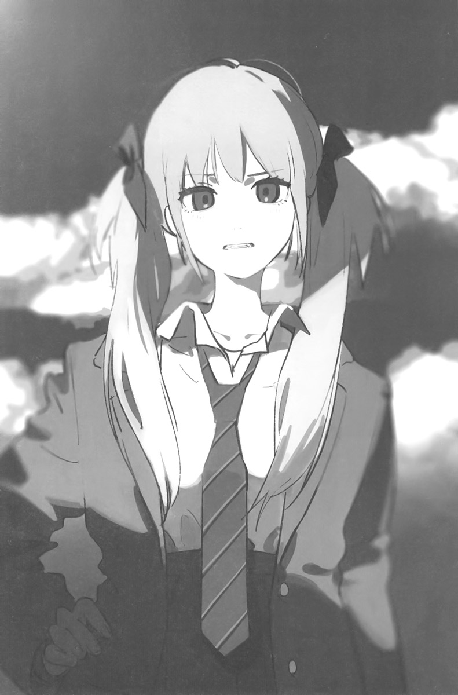「咦……」
「紙木之所以知道我的祕密，是妳告訴他的吧？既然妳會告訴紙木，就有可能告訴世良。」
「不，我，沒有……」
星原狼狽了起來。糟了。因為猜中了一半，反而很難澄清。西園的眼神愈來愈懷疑了。
「是妳說的嗎？」
「不、不是。我沒有對世良同學說過……」
「沒有對世良說過？所以妳對紙木說過囉？」
「呃……」
星原低下頭，拚命思考如何回答。我看不下去了。
「喂，西園，星原她——」
「你給我閉嘴。」
西園朝星原逼近。歪著頭，窺視星原的表情。星原身體猛地一顫。
危險信號亮了起來。依星原的回答，西園說不定會打人。然而這裡不是教室，是沒有老師，也沒有其他學生的體育館後方。
我正想上前拉開西園，星原已經戰戰兢兢地開口了：
「……對不起。我有對紙木說過。」
西園的臉一下子漲得通紅。
「差勁。妳居然說出去。」
比起憤怒，更像失望的唾罵。雖然西園沒有在盛怒之下打人，但還是完全無法放心。我連忙闖入兩人之間。
「等一下，西園。」
「走開。我正在和夏希說話。」
「是我主動問的。是我向星原問妳的弱點的。」
「啊？」
西園抬眼瞪我。儘管魄力非比尋常，但我還是不能退縮。
「雖然現在立場不同了，可是那時候的妳和暴君一樣。不找出妳的弱點，我們根本沒辦法對抗妳。我可以理解妳現在疑神疑鬼的心情，但妳可別認為自己只是單純的受害者哦。」
「那算什麼辯解？我只知道夏希和你都很爛。」
西園強硬地推開我，再次瞪著星原。
「反正妳也一定很恨我嘛。因為我一直在妳面前欺負汐。可是妳沒種對抗我，所以把我的祕密告訴世良，讓他羞辱我。」
「不是，我沒有……」
儘管星原快哭出來了，但還是否認。
「喂，等一下。」
我再次介入。
「星原真的沒有告訴世良。妳仔細想想。星原對世良沒有好感，是很明顯的事吧？所以她當然不可能告訴世良，那麼做的風險太大了。再說，如果星原恨妳，就不會找妳參加讀書會了。」
「紙木說的沒錯。」
真島也跟著幫腔。
雖然西園對我的話充耳不聞，卻對真島的話產生反應。她離開星原身邊，走近真島。
「……妳也挺這傢伙？」
「不是那樣。我只是要說，逼問小夏是沒有意義的。別再做這種追查犯人般的事了。」
「不查出犯人是誰，我就沒辦法舒坦。知道自己身邊有背叛者，誰能安心啊。」
「可是像這樣起內鬨，反而正中世良的下懷哦。那傢伙是為了孤立妳才那麼說的，不能中他的計。」
西園煩躁地抓著頭髮搖頭。
「就算是那樣，我還是不能當成沒這回事。查出犯人後，我會好好教訓她，對被懷疑的其他三人道歉。這樣就沒有孤立的問題了。」
「這種話說來簡單……」
真島欲言又止，最後沉默下來。
就算道歉，也沒辦法和好如初。真島八成想這麼說吧。而且話說回來，不管犯人是星原還是真島、椎名，另外兩人一定不會讓西園「教訓」犯人，而會挺身幫忙犯人說話。如此一來，西園肯定又會和這三人起爭執。
只要西園不放棄找出犯人，她被孤立的情況只會愈來愈嚴重。就像真島說的，正中世良的下懷。
對了。我想起一件事。
上次世良說的「還沒結束哦」，就是這個意思嗎？
即使已經不能出入A班了，世良種下的猜疑種子仍然確實地在西園的心中成長，不斷腐蝕西園的精神。
「是說——」
西園看向椎名。
「妳從剛才起就一直沒說話。是妳說出去的嗎？」
被西園盯上，椎名尷尬地低下頭。
「……我沒有說出去。而且我覺得，根本沒有人告訴世良……」
「那世良為什麼會知道？」
「……我不知道。」
西園深深嘆氣。
「妳從以前就是這樣。看起來很淡定，但其實什麼都沒想。不要只會說自己沒有說出去，給我一些有用的情報啊？」
「……」
椎名用力抿嘴，有如挨罵的小孩似地揪緊裙襬。
總是不假辭色的椎名，在面對西園時，完全不敢吭聲。就像她自己在餐廳時說過的，她沒辦法違逆西園。
西園看著低頭不語的椎名，啐道：
「真沒用……」
「我說啊——已經夠了吧？」
出聲的是真島。
西園凌厲地瞪她。可是與椎名不同，真島不怕西園。
「我們在這裡吵架，會開心的只有世良而已哦。以妳的情況來說，裝成不在意才是最好的。就算真的有犯人好了，妳也沒有其他可以洩漏的祕密了吧？因為妳從來不說自己的弱點。」
「我是在收拾殘局。不要隨便幫我做結論。」
「收拾殘局，具體上妳想怎麼做？妳已經被停學兩次了，要是再惹出什麼事，真的會被退學哦。而且啊——」
真島露出厭煩的表情，接著說：
「喜歡誰那種事，根本沒什麼好難為情的吧。再說槻木那麼有女人緣，就算妳喜歡他，也沒有人會覺得——」
「我才沒有喜歡他！」
西園大吼。
空氣為之震動。就連真島都閉上嘴，倒抽一口氣。
「以前可能是那樣，但現在絕對不是。我討厭死那傢伙了……！」
西園的聲音中充滿後悔。也許在責備過去的自己吧，她以指甲用力掐著自己的手臂。
「不只汐，妳，還有夏希、小椎，我討厭妳們……妳們全都不能相信。」
西園怨毒地說著。每句話都像淌著血似的。
「亞里沙……」
真島擔心地朝她走近。
「不要過來！」
西園用力揮手，拒絕真島接近。
她粗重地喘著氣，以充滿血絲的眼睛威嚇我們。那模樣令人聯想到困獸。走投無路，不管對象是誰，都張口就咬，完全無法溝通。
沉默之中，鈴聲響了起來。是第五節課即將開始的預告鈴。
西園深深吸氣，吐氣，調整呼吸，看著我們。
「不管怎樣，我都會找出犯人，而且絕對饒不了她。」
她放完話，離開了。
只剩我們四人，站在體育館的後方。
沒有人想追上西園。寒冷的秋風從我們之間穿過。
「唉～」
真島傻眼地嘆了口氣。
「為什麼會變成那個樣子啊……」
那是帶著憐憫的嘆息。
✽
雖然被捲入西園找犯人的騷動中，但我的生活仍然沒變。早上陪汐晨跑，過著普通的校園生活。
被西園叫出去的隔天，第五節是美術課。可以選修的有美術、音樂、書法三門課，所以在美術教室的學生只有三分之一左右。
我面對全白的畫紙，右手不停旋轉著自動鉛筆。這次的主題是「附近的建築物」，但從上課到現在已經二十分鐘了，我連構圖都沒想好。
我抬眼看向斜前方，星原凝視著自己的畫紙，但是和我一樣都是空白的。
昨天午休之後，星原就一直很沒有精神，原因當然是西園。雖然我在午休完回教室的路上安慰她「別在意」，但是沒什麼效果。
她似乎比想像中的更耿耿於懷，真令人擔心。
「唉……」
「嘆什麼氣？幸福會溜走哦。」
身旁有人說道。
坐在我旁邊的是轟。她是戴著紅框眼鏡的女生。十月的文化祭時，她是A班表演的話劇《羅密歐與茱麗葉》的戲劇指揮。
轟的斯巴達式演技指導，直到現在仍讓我記憶猶新。我演的是男主角羅密歐，可是因為演技極爛，所以受了她許多照顧。那交情清淡如水地延續到現在，尤其是美術課，因為座位很近，所以偶爾會聊天。
「不用那麼緊張吧，一堆人都還是白紙哦。」
「不，不是因為畫圖。該怎麼說呢……我正在煩惱人際關係吧。」
「哦，沒參加社團的人也有那種煩惱啊？」
「當然有……別小看回家社的人好嗎？」
社團至上主義者的思考方式。
雖然轟參加的是合唱團，但選修的是美術課。我以前問過她為什麼不選音樂，她說「因為我太厲害了，大家會怕。」真是有自信。
「是說，原來如此，人際關係嗎——？是槻木的事？」
「不，不是。」
「那麼是蓮見？你們吵架了？」
「也不是。我們沒有好到會吵架。」
「我知道了，是西園。她最近一直很神經質。」
「有點不一樣……是說妳根本亂猜嘛。」
「夏希？」
嗚。我說不出話。「哼哼～」轟得意地笑了起來。
「原來是夏希啊～難道是戀愛方面的煩惱？」
「怎、怎麼可能呢。」
我假裝平靜。
打迷糊仗的話反而可疑，所以我決定老實說明原因。但全部說出來又一言難盡，我簡潔地說明：
「昨天星原和西園……發生了不少事情，所以星原變得很消沉。」
「哦，她們啊。最近她們好像變得很疏遠，還真辛苦啊。」
「是啊……」
我感慨良多地附和。
「啊，對了。我下次推薦一些看了會有精神的電影給夏希好了。」
「……這樣應該不錯。」
很像喜歡電影的轟會想到的打氣方法。
這麼說來，第一學期時，我也常推薦喜歡的小說給星原。最近很少談那類話題，不知道她現在還有沒有繼續看小說。
「也推薦一些電影給你吧？」
「不，我不用了。」
「為什麼啊？別人好意推薦，你要心懷感恩地聽啊。」
「因為妳推薦的電影，感覺應該很難懂……」
「才不會。我都推薦娛樂性高的電影哦。七森也說我很有挑片的眼光呢。」
「喔～七森同學嗎……」
七森同學是文化祭的話劇表演時的服裝製作。與轟在文化祭時變熟，現在似乎也很要好。
「知道嗎？七森看過很多電影哦，應該比我多三倍吧。被那種電影通說我眼光很好，我的眼光肯定是很好的。所以我介紹一些電影給你吧。」
「妳只是想推薦喜歡的電影而已吧。」
「那部片在印度電影裡中是特別有名的哦。」
「聽別人說話啦。」
「那邊的同學！不要一直說話，快點動手畫圖！」
被老師罵了。
雖然美術老師不太管學生之間的閒聊，但太過頭還是不行。我和轟連忙道歉，乖乖地面對畫紙。
到頭來，美術課結束時，我只畫了幾條線而已，畫紙幾乎是空白的。
班上同學魚貫地離開美術教室，星原的身影也在其中。是錯覺嗎？感覺她的身影比平常更小，明顯地消沉。
「星原。」
我在她身後喚道。星原回頭，我加快腳步，走在她身邊。
「有什麼事嗎？」
「沒有啦，因為妳看起來很沒精神……」
「哦，是那個啊。」
星原露出遮掩的笑容。
「我沒事！很好！雖然我想這麼說，但其實有點不是那樣呢。」
「……是因為西園吧？」
「嗯……」
之所以承認自己在強顏歡笑，是因為汐不在場。
不在汐的面前提西園的事，是我和星原之間的默契。原因很簡單，因為汐不會有好臉色。不過只要想想汐被西園整得那麼慘，他會有那樣的反應，也是理所當然的。
「昨天，我想了很多。」
我們在走廊前進，星原沉重地說著。
「我果然不該說出亞里沙的祕密。就算被她罵差勁，也是沒辦法的事。」
「不，那是因為我問妳的關係。」
「就算被你問，我也不該說。我也是。如果有人把我喜歡小汐的事說出去，我一定會覺得很討厭。所以是我不好。」
「……是這樣啊。」
既然星原已經有了定見，我繼續反駁就太沒意思了。
星原現在之所以沒有精神，是因為正在反省自己的錯誤。既然如此，等她反省完，應該就會恢復原本開朗的笑容了。
「……還是道歉比較好吧。」
星原小聲說著。道歉，是指對西園吧。
「有必要做到那種程度嗎……？就算退讓一百步，妳也有錯好了，可是西園做的事更過分哦。」
「是這樣嗎……」
「而且就算想道歉，也該等到事情全部結束再道歉。現在道歉，只會有反效果。」
說起來，西園願不願意聽星原說話，都值得懷疑。不對，如果只是不聽星原說話倒還好，要是聽了之後反而更怪罪星原，就更麻煩了。
「可是，事情什麼時候才會結束呢？」
「這個嘛……等知道是誰告訴世良的之後？」
我不想像西園那樣用「犯人」的說法。畢竟我不知道是誰，基於什麼原因，把西園的祕密告訴世良的，而且我也不想懷疑星原她們。
「到底是誰呢？說出來的人……」
「不知道……真島和椎名都不像會說的人。」
當然妳也是——我補充道。
我們在轉角轉彎，經過連結教學大樓與一般大樓之間的走廊，離A班教室不遠了。
「難道是其他人？」
星原突然說道。
「其他人？可是西園說她只告訴過妳們而已。」
「就算不說，也可能因為態度之類的猜到。說不定有其他人知道亞里沙喜歡小汐。」
「啊，原來如此……不過那樣一來，所有A班的人都有嫌疑……乾脆直接去問世良好了？」
「啊，這想法不錯！不對，不能那樣！」
反悔的速度太快了吧？怎麼有辦法在瞬間轉變思考啊？
星原以責備的眼神看著我。
「就算找出犯人什麼的，也解決不了任何事哦。」
「說、說的也是。」
既然如此，到底該怎麼辦？不過仔細想想，這應該不是我們能解決的問題。現在的西園可以說是毫無道理的自然災害，只能等暴風雨過去再說了。
看見A班教室了。
……是說西園的事有很多讓人無法就這麼接受的部分。雖然我不打算找出犯人，但究竟是誰說的呢？
當天晚上，我騎著腳踏車出門。
目的地是車站前的超市。我打算去買晨跑時給汐喝的寶礦力，還有自己的宵夜零食。比起便利商店，在超市買比較便宜。
時間是晚上九點多。
戶外的溫度已經有冬天的感覺了，再過不久，秋天就要結束了吧。
文化祭結束後，時間的流動似乎變得很快。不冷不熱的舒適天氣一下子就消失，刺骨的寒冬再次來臨。快樂的時光無法長久，是這個世界的不成文法則。所以至少要好好享受有限的歡樂，為即將來臨的苦難做準備。這才是在這個世界上生存的方法。我最近開始這麼想。
我在國道上前進，遠遠見到超市的招牌。我進入停車場，把腳踏車停在出入口附近。
我走進超市，刺眼的燈光灼燒著眼球深處。我拿起購物籃，朝飲料區走去。這個時間的超市，除了剛下班的上班族之外，沒有什麼人。
我將兩瓶五百cc的寶礦力放入籃子裡，這樣也不到一百五十圓，相當便宜。我不打算跟汐討飲料錢，不過相對地，我們說好下次汐要請我吃學校餐廳的午餐。
我又前往零食區，拿了一些點心放入籃子裡，前往收銀檯。
結完帳，我走出超市。蝙蝠們在停車場的路燈周圍飛舞，似乎正在獵食被燈光吸引的昆蟲。我繼續抬頭向上看，見到皎潔的滿月。
即使是這個時間，汐也還在跑步嗎？不，應該不至於。要跑的話應該是晚餐之前。而且聽說他最近十點就會上床，所以現在不是在房間裡休息，就是在洗澡吧。
身體哆嗦了一下。外頭很冷。還是早點回家吧。
我把塑膠袋放在腳踏車的籃子裡，踢起腳架。
「咦？這不是紙木嗎？」
是曾經聽過的聲音。
我朝聲音傳來的方向轉頭，超市的燈光照著一名穿著寬鬆的連帽上衣的女生。是真島。她右手拎著塑膠袋。
「果然是你，真巧啊，晚安～」
「晚、晚安。」
我的語言能力一下子低落到只能說隻言片語的程度。假如是汐或星原那樣很熟的朋友就另當別論，在校外遇到交情普通的班上同學時，我還是會緊張。女生的話更是不在話下。是說真島平常總是和椎名在一起，和她單獨說話的感覺挺新鮮的。
「妳來這裡做什麼？」
「來跑腿的，買明天的早餐。」
她揚了揚右手的塑膠袋。
「你呢？」
「啊，我是……來買宵夜的。」
「哦？讓我看看。」
真島說完，自顧自地翻起我的塑膠袋。
「巧克力球和寶礦力？沒有在運動的話，不要喝太多運動飲料比較好哦。」
「不是我要喝的，是要給別人的。」
「是這樣嗎？都可以啦。」
真島對我買的東西失去興趣，「再見囉」她揮了揮手，走向停車場後方。她的腳踏車應該停得比我裡面吧。
「那個——」
我朝真島的背影出聲。真島轉過頭，歪著頭看向我。
——妳覺得把西園的祕密告訴世良的人是誰呢？
我本來想如此發問，最後還是打住了。仔細想想，第一個要西園別找犯人的就是真島。問這樣的人那種問題實在不妥。就算因此被嫌棄，我也無話可說。可是既然叫住她了，我也不想故作玄虛地說「沒事」。
「有什麼事？沒有的話我要走了哦。」
「啊，呃……妳對西園，有什麼想法？」
煩惱到後來，我問出了籠統的問題。
「咦？有什麼想法？這問題真難啊……」
唔——真島雙手交叉在胸前，沉吟起來。雖然我問得很突然，但她倒是思考得很認真。
「現在的亞里沙，正處於自暴自棄的狀態。差不多該有人超度她了。」
「有人？」
「比如我吧。」
出乎意料的回答。
「妳還想和西園扯上關係嗎？」
「這說法真過分。」
「不，因為有過那種事嘛……」
就算西園是一時激動好了，可是當面被說「討厭」，大部分的人還是會受傷吧。雖然我知道星原是濫好人，不過看來真島也不遑多讓。
「就算有過那種事也一樣哦。對於和槻木很要好的你來說，聽了可能不會開心，但我果然還是放不下亞里沙。」
真島轉身，我本來以為她要回去了，沒想到她推著自己的腳踏車，走到我身邊。
「吶，紙木。」
真島露出友善的笑容。
「要不要聊一聊？」
我們前往離超市最近的公園。
那是除了鞦韆之外，沒有其他遊具設施的小公園。倒L字的路燈下，有一張木製的長椅。我和真島把腳踏車停在公園裡，在長椅上坐下。長椅的寒氣透過褲管，傳到臀部。「好冷啊～」真島說著，受不了寒意似地搖晃雙腿。
「妳等一下。」
我起身，快步走出公園。
記得這附近……有了。我朝燈火通明的自動販賣機走近，將零錢放進投幣口，選了紅茶花傳與BOSS咖啡歐蕾，回到公園。
「這給妳。」
「哦！你還真機靈啊。」
真島接過紅茶花傳，以雙手包覆瓶身。
「暖呼呼的～！」
開心就好。
我再次坐在長椅上，拉開咖啡歐蕾的拉環，喝了起來。溫熱的液體使身體發暖，呼出的氣息就像香菸的煙一樣白。
「沒想到你挺體貼的，真意外。」
「不然妳以為我是什麼樣的人啊？」
「不知道在想什麼的傢伙……不過最近已經不那麼想了。因為你比想像中的更容易聊，而且說話很直，還有點體貼。」
「謝謝妳的讚美。」
我又喝了一口咖啡歐蕾。
「要不要更積極地接近小夏看看？」
「噗！」
我嗆到了。
「怎、怎麼突然這麼說啊？」
「你不是喜歡她嗎？有這種程度的體貼，我覺得可以試著更接近她哦。」
這麼說來，真島也看出我喜歡星原了呢。文化祭之前她也這樣虧過我，讓我很難為情。第一次見面時，我就有這種感覺了，真島其實很敏銳。
「先說，我對她的感情不是那樣的哦。」
「哦——是嗎——？」
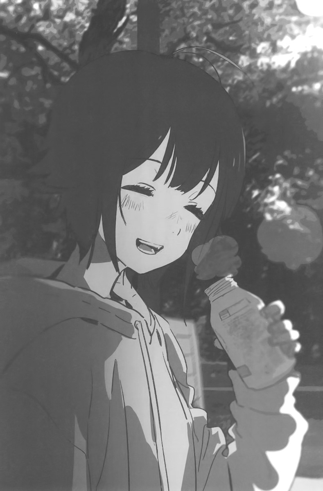真島笑嘻嘻的，完全不相信我。
沒辦法，得好好說明，免得被她誤會。自從上次被蓮見說過之後，我整理了自己的想法。如今的我，已經能確實地說出自己對星原的感覺了。
「以前的話，也許是喜歡吧。可是現在……那個，比起想和星原當男女朋友的那種喜歡，更像朋友的喜歡。該說變保守嗎？總之現在這樣的關係也很愉快，所以不想改變現狀。比起把高嶺之花放在手邊，我覺得在平地仰望那花兒，其實是最好的。」
可是真的說出來後，我覺得非常丟臉。真島應該不會笑我吧？我有點擔心，沒想到她聽得很認真。
「原來如此。我懂哦。」
「咦？妳懂嗎？」
「嗯。那種想法應該很常有吧，雖然我沒有過喜歡人的經驗。不過，因為現在這樣很快樂，沒必要特別發展成別的關係——我也好幾次有過這種想法。所以我可以理解你說的話。」
滋滋，真島喝起紅茶花傳。
心情一下子輕鬆了很多。有能夠理解自己的人真開心。我再次確認到把想法說出來是很重要的事。
「不過最後一句很像在吟詩，所以聽不懂。」
「不要說是吟詩啦。」
這、這傢伙……雖然我也覺得那句有點土，但也不至於被說成吟詩吧。
「不過啊，那種情況不一定能一直持續下去哦。」
「咦？」
「如果小夏對你告白的話，你怎麼辦？」
「咦！？」
我手中的咖啡歐蕾差點掉下去。
「那、那種事……不可能發生的啦。」
「怎麼會不可能呢？現在離小夏最近的男生，就是你了哦。」
仔細想想，也許真的是那樣吧。我們每天一起回家，在學校裡也經常聊天。可是星原喜歡的不是我，是汐。而且是她親口說的。
……她現在也依然喜歡汐嗎？
這幾個月來，星原不再找我談感情方面的話題。與汐的距離一直維持在朋友的範圍之內，看著汐的眼神中，也感覺不到戀愛的熱度。她最近的言行，甚至有種想把我和汐湊在一起般的感覺。
難道說，在我不知道時，星原已經放棄汐了嗎？下次再問問她吧。
「假如小夏對你告白，而你接受了，那麼到頭來，你的喜歡就不是朋友的喜歡，只是害怕告白失敗而已哦。如果想誠實面對自己的心情的話，這部分你要好好想清楚。」
「……我會銘記在心的。」
嗯嗯。真島煞有介事地點頭，「嘿嘿」又突然靦腆地笑了起來。
「哇～那些話好像戀愛諮詢專家？會說的話呢。剛才我的態度太高高在上了，你還是忘了那些話吧。」
「不，我會記住的。畢竟是有益處的話。我覺得妳可以自稱戀愛諮詢專家沒問題哦。」
「你在虧我是吧。」
真島鼓起臉頰。平常都是她虧我，我只是稍微回敬一下而已。
「是說，我不是為了聊這個才找你的。」
真島改變話題。
對了，她為什麼找我呢？剛才只顧著聊星原的事都忘了。
「是為了亞里沙的事。」
她的聲調降低幾分。
「我想，你應該很討厭亞里沙吧。」
如果問喜歡還是討厭，當然是討厭，可是我又不方便直接承認。畢竟真島應該還是把西園當成朋友。
真島不等我回答，繼續說下去：
「你會討厭亞里沙，也是當然的。因為她對你和槻木做了很多過分的事。那些事百分之百是亞里沙的錯，對她的行為視而不見的我也有不對。這次的事，也是亞里沙起的頭，所以我想你八成不會同情她。」
「不過啊——」真島繼續道：
「我還是沒辦法放下她。」
她安靜地喝了一口紅茶花傳。
「因為椎名的關係嗎？」
「小椎？……哦，你是說亞里沙用三角尺暴打糾纏小椎的傢伙的事嗎？雖然那也是原因之一，不過我的話是更之前。」
「更之前？」
「小椎不是說過嗎？我們和亞里沙小學同校。」
雖然印象模糊，不過椎名好像那麼說過。
「呃，她說妳們是上國中才變熟……」
「沒錯。小學時幾乎沒有說過話。可是啊，關於亞里沙，有件事我記得非常清楚。」
真島把背部深深靠在長椅上，看著腿上的紅茶花傳。
「應該是小三時吧，那時候我和亞里沙同班。教學觀摩日時，我媽媽有來。因為不是第一次教學觀摩了，大家都覺得稀鬆平常，沒有特別興奮的學生。上課上到快結束時，亞里沙突然哭了。」
我沉默地聽著真島說話。
「她不但哭了，而且是嚎啕大哭。那真的很驚人哦，完全不顧周圍的人的想法，哭到整張臉皺成一團。因為她沒有任何徵兆就哭了，老師也很困擾。老師試著安慰亞里沙，亞里沙卻完全無法冷靜下來。班上同學和家長們都很擔心她，最後是老師把她帶去保健室，才結束那場騷動的。」
真島呼了一口氣，繼續說著：
「我想，亞里沙的父母應該沒有來吧。如果父母在場，應該會很擔心地出面才對。雖然我不知道詳細的情況……但是哭得像三歲小孩的亞里沙，看起來很可憐。那個樣子深深烙印在我心中，直到現在，還是沒辦法忘掉。」
「……這就是妳在意西園的原因？」
「嗯，就是這樣。」
真島一口氣喝完紅茶花傳，「啪」以雙手捏凹空瓶子。
「雖然這只是我的想像，不過……我想，亞里沙應該很怕被拋棄吧。之所以對小夏特別溫柔，是因為她常常來找亞里沙說話的關係。」
「……這樣啊。」
我點頭說著，可是心裡無法接受。
雖然西園有她的困境，可是……
「每個人都自己的內情。」
說得極端點，就算連續殺人犯也不例外。例如被父母虐待，或者被深愛的人背叛等等，因為有悲慘的過去，最後才會走上歪路。假如用那種觀點看每個人，不論多壞的人，都有同情的餘地。
雖然說視情況裁量很重要，但壞事仍然是壞事。就算西園有寂寞的童年，或者有人放不下她，想拉她一把，她對汐做過的事也不會改變。所以，我的想法也不會改變。
「我不是希望你能原諒亞里沙。我只是想讓你知道她有這樣的過去而已。真的只有這樣。」
真島把紅茶花傳的空瓶一丟。瓶子呈拋物線狀在空中飛行，落入幾公尺外的垃圾筒裡。不愧是軟式棒球社的隊長，很會控球。
「好了。」真島起身。
「差不多該回去了，家裡的人會擔心。」
我也把變涼的咖啡歐蕾一飲而盡，站了起來。
我們分別走到自己的腳踏車前。真島家的方向似乎與我家相反。
「那就再見了……啊，對了，要不要交換聯絡方式？我們最近還挺常說話的。」
「好。」
我們拿出手機，加入對方的手機號碼與信箱。這是自從星原之後，第二次把女生的聯絡方式加到我的通訊錄裡，我有點開心。
「這樣一來，被你請紅茶花傳的部分就扯平了。」
「一瓶飲料的價格嗎……這樣到底算貴，還是便宜呢？」
「你在說什麼啊？是特別優惠哦。你要有自己超幸運的自覺哦——」
真島說著，收起手機，跨上腳踏車。
再見。我們道別後，前往自己的歸途。
我一面騎車，一面回想真島的話。
就算西園是基於自己的脆弱，才會做出那些事，我果然還是沒辦法同情她。就如同每個人都有自己的內情，每個人也都有自己的脆弱之處。每個人都有對自己感到無力或自我厭惡到想死的時候。就連公認是完美高中生的汐也不例外。他應該也有很多難以成眠的情況吧。
儘管如此，汐還是勇敢地面對自己，即使傷痕累累，仍然不停地前進。不論有什麼樣的內情，都不足以作為踐蹋汐的崇高的理由。
可是……
假如西園承認自己的錯誤，真心向汐道歉的話——
是說，要不要原諒西園，不是我能決定的。是汐。
我加快腳踏車的速度。
✽
冷風撫過臉頰。
今天，我也依然陪著汐晨跑。太陽剛露臉的早晨很寧靜，能聽見的，只有規律的腳步聲。隨著步伐搖晃的髮尾，在晨曦的照射下，如絹絲般閃閃發亮。
一直看著汐的話，可能會把腳踏車騎到掉下河床。我把視線固定在前方。
「就是明天了。」
「嗯。」
是錯覺嗎？汐的速度似乎比平常更快。雖然表面上沒有緊張之色，但內心也許波濤洶湧吧。只要想到輸了之後的事，說不定多少會變得神經質。
「你覺得狀況怎麼樣？」
「還不賴。雖然沒辦法完全彌補空窗期，但是比預期中的好。之後就看風助的狀況了。」
「是這樣啊。」
儘管如此，勝率仍然只有五成嗎？我不敢多問。
假如汐回田徑隊，我就不能和他以及星原一起回家了。最近我們總算能毫無芥蒂地自然相處，我才不想被能井拆散。雖然我常常在想還是別比了，可是汐完全不肯改變他的決定。
真是令人焦急。
我能做的，只有準備寶礦力，或是在不造成妨礙的情況下與汐聊天而已。不過這一切，也將在明天結束……啊，明天要和能井比賽，所以應該是今天結束吧。
「對了，你明天也要晨跑嗎？」
「不，明天不跑。我不想在比賽前累積疲勞。」
「這樣啊。那今天就是最後一天了。」
我有點眷戀地說著。只要克服早起的難關，在空氣清新的早晨騎車，是很幸福的事。而且還能和汐聊天，不會無聊。
「下次再一起跑吧。」汐說道。
「好啊。」我點點頭。
「下次不能騎腳踏車哦。」
「咦！那有點……」
「比起騎車，用自己的雙腿跑步絕對比較好哦。你不是在減肥嗎？」
對了，汐一直那麼以為呢。沒想到星原的胡扯到現在還被當真。
但我運動不足是事實。偶爾跑一跑也許不錯。
「……要用我跟得上的速度跑哦。」
「當然。」
汐滿意地點頭。
一陣子後，我們來到折返點。是通往一級河川對岸的橋。平常汐都是過了橋後回頭，在回去途中的公園拉筋，結束練習。
可是今天，汐卻沒有轉彎過橋，而是繼續向前跑。
「你不過橋嗎？」
「今天是最後一天了，我想再練一下。」
說完，汐加快速度，我也大力踩著腳踏板跟上。
汐的呼吸間距愈來愈短，腿也愈抬愈高。如破風般的速度。可是從汐身上完全感受不到疲勞，甚至有一種清爽的感覺。
現在不要和他說話比較好。汐也專心地跑步。
我移動到汐身後，變成在後方追著他。
……是說，汐跑步的樣子，看起來真的很舒暢呢。
汐是什麼時候喜歡上跑步的呢？雖然印象模糊，但是我記得小學二、三年級時，汐並不喜歡運動。當時的他不是在運動場邊緣玩捉迷藏，就是以小樹枝在地上畫圖。
不知何時，汐以跑步得了第一名，一下子成為班上的風雲人物。就我所知，汐就是從那個時候開始嶄露頭角的。
其實汐原本就具有群眾魅力，只是大家沒有發現嗎？還是說，不論跑步速度，或是良好的人際關係，都是他努力的成果呢？
距離太近反而會出現盲點。身為童年玩伴，關於汐，有許多我不知道的部分。雖然那些不是必須特別在意的事，但如果哪天能知道的話也不錯。
「……啊。」
對了。
我一面騎車，一面看手錶確認時間……已經這麼晚了。
「汐！該回去了。」
我出聲叫道。汐逐漸放慢腳步，最後變成用走的。我也下車走在他身邊。一道汗水從汐因血液循環加速而發紅的臉上滑落，我把毛巾遞給他。
「謝謝。現在幾點了？」
「六點五十分。」
「真的嗎？糟糕……我太專心了。」
汐擦著汗，停下腳步。
就算以剛才的速度跑回去，也會比平常晚二十分鐘。再加上剛才是高速奔跑，所以汐現在很喘。就算用跑的回去，也會很辛苦吧。
「我載你吧。」
我用下巴指著後方的載貨架。
「可以嗎？」
「嗯。這樣比較快，也比較方便。再說這附近沒什麼車，不會被警察發現。」
唔——汐煩惱地沉吟起來。
不用說也知道，單車雙載是違反道路交通安全規則的。最嚴重的話，還會通知家長。儘管說只要乖乖被警察叨唸幾句，應該就沒事了，但仍然不是什麼愉快的情況。對個性認真的汐來說，也許不想變成那樣吧。
「不勉強啦。」
「……不，既然機會難得，就麻煩你了。」
汐有些客氣地答應了。
「對了，在那之前，要先拉筋才行。」
「瞭解。」
汐把毛巾放回籃子裡，開始伸展身體拉筋。雖然時間不多，仍然確實地把流程做完，不愧是前運動員。
幾分鐘後，拉完筋的汐面向我，有些靦腆地搔著臉。
「那就……麻煩你了。」
「不用那麼客氣啦。」
我苦笑著跨上腳踏車，汐側坐在載貨架上。
「那麼，出發囉。」
我等汐調整好位置，坐穩之後，踩下腳踏板。
有多久沒有載過人了呢？腳踏板比想像中的重，車身稍微搖晃了一下，汐抓住我的肩膀。
「還好嗎？」
「還、還好。」
我有些逞強地回答，假裝沒事地在腿上使勁。一旦速度加快，車身就會穩定下來，之後就沒問題了。
我繼續加速。以這個速度的話，感覺可以輕鬆到家。腳踏車輕快地在與河川相鄰的道路上前進。
「哦——！好快！」
汐歡呼起來。
有種「這就是青春」的感覺。明明暑假去水族館時、準備文化祭時，都沒有這種感覺，可是不知為何，現在卻強烈地感受到青春。
我思考起來。是因為在做壞事嗎？雖然只是雙載，但還是違反了道路交通安全規則。也就是說，我和汐成了共犯。也許我是把這種因擔心而心跳加快的感覺，誤以為是青春了吧。
如果真的是那樣，青春的本質，或許是悖德感吧。
就在我思考這種事時，匡噹，腳踏車騎進路面的凹陷處，車身因此彈起。
「啊！」
汐小聲叫痛。
「對、對不起，我沒注意到有凹洞。」
「啊哈哈……沒關係，我只是嚇了一跳而已。」
「不行，是我太不用心了……如果翻車可就不好笑了。」
汐明天還要和能井比賽呢。就算沒有比賽，也不能害他受傷。
我稍微放慢速度，汐的肩膀抵在我後背。我沒有突然減速到會因為慣性作用而撞上來的程度，而且汐也沒有在碰到我的背部後立刻離開。也就是說，汐是主動靠上來的。透過背部，可以感受到汐的重量。
「你變溫柔了。」
汐呢喃似地說著。
我突然有種寂寥的感覺。汐的話，複雜地纏繞在我心中。
如果是汐，我能無止盡地對他溫柔。
因為汐很明白，我沒有其他意思。
如果是星原，我應該沒辦法對她好成這樣。不是喜歡或討厭的問題，是因為我怕星原認為我對她別有用心，怕友情因此出現裂痕，所以對她的溫柔，會有所保留。
可是，與汐之間沒有那種問題。
他能明白我的溫柔是單純的溫柔，不需要擔心他誤會我。
对此我很欢慰【+】
……可是……
我的溫柔中，帶著少許的贖罪之意。
過去對汐做的事，因為無知而害他痛苦的事。這兩件事造成的罪惡感，推著我對汐溫柔。汐很敏銳，說不定早就察覺我的想法了。他說不定是在知道的情況下，讓我贖罪的。所以他才會開心地收下我買的寶礦力……
這樣下去，真的可以嗎？
我該不會又在不知不覺中，讓汐感到痛苦了？
我偶爾會像這樣感到不安。可是既然汐對我露出笑容，表示我應該沒有做錯。說起來，這本來就不是非黑即白的問題。
「啊，對了。」
我想到一件事。
「如果你贏能井的話，我幫你慶祝吧。」
「慶祝？」
「想做什麼都可以，比如找星原三個人一起開慶功宴，或是像暑假那樣出去玩。你有什麼希望我能為你做的事嗎？」
「希望你能為我做的事……」
汐閉上嘴，思考起來。
他沉默了好一段時間後，總算開口：
「可以等贏了之後再想嗎？」
「當然可以。順便說，預算在五千之內。」
「我不會要求那麼花錢的事啦。」
「是啊。因為比起哈根達斯，你是會選PAPICO冰棒的人呢。」
「那是暑假時的事？你居然還記得。是說，你是明知道我不會要求花錢的事，才說都可以的？」
「我只是說說看而已。」
「啊，是喔。」
咚。汐輕輕用頭撞我的肩胛骨。
回過神時，原本如火焰燃燒般的晨曦，已經變成澄澈的淺藍了。候鳥排成V字形，劃過無雲的青空，飛向南方。
今天天氣也很好。
「我之所以選PAPICO——」
汐以細若蚊鳴的音量，自言自語似地道。
「是因為可以和你對分。」
我差點忘了踩腳踏板。
這句話，我該怎麼回答才好呢？
「這樣啊。」
到頭來，我只能傻怔地附和。
馬上就要抵達住宅區了。
明天放學後，就是與能井對決的時候了。汐今晚似乎還是會練跑，但我能為他做的事，只到今天早上為止。接下來，只能相信汐的實力了。
中午時，我一如往常地與蓮見在同一張桌子吃飯。午休的喧囂充斥在教室裡，今天也是和平的一天。再加上世良沒來，更是令人安心。
可是，正因為舒適，某個問題學生才特別令人在意。
不用說，當然是西園。
拒人於千里之外的態度依然沒有改變，如今也對所有人散發憎恨。不只對班上同學，就連對老師也一樣。可以說對人類不信任到極點。雖然我以前覺得那樣活著不是很辛苦嗎？不過自從聽過真島的話後，我開始對她有點改觀。
……只是改觀而已。
我不打算接近她，特別是在汐的面前。
假如我在意起西園，汐應該會不高興吧。就像以前世良對西園做的事一樣。看到自己喜歡的朋友與討厭的傢伙變要好，會非常不痛快。所以目前我什麼都不會做。
「請問槻木前輩在嗎？」
就在我觀察著西園時，聽到有人說話。
那是一名貌似一年級的男生，正從門口探頭說話。他戴著細框眼鏡，看起來很正經。長相雖然稱不上美男子，但是頗為精悍。
槻木前輩，他是這麼說的。是汐認識的人嗎？
「佐原學弟？怎麼了？」
那男生似乎叫佐原。正在與星原吃飯的汐放下筷子，朝佐原走去。由於汐臉上沒有警戒之色，所以對方應該不是世良或能井那種討人厭的傢伙。
汐一走近，佐原的目光明顯地游移起來。
「那個……其實是關於能井學長的事……」
汐皺起眉頭。
「風助怎麼了？」
「呃……對不起，我想在沒有其他人的地方說。」
「知道了，你等一下。」
汐走回自己的座位，向星原打過招呼後，與佐原離開教室。
關於能井的事。是什麼事呢？與明天的比賽有關嗎？
「真稀奇，除了世良，還有人會來找槻木。」
蓮見邊吃邊說。
「剛才那個人，是田徑隊的嗎？」
「咦？你不知道他？」
「你知道他？」
我回問，蓮見露出意外的表情。
「說到佐原，就是下一屆的田徑隊王牌。他在全校朝會時被頒過很多次獎，我還以為你知道呢。」
「啊——這麼說來，好像有點印象。」
全校朝會時，我的大腦通常是休眠狀態，幾乎不記得發生過什麼事。
「那樣的佐原找汐談能井的事嗎……好像有點讓人不安呢。」
「在意的話，要不要偷偷跟過去？」
唔，我沉吟起來。
一來偷聽不是好事，再說我也不知道兩人去哪裡了。假如找汐的是能井，別說偷偷跟了，我會當場說要同行。但既然對方是汐的社團學弟，應該不需要那麼擔心吧。
「沒差啦，之後再問汐就可以了。」
這樣啊——蓮見沒什麼感想地回我這句話，咬了一口煎蛋捲。
過了約五分鐘後，汐一個人回來了。他面無表情地快步走回自己座位坐下。「你們說了什麼？」星原發問。
「呃……類似報告的感覺吧。」
「報告？」
星原不解地歪頭，又問了一些問題，但是從我這裡聽不清楚對話內容。反正放學後再問就行了，所以沒差。
——我本來是這麼想的。
放學後，我和汐與星原一起回家。
「不是什麼大不了的事啦。」
汐只這麼說，完全不告訴我們詳細的內容。
我與星原當然都很詫異，但就算想自然地套話，也都被汐打迷糊仗地帶成其他話題，汐的樣子明顯很奇怪。回想起來，第五節、第六節課時，汐一直心不在焉，被老師點名時，甚至難得回答不出問題。
汐之所以變成那個樣子，原因只有可能是那個一年級生。到底是談了什麼關於能井的事呢？是與明天的比賽有關的事嗎？早知道會在意成這樣，午休時我就跟過去算了。
我抱著滿肚子疑問，直到入夜。就在我想上床睡覺時，星原打電話過來。
果不其然，是關於汐的事。
『我超在意的！』
星原高亢的聲音，從聽筒中傳出。
「我也是，可是汐不想告訴我們呢。」
『是啊～到底是什麼事呢？是不可告人的事嗎？』
「例如？」
『例如……能井同學家藏著屍體之類的。』
「那確實是不可告人……怎麼可能啊。」
我已經與星原熟到可以這樣吐槽了。雖然情況不對，但我還是湧起一股自己成長了的真實感。
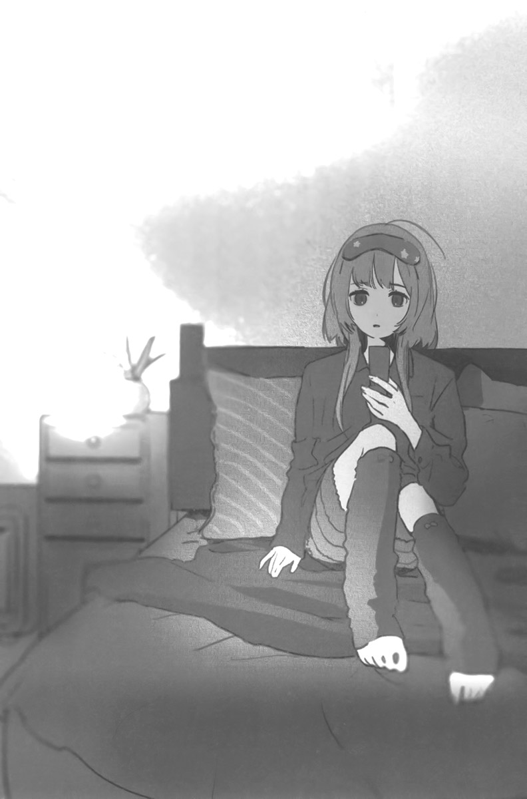「那就變成社會案件了。而且為什麼那個一年級的學生會知道那種事。再說，就算知道，也不該找汐，而是去向警察報案吧。」
『沒有啦。因為上次看的小說裡有那種劇情……』
小說。我對那兩個字起了反應。
「咦？推理小說嗎？妳現在還有在看小說？」
『有啊！因為是讀書之秋，所以我最近又看起小說了。下次再推薦書給我吧～兩百頁左右，可以一下子看完的故事。』
「好啊。我會列成清單給妳的。」
『謝謝！那麼現在回正題吧。』
雖然我想多聊一些小說的事，但是星原乾脆地跳過這話題。真寂寞。不過她現在還是有在看小說，對我來說是值得開心的事。因為看書是我與星原的共同興趣，我希望今後她也能繼續看小說。
『屍體是開玩笑的。不過到底是什麼事呢？雖然小汐說是報告啦。』
「唔……例如能井在田徑隊闖了什麼禍？」
『如果是的話，可以直接告訴我們啊。』
「說的也是……」
我們亂猜了一陣子，可是覺得都不對。夜深了。
「乾脆直接去問那個一年級的學生好了。他叫佐原是吧？」
『啊，我已經直接問過了哦。』
「咦？真的嗎？什麼時候問的？」
『大概兩個小時前，寄信去問的。我向田徑隊的朋友打聽佐原學弟的信箱……啊，這件事要對小汐保密哦……？』
「嗯，嗯嗯……我知道了。」
星原的人脈真驚人啊……不過更驚人的是她的行動力。明明不認識佐原，居然敢當天就寫信問他，我的話絕對做不到。
「那佐原怎麼回答呢？」
『他說不能說。』
「說的也是……」
真失望。
聽筒傳來砰的一聲，應該是星原倒在床上的聲音吧。輕微的彈簧聲傳了過來。
『如果小汐之後肯告訴我們就好了……可是明天的比賽，到底會怎麼樣呢……唉～』
星原長長地嘆氣。看來她滿腦子都是汐的事。
她之所以打聽佐原的聯絡方式，說不定是被逼急了，才會豁出去地直接問吧。就算是星原，應該也需要勇氣，才能詢問不知道聯絡方式的一年級生他們談了什麼。
她的行動力的根源，是友情呢？或者是……
「那個……」
『嗯——？』
星原慢吞吞地回應。
我本來想問，但還是算了。
「……對不起，沒事。」
『等一下～哪有這樣的？話說一半會讓我很在意哦～』
「不，那不是現在該談的話題。」
『咦——說啦說啦，我不想有更多在意的事了。』
星原吵著要聽。但這次是起頭的我不好，只能說了。
「妳現在對汐有什麼想法呢？」
『嗯？什麼意…………啊。』
聽筒的另一頭突然安靜下來。不只停止說話，似乎連動作都停下了似的。
「星原？」
『對了，我還沒告訴你呢。』
「告訴我什麼？」
星原吸了一口氣。她想說什麼呢？緊張感隔著聽筒傳到這邊，我忍不住挺直背脊。
『我告訴小汐我喜歡她了，在文化祭那天。』
「咦！」
衝擊性的發言，使我說不出話。
『可是，我是不行的。不過我到現在還是很喜歡小汐哦，朋友的那種喜歡。我想你應該看得出來吧。』
「是，是這樣啊……該怎麼說呢……」
不行。也就是失戀的意思……咦？也就是說，星原的喜歡是戀愛的喜歡？可是她剛才說，是朋友的那種喜歡……我腦子混亂了。
雖然我想問得更清楚一點，但是那麼做就太沒神經了。既然已經是過去式，還是簡單地帶過就好吧。
「……辛、辛苦妳了？」
『哈哈，你說得好輕快啊～』
糟糕，我說錯話了？我趕緊思考該怎麼訂正時，星原就先道歉了。
『對不起，其實應該早點告訴你的。我不是故意瞞著你哦，真的是單純忘了說而已。』
「不，我是無所謂……應該很難說出口吧，沒什麼好道歉的。」
『是嗎？那……總之就是這樣！』
星原開朗地說。我腦中浮現她挺胸說話的模樣。
完全沒有尷尬或消沉的感覺，她似乎完全接受這個事實了。既然如此，我應該可以照原本的模式與她相處吧。再說文化祭已經是兩個月前的事了，事到如今才開始顧慮星原的想法，未免也太晚了。
「這樣啊。所以我也要從妳的顧問身分畢業了呢……」
『你在說什麼啊？你現在也還是顧問哦。』
什麼意思？我怔了一下，但是又立刻理解。的確，星原正在找我談汐的事呢。
「說的也是。如果我能勝任，隨時都可以找我商量事情哦。」
『哦，真可靠～能和你商量事情，我很開心哦。』
我也是。能擔任星原的顧問，我覺得很開心。因為這樣會讓我覺得兩人有朋友以上的關係。
我正暗自感動，聽筒傳來微小的呵欠聲。
『剛才說太多話，有點想睡了……』
「那就睡吧。暫時忘了今天中午的事。」
『嗯～就這樣吧。小汐不肯說，應該是有什麼理由……還是相信她吧。』
「嗯，我也會相信汐的。」
我們互道晚安後，結束通話。
雖然我也和星原一樣，對佐原找汐的事耿耿於懷，甚至開始動起要不要妨礙能井的念頭。不過考慮到東窗事發的風險以及道德問題，還是作罷了。
不論結果是哭是笑，一切都看明天了。
✽
今天會冷到像冬天一樣，電視上的氣象主播這麼說。快速增強的低氣壓吞噬日本列島似地北上，椿岡高中的上空也滿布著鉛灰色的烏雲。雖然預報說晚上天氣就會好轉，但目前完全沒有回暖的跡象，而且風還很強，強到胸前的領帶亂飛的程度。
已經過了放學的尖峰時段，校門口只剩零星的學生。我與星原大氣也不敢吭一聲地看著換上運動服，正在對峙的汐與能井。在場的人除了我們，還有一名與能井一起過來的田徑隊男生。
「藤瀨是保險用的。」
能井以下巴指了指那男生。他的名字似乎叫藤瀨。從能井的態度看來，應該是一年級的學生吧。那男生理著小平頭，身材健壯，打從來到這裡就一句話也沒說，看起來有如石像似的。
能井瞥了我與星原一眼，把視線移回汐臉上。
「你可別想和這幾個傢伙串供捏造事實哦，藤瀨會監視你們的。」
「我才不會做那種事。」
「哈！天曉得。」
既然怕我們作弊，表示能井認為只要堂堂正正比賽，自己一定會贏。那強悍的態度，使我有些畏縮。但汐一點也不害怕，冷靜地說：
「為了避免出現爭執，先來確認規則吧。」
「好啊。」
「繞學校外圍六圈，起點與終點都是正門口，對吧？」
椿岡高中的外圍有八百多公尺，六圈的話，大約是五千公尺。外圍是鋪裝過的道路，沒有紅綠燈，車流量也不大，很適合跑步。
「如果想在操場上跑也行，不過要等田徑隊練習完就是了。」
「不用了。快點開始，快點結束吧。」
汐開始拉筋做暖身運動。能井開口說：
「等一下。我也有想確認的事。我贏的話，你會回男子田徑隊，對吧？」
「嗯。我贏的話，你也要遵守諾言。」
「啊？諾言？」
能井一臉訝異。
「……我不是說了嗎？你要向我道歉。」
「哦，那個啊。我完全忘了。」
能井毫無愧色地說著。實在是讓人火大的傢伙，居然忘了那麼重要的約定。
但是比起我，汐似乎更不高興。只見他皺起眉頭，露出煩躁的神色。面對能井時，他很容易失去冷靜。
「……光是這樣，果然還不夠。」
汐以帶著恨意的聲音對能井說：
「我贏的話，你還得向咲馬道歉。」
突然冒出自己的名字，使我吃了一驚。我？
我把目光從汐身上移開，看向能井。兩人目光對上，能井的臉因憎恨而扭曲。
「又是這傢伙……你們搞上了？」
「你還記得自己撞倒咲馬的事吧？我要你為那件事向咲馬道歉。」
「我不是在和你說話。我是在問這傢伙。喂，你們搞上了嗎？」
快點回答！——他催道。
這傢伙不戳人會死是嗎？不論能井或西園，為什麼都那麼愛找人吵架呢？為什麼要對討厭的人那麼執著？為什麼要把有限的時間浪費在想法與自己不同的人身上呢？
我不懂，也不想懂。
「……就像汐說的，我們不是那種關係。」
「也是。」
能井露骨地展現輕蔑的眼神。
「因為穿女人衣服的男人很噁心嘛。」
血液瞬間衝上腦部。
湧上心頭的話忍不住脫口而出——在那之前，我用力忍了下來。這是挑釁，只是單純想讓我生氣而已。沒必要和這種人認真，浪費時間。
但我還是反駁了。我無法無視對汐的嘲笑。
「……噁心的是你吧——」
「你剛才說了什麼？我沒聽清楚呢。」
能井朝我逼近，在極近的距離居高臨下地皺眉瞪我。反正只是假裝凶狠。這傢伙和西園不同，沒膽子動手打人。
「汐已經放棄當男人，也放棄田徑隊了。所以你還是早點死心吧，不要在那邊糾纏。我從以前就一直覺得，你這個樣子和分手後還是念念不忘的前男友沒什麼兩樣。」
「什……」
前男友。這個詞似乎很有效果。能井氣得肩膀發抖，一把揪住我的領子。
「開什麼玩笑！誰要對這種……」
「如果你想否認，就不要再纏著汐了。說什麼想做個了結，到頭來，你只是不甘心被汐拋棄吧？但是又拉不下臉老實承認，所以才一直找汐的碴。對吧？」
「你……！」
能井舉起右手。呀啊！原本緊張地看著我們的星原小聲尖叫起來。
「夠了吧。快點比一比。」
汐抓住能井的手。
能井恨恨地瞪著我，不情不願地放下右手，推開我似地放開揪住領子的左手。幸好沒被打……我暗自鬆了一口氣。
「你就睜大眼睛，仔細看清楚汐輸的樣子吧。」
能井放完話，看向汐。
「我一定會贏你。」
「那就試試。」
兩人背對著對方，默默地開始熱身。
一陣秋風吹過，不知打哪來的枯葉飛到腳邊又飛走。我想起以前看過的西部片。決鬥前，牛仔們檢查自己手槍的時間。現在就是那種感覺。
汐與能井站在校門口。大門的軌道是起跑線。由能井帶來的藤瀨發號施令。
「就定位。」
兩人將腳尖抵在軌道上，做出起跑動作。
空氣緊繃了起來。
「跑！」
汐與能井的比賽開始了。
兩人比的是五千公尺。就田徑比賽來說不是很精彩的種類。前半段應該會像馬拉松一樣跑在一起，直到最後一圈才開始拉大差距……我本來是那麼想的。
可是汐從一開跑就衝得很快，與能井之間的距離愈拉愈開。假如這是短跑，應該是好事，但現實並不是那樣。汐的體力有辦法撐到後半段嗎？星原似乎也有同樣的擔憂，她擔心地看著愈來愈遠的汐。
「跑那麼快，沒問題嗎……」
「汐應該有什麼戰術吧。先拉開距離，再維持到最後之類的……」
「是的話就好了……」
星原看了看一旁的藤瀨——被能井帶來的田徑隊男生。也許星原想尋求藤瀨的說明吧。可是從剛才起，藤瀨就只說最低限度的話，而且有如老練的保鑣似地，發出難以接近的氣勢。難以輕易與他說話。
到頭來，無法開口發問的星原，只能把目光放回汐身上。
兩名跑者的身影消失在校舍另一頭。
✽
——怎麼回事？
為什麼我被拋在後頭了？現在還不到第一圈的一半哦？汐那是跑一千五時的速度。如果是那種距離，確實可以先甩開對手，維持同樣的距離到最後。但現在比的是五千公尺哦？他的速度太快了。
當然，假如有心，我也可以追上。但那麼做只能得到暫時的安心感，還會打亂現在的步調。沒必要急著追上去……儘管我心裡明白，心裡還是有種莫名的彆扭感。
仔細想想，從一年級起，就是這樣了。
扣錯釦子的襯衫、夾在長篇作品中的其他漫畫、明明圖案對不上，還是硬塞進去的拼圖零片……類似那樣的，沒有收納在應該收納的位置的彆扭感。汐經常給我那種感覺。雖然我不知道其他傢伙有沒有發現。
但是，就連那種彆扭感在內，當時的我非常中意汐。
不論隊員們開黃腔時，安靜地保持距離的作風，或是頑固地拒絕與一群人一起上廁所的態度，我都覺得如孤狼般帥氣。長得像女生一樣漂亮，但比任何人都專心練跑的模樣，也讓我很欣賞。
和其他傢伙完全不一樣。
所以我才會接近汐。
聊過之後，我發現汐意外地和善，對田徑有豐富的知識，而且很重視身體的管理。最重要的是，非常認真練習。儘管抱怨低血壓早起很痛苦，可是比誰都早來練習。不服輸的部分也讓人很有好感。隊上的人全都很喜歡他。每當我聽到汐被其他人稱讚，我便感到開心。
當時的汐，看起來真的很耀眼。
可是沒想到……就算長得像女人，有人會因此真的穿起裙子嗎？
一開始，我非常震驚，接著是困惑，不知道該怎麼反應。雖然我知道世界上有那樣的人，可是做夢也沒想到汐居然是那樣……不，我說謊了。老實說，「有那種感覺」的瞬間，多到數不清。光是稍微回憶一下往事，在汐身上感覺到的那些微小彆扭感，就全都有了合理的解釋，大腦也自動得出答案。
可是，我無法接受。
接在困惑而來的，是憤怒。
——你騙我。
一年級與二年級，我和汐都不同班，但在田徑隊的時間比其他人都長。只要想到汐和我相處時，一直隱瞞著本性，我就有一種被背叛的感覺。不告訴我就直接退出田徑隊的事也不可原諒。
汐開始穿裙子上學的那天，我當然也去田徑隊練習了。因為我想早點與田徑隊的人共有這種無處宣洩的鬱悶。大家一定都和我一樣，對擅自做出那些決定的汐感到非常憤怒。
我是那麼認為的。
就在我即將進入社辦時，我隔著門，聽到學弟們的說話聲。他們在說「槻木前輩」什麼的。我心想，連一年級生都聽說汐的事了。當我正準備打開門時——
「我覺得可以耶。」
有人這麼說。
我維持著握住門把的姿勢，僵住了。
「槻木前輩那麼好看，而且不管對誰都很溫柔。只要外表能接受，其他的都是小事吧？」
「哇噢——你這個勇者。不過如果我不知道槻木前輩是男的，說不定也可以接受呢。」
開玩笑的吧？
難以置信。是這兩人的感性有問題嗎？
社辦裡似乎還有其他人。
「不知道槻木前輩會不會回心轉意。他應該還沒確定會退出田徑隊吧？」
「老師都那麼說了，肯定是確定了吧。但如果槻木前輩改變想法，就不知道了。」
「啊，他會改成加入女子田徑隊嗎？是的話就能再見面了。」
「你到底有多喜歡槻木前輩啊？」
哈哈哈，社辦中傳來歡樂的笑聲。
直到其他隊員出現為止，我都無法動彈。
不對……不管怎麼想都太奇怪了。為什麼每個人都那麼簡單就接受了？
無法理解。
後來我才知道，田徑隊裡分裂成肯定與否定兩派。可是隨著時間過去，接受汐的人愈來愈多。最關鍵的是文化祭，A班演的羅密歐與茱麗葉造成很大的迴響，就連不認識汐的學生，也都肯定了他選擇的生活方式。每當聽到那種說法，我就覺得芒刺在背。自己只能不甘心地咬牙，看著汐逐漸變成自己不認識的人。
你那是歧視。甚至有學長這麼告誡我。
到最後，所有田徑隊的人看起來全都是敵人。
……至少……
至少，不是汐的話。
為什麼是你？
為什麼是比誰都更像田徑跑者的你？
無法忍受。
之所以感到痛苦，是因為會忍不住把過去的汐與現在的汐拿來比較。假如從一開始就沒有和汐交好，現在就不需要煩惱這些事了。
所以，我有個想法。
我要完全消除自己心中的汐。必須打敗比誰都認真練習的汐，才有辦法與過去完全道別。
也就是說，這場比賽是我抹消回憶的儀式。驛站接力賽只不過是藉口。
我把意識拉回現實。
雖然現在領先的是汐，不過只要在最後一刻跑贏他就行了。反正到了後半段，他的速度一定會慢下來，現在只要撐過去就好。不要想多餘的事，把精神集中在呼吸上。
第三圈。
第四圈。
第五圈。
——就是現在。
我開始做最後衝刺。在這圈使出所有力氣奔跑。沒有戰術或任何手段，只是一心一意地奔跑，為了追過汐。
撞擊在臉上的風愈來愈強。我收起下巴，將視線固定在正前方，大幅擺動雙臂，用力蹬著地面，加速。要更快。要一口氣縮近與汐的距離。速度愈來愈快了，是理想的速度。可是……
為什麼，汐還是離我那麼遙遠呢！？
兩人的距離不但沒有縮短，反而逐漸拉大。
怎麼可能！前半段跑那麼快，為什麼沒有慢下來？他明明有五個月的空窗期，可是卻和那個時候一樣……不，說不定比退出田徑隊前更快……
雙腿忽然變得沉重。身體開始喊著要罷工。不會吧。我會輸嗎？不，還沒結束。離終點還有半圈以上。汐一定會慢下來。別放棄，要努力追到最後。要展現自己的毅力。
好痛苦。心臟快爆炸了。完全追不上。疲勞與焦躁使我腦中一片空白。不妙。必須更快才行。馬的！為什麼追不上？不要啊。
等、等我一下……
✽
「呼！呼……」
抵達終點的同時，能井耗盡力氣似地坐倒在地上。弓著的背部劇烈起伏，拚命吸入空氣。
汐安靜地俯視那樣的能井。
比賽的結果，是汐贏了。而且汐還領先了十秒以上。我不知道就五千公尺來說，這樣的差距是大是小，但是看在我眼中，是汐得到壓倒性的勝利。
汐抵達終點時，我和星原大聲歡呼，就像和好朋友考上同一所學校似地興奮。最近我們一直很擔心這場比賽的輸贏，如今大獲全勝，我們總算放了心，感到開心。
可是，汐的臉上完全沒有喜色。
他注意的，不是為他歡呼的我與星原，而是朝著終點跑來的能井。能井一抵達終點，汐就逼到那傢伙面前，以難以置信的表情問：
「為什麼？」
雖然汐的呼吸也很急促，可是不像能井那麼嚴重。能井喘著氣，抬起頭。
「……你在問什麼？」
「為什麼你的速度變慢了？」
變慢了？汐先不說，為什麼能井會變慢？
能井咬著下嘴唇，低頭不語。看那個反應，汐沒有說錯。
「你沒去參加團練？」
「才、才不是！」
能井搖搖晃晃地起身，可是雙腿不住顫抖。是勉強才能站立的狀態。
「我當然有去參加團練。剛才的比賽……我沒有認真去比。我怎麼可能在這種比賽使出全——」
「你騙人。」
能井話還沒說完，就被汐打斷了。
連我都看得出來能井在說謊。能井痛苦喘氣的樣子，不可能是演的。
「你喘成那樣，還好意思否認。你蹺了團練對吧？上次在鞋櫃區碰到你時，我就覺得奇怪了。有參加團練的話，不可能那麼晚到校。」
上次……是指我被能井撞倒的那天吧。
「那天……是因為下雨所以沒有團練。」
「不要胡扯。下雨時，會在教學大樓做基礎練習。我可是知道的哦。說起來，就算下雨，也不是完全不能跑，想自主練習根本沒問題。」
「……」
「還有……風助，你還擔任了文化祭的執行委員對吧？那時你也減少了練習時間對吧？」
「沒辦法啊。因為得做執行委員的工作……」
「晚上練習不就好了。就算團練時間變少，也能找其他時間彌補……我退出田徑隊後，你到底都在做什麼？」
汗水從能井的額頭滴落。
看得出來他正拚命尋找反駁的理由，可是不論怎麼等，都沒有聽到他開口。能井粗重的喘氣聲，與風聲填補了沉默。儘管離天黑還有一段時間，但由於天空滿是烏雲，周圍已經開始變暗了。
「我說啊，風助。」
汐以教誨孩子似的語氣開口：
「難道你以為，我退出田徑隊之後，就不再跑步了嗎？」
「……！」
能井睜大眼睛。
「就算退出田徑隊，我還是天天跑步哦。自從接受你的挑戰後，還增加了跑步的時間。可是你，別說為比賽做準備了，連一般的練習量都沒有做到。如果你不想承認蹺掉團練，就表示你太傲慢了，認為隨便跑都能贏過我。哎，無論如何——」
咻，一陣強風吹過。
「——你太小看人了。」
汐的聲音低了兩個音階。那是將憤怒與失望、鄙視混合熬煮過般，漆黑而沉重的話語。
「就算穿上裙子，和女生一起上體育課，我喜歡跑步的事也沒有改變。之所以退出田徑隊，是因為我不想以男生身分進行社團活動。這部分你完全誤會了。不管選擇以什麼性別生活，我都是我，沒有什麼會因此截然不同的地方。」
「……我知道。」
「你不知道。」
你什麼都不知道——汐追擊道。
「你還是完全沒變。對自己太有信心，只要事情不能照著自己的想法進行，就會像小孩子一樣鬧脾氣。完全沒變……」
刀刀見骨的話。但是比起被這麼說的能井，汐似乎顯得更難受。
現在不是悲傷的時候，應該為自己的勝利感到喜悅才對。汐之所以無法開心，是因為這勝利來自對他的偏見。假如能井有為比賽認真練習，就算結果不變，對汐來說，這件事或許已經無所謂了吧。
「你還記得約定吧？」
能井的肩膀顫抖了一下。
「向我，還有向咲馬道歉。」
這是重要的約定。儘管這不是值得開心的勝利，但如果能聽到能井的道歉，汐應該會比較消氣吧。
然而即使到了這種時候，能井依然抿著嘴，低著頭，沉默不語。那不願乾脆認輸的態度，使汐深深地嘆氣。
「算了，我們走吧。」
他呼喚我與星原，轉身走入校門。
就這樣直接離開嗎？星原困惑地朝我看來，似乎想徵求我的意見。
儘管有很多不滿的部分，但我們無法阻止汐離開。
就在我們準備跟著汐離去時……
「請等一下。」
汐停下腳步，回過頭來。
這句話出自藤瀨之口。他叫住汐後，看向能井。
「能井學長，你還是別再堅持了。如果不說點什麼，一輩子都會這樣哦。」
原本安靜旁觀的藤瀨開口勸道。就算是能井，應該也不能無視藤瀨的話吧。這已經不是汐與能井的問題了。假如能井繼續保持沉默，會失去藤瀨的信任。
不過那種東西，說不定早就失去了。
在場所有人，全都等著能井開口。
「……哈。」
能井自嘲地笑了，他抬起頭。
「說得那麼大言不慚，結果輸得那麼徹底，還被學弟糾正……如果連約定也不遵守，不如死了算了。」
他想通似地說完，看向汐。
「……汐，對不起。」
能井總算道歉了。
那一定是發自真心的道歉吧。但實在太簡潔了。除了道歉，果然還是該提出其他的要求才對。我心裡這麼想著，看向身旁的人。
汐的表情完全沒變。不回應也不點頭。他究竟是以什麼心情聽能井的道歉的呢？由於他面無表情，我完全看不出來。
「還有紙木。對不起，那天撞倒你。」
「……我沒差啦。」
反正我只是順便的而已。
能井似乎不打算再多說什麼，對藤瀨說完「走吧」便兩人一起走向操場。也許是之後還要練習吧。
總覺得這樣的結果令人消化不良。雖然汐贏了比賽，也得到道歉，氣氛卻如此沉痛。可以讓能井就這樣回去嗎？汐的心情真的能因此舒坦嗎？
可惡，太不痛快了……
也許這想法傳達到能井那裡了吧，只見他緩緩停下腳步，回頭看著汐。
他露出想說什麼的表情。
「吶，汐，我一直……」
比起剛才的道歉，說出接下來的話，似乎更需要勇氣。能井的嘴張合不已，到頭來，還是沒把話說出來。
他放棄似地垂眼搖頭。
「……還是算了。」
能井再次轉身離去。就在他背對我們的瞬間，身邊的人影動了。
是汐。他無言地快步追上能井——
啪！用力朝他後腦勺拍了下去。
「好痛！」
能井慘叫一聲回頭。汐猛地揪住他的領子。
突如其來的行動，使我說不出話。不只是我，星原、藤瀨也都怔住了。就連原本該發怒的能井，也都因為驚訝而忘了發火。
「你、你想幹嘛……」
「有話就說出來！」
被盛怒的汐的氣勢震懾，能井不由自主地後退。
「不要用曖昧模糊的態度帶過！既然開口了就全部說出來！像你那樣有話不乾脆地說完，在離開前留下一個懸念，我會覺得舒坦嗎……！？」
雖然那些話是對能井說的，可是我無法當成不關己事。我想起文化祭時的苦澀回憶。
那時候，我和汐約好，我會盡可能地把自己的想法與心情說出來。儘管如此，還是有會讓汐亂猜的部分。
不過，當然不是所有心裡想的事都能說出來。謊言能傷人，也能幫助人。而且有些時候以曖昧的方式說話還是有必要。問題在於，真心話與謊話、曖昧的話，這三者該如何在哪些場合區分使用。而能井，選錯了使用的場合。
「就算說了也不能怎麼樣……」
能井別過臉。
「我輸了比賽，也道歉了……壞人已經被打敗了。既然如此，還有什麼好說的呢？」
「還是要說。」
汐以責備的口氣表示。
「你也知道吧，我們回不去以前的樣子了。我再也不會回男子田徑隊，也不會和你賽跑了。所以今天這是最後了。不論是不想認輸或是贖罪，如果有什麼想說的，就全部說出來吧。」
雖然那態度有如生離死別似的，但也許真的是那樣吧。汐與能井的關係，會在此時此刻畫上一個句點。就算今後同班或偶爾見面，兩人的距離將有如陌生人。儘管是感傷的情況，但這也無可奈何。汐與能井都不想與對方和好，而且應該也不認為對方願意與自己和好。
「……我知道了，那我就說了。」
能井不情不願地答應。也許連抱怨的力氣都沒了吧，他比平常坦率多了。不過那也很正常，畢竟才剛全力跑完五千公尺而已。
「我……」
能井直視汐的眼睛。
「我一直，很崇拜你。」
聽了這句話，汐放開能井的領子。附在身上的什麼似乎消失了，他臉上恢復成平穩的表情。
「我知道。」
汐回答。
這次，能井與藤瀨真的離開了。校門口只剩我與汐、星原三個人。
像是與能井他們輪流出現似地，軟式棒球社的社員從操場的方向走了過來。團練似乎結束了。穿著運動夾克的女生們嘻嘻哈哈地經過我們身邊，前往停車場。
「辛苦妳了，小汐。」
星原出聲慰勞，汐微笑起來。
「謝謝妳，夏希。」
「妳剛才很帥哦。我果然很喜歡看妳跑步呢。那種乘風破浪，不斷前進的樣子……看起來很像白馬呢。」
「不是白馬王子，是白馬嗎？」
汐呵呵笑著，星原緊張地辯解。
「啊，不，我沒有惡意哦！是因為真的很好看……」
「放心，我只是覺得有點好笑而已。」
汐看向我。
「咲馬，我贏了哦。」
「嗯。我有看到。原來你認真起來時能跑那麼快……真的很厲害呢。」
「我可是盡全力跑了哦。現在已經累到沒力了。回家後洗過澡吃過飯，我就要……」
說到一半，汐貧血似地坐倒在地上。
「汐？你還好嗎？」
「對不起，讓我休息一下……一放鬆下來，就沒力了。」
汐將雙腿伸直，拉筋似地將身體向前彎。雖然看起來似乎還好，但我無法默默旁觀。
「坐在這裡會冷啦，還是快點進校舍吧。我扶你。」
「啊，不用了，我沒事。」
「反正我也覺得有點冷了。快搭著我肩膀……啊，你不想被碰嗎？」
「不，那是無所謂……」
「那就好。」
我在汐身旁蹲下。汐稍微遲疑一下，慢慢地將手環在我肩膀上。我隔著運動服，握住汐骨感的纖細手腕。汗水的味道微微鑽入鼻腔。
「啊，我也要幫忙！」
星原也學我將身體湊近。也許是因為不方便拒絕，汐看開地將另一隻手環在星原肩上。
一、二！我與星原一左一右地同時起身，撐著汐，慢慢走向校舍。
「這個樣子，比想像中還要丟臉呢……」
汐嘴上抱怨著，可是臉上沒有抗拒的意思。反正路程很短，馬上就會分開了。
忽地，夕陽的光芒從雲層間透出，照在我們背上，使我覺得有點發熱。陽光將我們的身影投射出濃濃的影子。三人的影子互相融合似地，合而為一。
我們撿起放在校門旁的書包，從鞋櫃區走進校舍。以汐為中心，三個人一起坐在踏板上。雖然比戶外好，但由於這裡很通風，所以還是有點冷。星原輕聲打了個噴嚏。
「嗚～好冷哦……啊，對了。」
星原從書包中拿出小毯子，在三人腿上攤開。雖然沒辦法完全蓋住坐在邊緣的人的腿，但還是很保暖。我們靠在鞋櫃上，感覺似乎會睡著。
我們閒聊起來，等汐恢復體力。笑著回顧從答應與能井比賽起到今天，整整兩週內發生的事。也許是從勝負的壓力中解放的緣故，雖然汐的表情有點疲憊，但是笑容中沒有任何陰霾。
假如汐輸給能井，就不會有如此幸福的時間了吧。能贏真的是太好了。這樣一來，事情就解決了。
我才剛這麼想。
走廊的另一頭傳來好幾道腳步聲。汐與星原朝聲音傳來的方向看去，我也跟著轉頭。
「慢慢來，不用急。沒事的。慢慢走，慢慢走哦……」
一道年長女性的聲音響起，應該是保健老師吧。她一邊走，一邊安撫誰似地說著。
有人受傷了嗎？
腳步聲愈來愈近，不一會兒，幾張臉從鞋櫃後方出現。
如我所料，出現的是保健老師——以及真島與椎名。
「咦……？」
星原發出困惑的聲音。
真島將手環在椎名肩上，被椎名扶著走。不只如此，她額頭還冒出豆大的汗珠，表情看起來很痛苦。至於椎名，則是氣急敗壞地吼我們「閃開！」，似乎沒心情說明狀況。
我們立刻退開。椎名從A班的鞋櫃拿出真島的鞋子，放在地上。真島不拿起鞋子，而是直接把腳套進外出鞋裡。
「往這邊。」已經穿好鞋子的保健老師喚著兩人，走出校舍。椎名扶著真島，跟著離開了。
雖然只是轉眼之間發生的事，但是看得出來情況緊急。到底怎麼了？我們正感到擔心，又有一名學生來到鞋櫃區。
那人的臉色慘白，看也不看我們一眼，連鞋子都沒換就追出去了。
一陣風灌入鞋櫃區的出入口，吹起漂染過的雙馬尾。
「……西園？」
——一個小時前。
「知道我為什麼找妳過來嗎？」
誰知道啊。
我吞下差點脫口而出的話，回答伊予老師：「不知道。」但其實我大概知道原因。八成是因為上課態度不佳吧。
這是我第三次被叫到教學大樓二樓的學生指導室了。第一次是不小心以水壺砸到汐的臉時，第二次是毆打世良的臉時。我被逼著坐在又冷又硬的折疊椅上，聽老師們說教好幾個小時，真是有夠煩的。
「很多老師都來跟我告狀，說妳上課的態度很不好。復學之後，妳的行為好像變本加厲了？先不提不交作業，對老師『嘖』很不妥當哦。」
伊予老師平淡地說著。表情很平穩，沒有生氣也沒有對我死心的樣子。八成打算以溫柔的態度打開我的心房吧。
誰會上當啊。
我垂下眼睛，抿緊嘴巴。只要這麼做，對方就會自動露出破綻。比起那種虛情假意的溫柔，直接對我發飆更好。因為和溫柔不同，生氣時是沒有心機的。
儘管我保持沉默，伊予老師還是繼續說下去：
「妳的成績一直維持得不錯，如果因為上課態度而被扣分，就太可惜了。妳也不希望校內成績因此變差吧？」
沒聽到。
「數學的森老師也很擔心妳哦。他最近開始養貓了，所以心情很好。妳喜歡動物嗎？」
隨便啦。
「啊，市政府招募的志工，下次要去清掃河床哦。妳要參加嗎？可以幫校內成績加分哦。」
誰要參加啊。
伊予老師不斷變換話題，試圖觸動我的心弦。我知道她想接近我，可是除了「老師這個工作真辛苦啊」之外，我沒有其他感想。
學生指導室的樓上是音樂教室，吹奏樂社正在練習。演奏的音樂聲也傳到這裡。現在練習的是古典音樂，儘管有聽過，可是不知道曲名。
我瞄了窗外一眼。
今天的風很強。如果騎腳踏車回去時是逆風，就很討厭了。要是下起雨來，那就更煩了。
伊予老師到底要說到什麼時候？可以快點結束嗎？
我心不在焉地聽著伊予老師的話，呼～伊予老師大大嘆了口氣。
「我知道妳想回去了，不過還是和我說說話吧。一直那樣很累吧？」
「……覺得累的是妳吧。」
我忍不住吐槽。伊予老師呵地笑了一聲。
「妳也很清楚嘛。是啊，和頑固的學生說話很累哦。」
「那就不要管我啊。」
「這可不行。妳是我導師班的學生，假如出了什麼事，我也是要負責的。」
「哈！到頭來，妳擔心的還是自己嘛。根本沒人在乎我。」
「別說那種鬧彆扭的話。如果不是為了工作，我確實不會留到現在……但我不是不在乎妳哦。」
「天曉得。」
伊予老師憂傷地垂下眉尾。
「為什麼感受不到呢……唉，先算了。」
她咳了一聲，轉換話題。
「我沒有生氣哦。這次是要討論成績的事。」
成績。苦澀的感覺在胃裡擴散。
「九月之後，妳的成績有點在退步，妳自己也知道吧？雖然以現在的成績也可以考上妳的第一志願，但如果成績繼續變差，就很難說了。」
可惡。故意戳我的弱點。
最近這兩、三個月，我一直無法專心。不管做什麼，都會忍不住想東想西。例如到底該怎麼做才能讓汐變回以前的樣子，或是夏希對我有什麼看法之類的。最近還多了世良。只要想起他的挑釁，我就會滿肚子火。把「那件事」告訴世良的，到底是誰？
腦中充滿雜訊，一直干擾著我。
現在也一樣。感覺很噁心。
「而且，以妳的情況來說，還可能因為校內成績吃虧。就算是一般考試入學，當筆試成績很接近時，會以校內成績來決定錄取與否……」
這我倒是不知道。
但對我來說，那種事只是小事。
「那只要讓成績進步就行了吧？」
「說得這麼簡單。如果可以進步，當然是最好的啦。」
「因為最近有別的事害我分心。只要我認真起來，考高分根本不算什麼。」
「哦，什麼事害妳分心呢？是世良同學？還是汐的事？」
我很想咂舌。
我再也不想聽到那兩個名字了。特別是世良，想到那傢伙就噁心。他怎麼不快點去死。
「……那種事不重要啦。比起那個，可以讓我回去了嗎？我今天沒有帶雨衣，要是下雨的話怎麼辦？」
「搭公車，或者淋雨回去。」
「如果我因此感冒，我就去向※PTA告狀。」（譯註：家長教師會的簡稱。）
「光知道那種沒必要知道的事……」
雖然我不知道PTA平常在做什麼，不過感覺起來，就是專門和老師作對的團體。當然我不會真的去告狀。說起來，我根本不知道要怎麼樣才能聯絡PTA。
我看了一眼牆上的時鐘。
「已經五點了。」
「好啦好啦。今天就到這裡吧。不過如果成績繼續退步，或者又發生什麼事，我還是會找妳來這裡的哦。拜託以後別再惹事了。」
總算解脫了。我從椅子上起身，揹起放在旁邊的書包。
就在我轉身面對門口時，「亞里沙。」伊予老師叫住我。雖然我想裝成沒聽到，但如果因此又被拉回去說教就不好笑了。我乖乖回頭。
「還有什麼事？」
「一直和人起衝突，很辛苦吧？」
那是帶著憐憫的聲音。
要妳多管閒事。
「是啊。」
我來到走廊，反手關上門。
我朝鞋櫃區走去。由於天空很陰沉，所以走廊很昏暗，而且風又很冷，感覺就像冬天似的。
真希望月曆上的冬天能快點來。我想早點放寒假，不想待在學校。要是有隕石還是飛機卡車之類的巨大物體撞上學校，讓一切全都消失，不知道該有多好。停學期間，我一直期待有那種事。雖然是愚蠢的妄想，但是做那種想像時，多少可以消除鬱悶。
——一直和人起衝突，很辛苦吧？
伊予老師的話忽然在腦中重複播放。
我也不是那麼喜歡衝突的人。假如能風平浪靜地生活，就算有點不順心，也是可以允許的。
但是，現在不行。
自從大家接受了汐之後，我的立場愈來愈惡劣。如果只是被大家討厭，倒是無所謂，可是世良在所有人面前把「那件事」說出來了……只有那件事，我絕對不會善罷干休。因為世良而被所有人被看不起，我受不了那種情況。
在這種情況下，要是開始陪笑臉，反而會更被看不起，所以我必須一直和他人衝突才行。必須用力衝突，發出巨大的聲音，讓所有人知道我不是弱小的人類才行。這是我的戰鬥，沒有人能阻止我。
伊予老師一定永遠無法理解我的心情。
可惡……我突然又火大起來了。
我自然地加快腳步。焦躁在全身竄動，像是有蚊蟲般從體內叮咬皮膚似地。無法排遣的煩躁刺激著我的神經。
下樓到一半時，我從樓梯轉角的窗戶觀察天色。天空總算稍微放晴了，可是太陽已經開始西斜，假如天黑，會變得更冷。
至少要讓身體暖一點。我一面摩挲著手臂，一面下樓，在轉角處遇見熟悉的臉孔。
「咦？亞里沙？」
是真凜。她訝異地歪著頭。
她身上穿著軟式棒球社的運動外套，右肩掛著書包。團練似乎結束了。
「妳很少在學校留到這麼晚呢，怎麼了嗎？」
「……沒有。只是被老師叫去而已。」
「這樣啊。真是倒霉啊。」
真凜若無其事地說著。之所以沒有問我被叫去的原因，八成是因為心裡有底吧。這陣子我的上課態度不佳，是全班都知道的事。
「啊，對了。因為風太大了，所以我們今天的團練提早結束，可以久違地和小椎一起回家。妳要不要一起走？」
三人一起回家。真的很久沒有過了。如果只看第二學期，這還是第一次。雖然我沒有參加社團，可是真凜和小椎都有參加。所以我們只有在沒有團練的日子，才能一起回去。
可是最近，就算沒有團練，我們也不會一起回家了。自從我否定汐現在的生活方式後，真凜與小椎……還有夏希，都和我疏遠了。
這幾個月，我都是一個人回家。
「妳啊。」
煩躁感湧上喉嚨。
「在班上時明明不和我說話，沒人時才假裝親切？」
真凜錯愕地睜大眼睛。
「不，我沒有那個意思……」
「和我在一起的話，會被老師和汐的粉絲盯上對吧？因為妳不想被貼上跟問題學生當朋友的標籤嘛。就算裝得很豁達，還是很注意明哲保身，很小心謹慎呢。」
真凜受傷似地皺起眉頭。不過我本來就是為了傷她才那麼說的。因為我覺得，看到她受傷害的樣子，可以減緩我的煩躁。
可是，煩躁感仍然沒有消失。不只如此，晦暗的感情還像燃燒不完全的柴火似地，冒出大量的黑煙，使我心情更差了。
「我沒有。」
真凜的眼中出現敵意，樓梯轉角處的空氣，似乎變得更冷了。
「先疏遠我們的明明是妳。暑假結束後，妳什麼都不說，就改成和其他班的女生一起吃午餐了。」
「偶爾和其他人吃午餐又沒什麼。不然呢？要得到妳的許可才能和別人吃飯嗎？」
「我要說的是，就算和其他人吃飯，也該和我們打聲招呼。不只吃飯的事，去其他教室上課的路上，還有下課時，就算找妳說話，妳也會露出不高興的表情吧。偶爾還會當成沒看到我。因為妳一直是那種態度，後來我才不想和妳說話的。」
說到這裡，真凜突然失去鬥志似地垂下眉尾。
「可是……我也不想一直這樣下去。所以才會問妳要不要一起回去。妳一個人應該也很寂寞吧？回家前先去麥當勞坐坐，把話聊開吧。」
真凜露出原諒我似的柔和笑容。
那笑容，刺激著我內心最深的地方。
「……那算什麼？」
黑暗的東西，在胃部翻滾沸騰。
「妳是想說看我一個人可憐，所以想陪我一起回去嗎？妳是在看不起人嗎？就算沒有妳多管閒事，我也可以過得很好。」
「……為什麼妳只能用那種角度看事情呢？」
真凜頭痛似地按著額頭。那動作也讓我很火大。
「雖然我能理解妳為什麼疑神疑鬼，可是就像之前說的，妳這樣是正中世良的下懷。不要相信那種沒憑沒據的話才是最好的。之所以說去麥當勞坐坐把話聊開，就是想化解這部分的誤會哦。」
「妳有證據證明妳不是犯人嗎？」
「所以說——」
真凜的聲音不耐煩了起來。
「不要一直執著犯人是誰那種事啦。反正大家都知道了，也沒辦法。妳就忘了吧。」
我的體溫瞬間升高。
「怎麼可能就這樣忘了。」
我朝真凜逼近一步。
「別想用沒辦法三個字帶過。是因為被昭告天下的不是妳的祕密，妳才能說得那麼豁達。不然這樣好了，我把妳的丟臉事跡寫在黑板上給大家看如何？我可是知道不少妳的黑歷史哦。到時候妳再來說沒辦法。」
「什……」
真凜的臉一下子紅了起來。看來被我戳到了。活該。
「……算了。邀妳回家的我是笨蛋。妳就一個人回去吧。」
真凜想從我身邊經過，但是我閃身擋住她的去路。
「話還沒說完。把那件事告訴世良的，果然是妳吧？所以妳才會一直叫我不要找犯人。」
「反正不管我怎麼說，妳都不會聽，那就隨妳怎麼想吧。」
那冷淡的態度，觸怒了我的神經。
我第一次對真凜這麼火大。本來以為她是更誠懇的人，果然每個傢伙都不能信任。容許這種傢伙在身邊，我真是太白痴了。
「閃開。」真凜想推開我。使出的力氣意外地大，我的身體一晃。
雷劈般的怒氣，從頭頂直達腳跟。
「妳這……！」
我反推了回去。
我推的力量不強，頂多只能讓她倒退一、兩步而已。
可是，一、兩步之後的場所，不是地板。
「哇……」
真凜睜大眼睛。
她的身體向後栽倒，咕咚，重重撞上樓梯。
在轉眼之間，滾到一樓。
「咦？」
我愚蠢的聲音，迴蕩在空蕩蕩的樓梯轉角處。
倒在一樓走廊的真凜，從喉嚨擠出微弱的呻吟。那縮著身體的模樣，看起來就像逼真的人偶似的，讓人覺得剛才滾下樓的，不是真凜。我用力閉上眼睛，再次打開，真凜仍然躺在地上。
是被我推下去的——
殘留在手中的觸感，強調著眼前的事實。
「吶，妳……」
我正想開口，又在近處聽到砰的一聲。
那聲音不是我，當然也不是真凜發出的。我兩腳釘在樓梯轉角處，扭動脖子，抬頭向二樓看去，見到茫然站著的小椎。書包倒在她腳邊。剛才的聲音，應該就是書包落地的聲音吧。
小椎來到樓梯轉角處，見到真凜，發出不成聲的哀號。
「真凜！」
她衝下樓，跪在真凜身邊，但是不知道能不能碰觸真凜的身體，只能露出快哭出來的表情。
「怎麼會這樣……救、救命啊！誰來幫幫忙！」
小椎大聲呼救，
不久之後，一名男老師跑了過來。老師一見到真島，立刻臉色大變。「妳們等一下。」他說完離開，不到一分鐘後，帶著保健老師一起回來。
椎名與老師們圍繞在真凜身邊討論起來。可以聽到老師說「先送去醫院吧」之類的話。小椎扶起全身無力的真凜，和老師們消失在走廊深處。
而我，只能呆呆站著，看著樓下發生的事。
沒有真實感。有種從上空俯瞰自己頭頂的感覺。雖然大腦很清楚發生了什麼事，可是感情追不上。不過，隨著時間過去，焦慮與後悔逐漸從腳下攀爬上來。
——糟了。怎麼辦？
腦中全是不好的想像。為了甩開那些想像，我衝下來。總之先追上小椎她們再說。
既然保健老師說「先送去醫院吧」，表示得坐車……比起叫救護車，直接開車到醫院更快。既然如此，小椎她們應該去停車場了。我也朝那邊前進。
我從鞋櫃區跑出校舍，見到一輛車子從停車場的方向開過來，離開校門。
開車的是保健老師。
既然如此，真凜一定也在車上。小椎應該也是。
「等一下……」
我小聲說著。但聲音當然傳不到老師耳中，車子愈開愈遠。
沒趕上。
就算趕上了，也不知道能不能一起上車。
該直接去醫院嗎？可是不知道真凜她們去的是哪間醫院。雖然可以打電話問小椎……但是我做不到。再說就算問了，也不知道小椎肯不肯告訴我。
如此一來，就只能回家了。
因為我什麼都沒辦法做。
雖然我這麼想，可是雙腿卻動彈不得。視線也無法從車子消失的方向移開。意識一直被遠去的真凜她們拉住。
「亞、亞里沙。」
身後傳來呼喚聲。我回頭。
是一臉不安的夏希。她身後還有汐和紙木。
最近，夏希在我面前時，都是這種表情。有如被丟棄的小狗般，誘發保護欲的表情。利用充滿魅力的外表與純真，大剌剌地闖進其他人的領域。從以前起，我就不喜歡她的這部分。
不過那種事現在無所謂。為什麼他們會在這裡？他們三人明明都沒有參加社團。
「怎麼了？我剛才看到小椎扶著真凜離開……還有保健老師跟著。妳知道發生什麼事嗎？」
「我……」
我正想開口，幾分鐘前的光景在腦中重現。
咕咚，身體撞到樓梯的鈍重聲音。真凜滾下樓的模樣，以及痛苦的呻吟聲。
「……我不知道。」
我逃命似地離開現場。不能繼續待在這裡，必須離開學校才行。
我朝停車場奔跑，跑到半路，才發現自己穿的是室內鞋。剛才太緊張了，忘了換鞋。而且也沒有書包。應該是忘在那個樓梯轉角了吧。為我對自己的粗心大意感到厭惡。
就算想回去，夏希他們應該還在鞋櫃區。可是現在，我不想和其他人見面。
我繞到校舍後方，從開放式走廊進入校舍。雖然不想回去那個樓梯轉角，可是不能把書包留在那裡。
我在昏暗的走廊上前進。室內消防栓的燈微微發出紅色的亮光。我從消防栓前經過，來到真凜倒下的地點。
「……」
我吞了吞口水，正想上樓，發現腳邊有什麼髒汙。那是被隨便擦過的紅黑色汙漬，而且看起來還很新。
……是血嗎？
說不定是真凜的血。
我突然全身發冷，像被人打中心窩似地，難以呼吸。
雖然乍看起來，真凜沒有受傷，但也許只是我沒發現而已。除非運氣特別好，否則從樓梯滾下去，都是會受傷的
說不定撞破頭了。頭皮很容易撞破，也很容易流血。但如果不是單純的皮肉傷，連大腦都撞傷的話……
我撿起自己的書包，往樓上爬。
我來到通往頂樓的樓梯，靠著通往頂樓的門蹲下。我打算在這裡等到夏希他們確實離開學校為止。天已經全黑了，我在介於昏暗與黑暗的校舍中屏住呼吸，感覺因此變得敏銳。推倒真凜的記憶再次回到腦中。
「可惡……」
摔下樓前的，真凜的表情，一直在我腦中揮之不去。
為什麼？真凜的表情這麼訴說。
我不是故意的。是因為真凜想推開我，我才反推回去的。不是故意把她推下樓。雖然我不是完全沒錯……但真凜也不是完全無辜。還不是因為她用輕蔑的態度和我說話，我才會氣到腦充血。
而且，我也想上去幫忙。
如果小椎沒來，我會下樓看真凜，去找老師，陪她一起去醫院。我一定會那麼做的。我是真的想幫助真凜。
可是，我把真凜推下樓的事實，仍然沒有改變。
今後我會變成什麼樣呢？如果老師們從真凜那裡知道事情的原委，學校一定又會給我什麼懲處。這次說不定真的會被退學。就算我說自己不是故意的，學校一定也不會聽。
「嗚嗚嗚……」
我抱著頭呻吟。
和汐或世良時的情況不同。這次真的不妙了。
也許真凜說的沒錯，我不該找犯人的。說起來，我根本不該被世良挑釁。自從和那傢伙扯上關係後，事情就變得一團亂，早知道就不要理他了。真想倒轉時間。如果那天我不理世良，這一切就不會發生了。
不對，乾脆把時間倒轉到剛進高中時算了。
如果我沒有喜歡上汐，真凜和小椎……還有夏希，現在一定也和我是好朋友。沒錯，萬惡的根源是汐。如果沒有他……
不對。
會變成這樣，全都是因為我否定汐的生活方式。
容許他的話就好了。他喜歡當女人就給他當。那樣一來，我就不用這麼煩惱了……
愈是思考，愈是後悔，沒完沒了。
我已經什麼都不想思考了。我只想安靜過日子，再也不想再和誰起衝突了。和人起衝突很難受。一直恨人非常花體力。從明天開始就安分地活著吧。
一定，還來得及的……
那天晚上，我完全睡不著。
只要躺下來閉上眼睛，各種「如果……就……」的妄想就在腦中亂轉。而且我也很擔心真凜。到頭來，我連她是重傷還是輕傷都不知道。由於沒有勇氣聯絡小椎，我只好以手機搜尋摔下樓的例子，每當看到摔下樓但只受輕傷的例子，我就會稍微放心。
對了。汐的時候，我也做了類似的事呢。
我找了很多和汐做出相同選擇，可是事後感到後悔的例子。想藉此證明自己的想法沒錯，想強化自己和汐吵架時的理論根據。而我也確實在網路上找到很多我想聽的話。可是，認為該讓本人自由做選擇的聲音更多。
我假裝沒看到那些對自己不利的言論。
相信自己的想法一定是對的。
可是，已經到極限了。
雖然整晚沒有睡著，天還是亮了。我拖著沉重的身體下床，做上學的準備。洗臉，吃早餐，換上制服。在離家的瞬間，胃部強烈地抽痛起來。
要去上學讓我憂鬱得不得了。
乾脆蹺課算了。這念頭閃過我腦中。只要裝病，就可以簡單地請假。可是……那麼做只是在拖延時間。就算我不去上學，還是得面對現實。而且我也不想被認為在這種情況下夾著尾巴溜走，不敢面對真凜和小椎。
我按捺下鬱悶的情緒，騎著腳踏車上學。天氣晴朗到令人傻眼，完全無視我灰暗的心情。
我把車子停在椿岡高中的停車場後，忽地發現一件事。
——沒有看到真凜的腳踏車。
她似乎還沒來學校。或者今天請假了。如果是後者，肯定是因為摔下樓的關係。必須請假的重傷。我腦中浮現各種不好的想像，胃又開始抽痛起來。
儘管如此，我也沒有調頭回家的選項。我做好覺悟，走向A班。
假如老師有什麼要說的，一定會在早上的班會時說。必須為了那個瞬間，做好心理準備。
見到A班的教室了。
我拚命抑制強烈的胃痛與胸口的苦悶，以及快壓垮精神的不安，走進教室。
教室後方圍著一群人。開朗的聲音從那個人群中央傳出。
「哎呀～真是傷腦筋。因為是摔到右手，現在變得很難吃飯呢。」
是真凜的聲音。看來她已經到校了。
我消除自己的氣息，一面走向自己座位，一面窺伺真凜。從人群的縫隙，可以見到包著石膏的右手與三角巾。
她果然受傷了。
石膏和三角巾……也就是說，八成是骨折了。而且是慣用的右手。原來如此，所以停車場上才沒有腳踏車。她應該是搭公車，或家長送她上學的吧。
見真凜比想像中的更有精神，使我鬆了一口氣。但非上石膏不可的重傷，再次使我胃痛。她是怎麼想我的呢？
就算不是故意的，我也知道自己必須道歉。可是我一直沒辦法下定決心找真凜說話。現在人很多，還是等她一個人時再道歉吧。
……不，不行。
現在就去。我不想抱著這種心情上課。而且這種事拖得愈久，情況會變得更糟。還是盡快解決吧。
我把書包放在自己的座位，開始做深呼吸。最後下定決心，朝真凜走去。
透過人群中的縫隙，真凜與我對上視線。
我正想開口——
「妳來做什麼？」
小椎的聲音，使我停下腳步。
她從人群中走出。雖然她平常總是裝得很高冷，可是現在的她，似乎真的會發出寒氣。
「做什麼……就是找真凜說話。」
「妳想說什麼？」
「……我想向她道歉。」
「道歉？」
小椎的眼神變得凌厲。
「妳不是逃走了嗎？現在才想到該道歉？」
那句話精準地刺中我最脆弱的部位。我無法呼吸，也無法在第一時間反駁。
逃走是麼意思？有人發問。真凜似乎沒把受傷的原因告訴班上同學，但是小椎的那句話，使一些比較敏銳的人察覺原委，對我投以責備的視線。
「不是的。」
我努力發出聲音，嘴巴異常乾渴。
「我沒有逃走……我有追上去。」
「妳根本沒跟來。」
「……因為我來不及追上。」
「為什麼來不及？我們明明同時在那裡，為什麼只有妳來不及？」
「……」
冷汗滑下背脊。
我無法直視小椎的眼睛。她是這麼可怕的人嗎？
「亞里沙，我一直認為妳很強悍，可是我錯了。妳只是一直全力逃避對妳不利的事而已。我再也不會尊敬妳或信任妳了……我絕對不會原諒妳把真凜推下去的事。」
小椎的話在腦中隆隆作響，我有種被鐵球打中腦袋的感覺。
把真凜推下去的事——這句話引發了軒然大波，原本責備我的視線轉變成明確的敵意，刺在我身上。
「咦？是西園把真島推下去的？」「她們以前明明很要好……」「那傢伙太危險了吧。」「老師怎麼說？」「太過火了吧。」「她們不是朋友嗎？」「這已經是傷害罪了吧？」
同學們竊竊私語了起來。我的耳朵自動挑選出批評我的話，並因那些話而感到痛苦。
之前也有類似的情況。
就是我不小心以水壺打中汐時。
那時候也是。沒有人站在我這邊。腹背受敵，孤立無援，只有我是壞人。原本嘲笑過汐的傢伙們紛紛裝成沒有幹過那種事似地，站在汐那邊。從以前就是這樣了，不論父母還是朋友，平常都那麼小心翼翼看我臉色，可是在最重要的時刻，絕對不會為我出面。
——不過，也是啦。
因為是我不對嘛。特別是這次，我沒有任何辯解的餘地。
啊啊……算了。全都算成我的錯好了。反正我是壞人，要笑要罵隨便你們。我還是快點道歉，快點脫離這種狀況吧。
快點結束一切吧。
……可是。
就算聲望跌落到谷底，僅存的自尊，還是沒有解除戰鬥模式。
「……我又不是故意的。」
我對小椎說道。
鼻腔深處開始發熱，如果不在腹部用力，聲音一定會發抖。
「我只是，輕輕推了一下而已……沒有想過要把真凜推下去。雖然我也有錯，可是沒道理，被妳說成那樣。」
憤怒瞬間染滿小椎的臉。
「妳這……！」
「等一下，小椎。」
真凜站了起來。包含小椎在內，所有人都朝她看去。
「亞里沙說的沒錯。那真的是意外……所以就這樣吧。雖然我很高興小椎替我生氣，但就算繼續怪亞里沙，我的手也不會馬上好起來。」
真凜說著，稍微抬起包著石膏的右手。
……她是在幫我說話嗎？
明明是我害她受傷的。
為什麼，要那麼做？
「……真凜，對不起。」
小椎道歉。
「不過，我還是沒辦法就這樣算了。」
椎名以帶著怒氣的眼神看著我。
「聽好了，亞里沙。就算被送到醫院，真凜也只告訴老師她是不小心跌下去的。妳知道為什麼嗎？因為她很擔心已經被停學兩次的妳哦。可是妳……不但沒道歉，也沒有打電話給我們，即使情況變成這樣了，還在找藉口說自己不是故意的，只是意外……」
——差勁透了。
椎名啐道。
我什麼都說不出來。
「再說，真凜是軟式棒球社的隊長。手變成這樣的話，就暫時不能參加練習了。如果只有那樣，也就算了。萬一留下後遺症的話該怎麼辦？直球和長球可能沒辦法像以前一樣，投得那麼快那麼遠了，醫生當面對真凜那麼說哦。妳知道那是多可怕的事嗎？」
頭好重，好像被什麼重重壓住似的。
小椎還是不肯停下來。
「還有，雖然外表看不出來，不只手，真凜的頭也受傷了哦。雖然只是小小的撕裂傷，可是……如果撞得更大力，說不定會有生命危險。就算不到那種程度，如果因此造成永久性的身體損傷……妳打算怎麼負起責任？」
別再說了。
我不想聽了。
「像妳這種人……」
小椎用力喘氣。
「不如乾脆被退學算了……」
等一下。
雖然我的確做了足以被妳說成那樣的事……可是，可是啊，也沒必要說得那麼直接，像是拿榔頭打人吧。其實我全部都懂。我只是不想面對現實，不想思考而已。所以妳不要全部說出來啊。
……啊。
我也做過一樣的事呢。以淡然的語氣，滔滔不絕地說出對方最不想提的事，用這種方法辯贏對方……原來立場反過來時，是這麼難受的感覺啊。
小椎的話突然停下。我戰戰兢兢地抬頭，見到她正在流淚。無法壓抑的怒氣轉化成水分，不斷從眼眶掉落。最後，她發出嗚咽聲，「嗚～」地蹲了下來。
——她真的很不甘心吧。
班會的預告鈴響起。
我看著被周圍同學安慰的小椎——
慢慢走回自己的座位。
小椎說的沒錯，真凜沒把跌下樓梯的詳情告訴老師們。班會時，雖然伊予老師很關心真凜，但是沒有提到我半句。之後的幾節課也都一樣。
上課時，我一心一意地抄著筆記。不只黑板上寫的，就連課本上的字，也全都抄了下來。因為我什麼都不想思考，只好讓手一直動。
小椎的每一句話，都深深刺痛著我。
光是回想起來，心似乎就會出現龜裂。就算停止思考，偶爾還是會悲從中來，忍不住想掉眼淚。之所以不躲去保健室或早退，是出於罪惡感。不逃出有真凜與小椎在的空間，是我現在唯一能做的贖罪。
……雖然這樣，只不過是自我滿足罷了。
人生前五漫長的上午，終於結束了。
午休時，真凜與小椎離開教室。追上去道歉應該是最正確的做法吧，儘管我這麼想，可是無法真的行動。如果再次被小椎拒絕，我的精神一定會撐不住的。
雖然這麼說，可是我也不想在教室裡吃飯。雖然我不想去在意，可是班上同學的眼神很刺人。一定是因為早上的事。每節下課時，都有人偷偷看我，竊竊私語。
想到後來，我拿著裝有午餐的塑膠袋走出教室。我想去沒有人的地方。我現在只想一個人吃午餐。
我前往人煙稀少的教學大樓，走到最上層，在通往頂樓的門前的階梯坐下，從塑膠袋中拿出菠蘿麵包，打開包裝。
這裡不會有人來。雖然廁所更隱密，可是躲在廁所吃飯太悲慘了，因此我沒那麼做。
心中的另一個自己說道：畢竟現在就已經夠悲慘了嘛。
其實我大可不管周圍的人的眼光，大方地在教室裡吃飯。因為我沒有實際危害到誰。
如果是過去的我，應該會那麼想吧。可是現在，我已經沒有裝成不在意的力氣了。內心前所未有地脆弱，任何批評都會使我難受到無法呼吸。這樣下去，我真的有辦法撐過下午的課嗎……
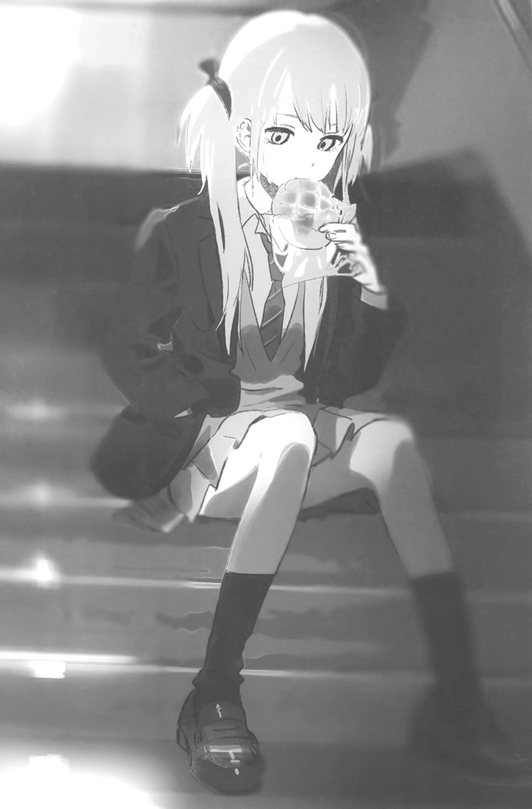還是回家吧。
就算待在學校，也只會覺得痛苦。再說，就算我不在，也不會有人傷心。甚至有不少人會感到開心。例如小椎、汐，還有……紙木。那傢伙一定在心裡笑我活該。至於夏希，應該也會鬆一口氣吧。
可惡。每個人都看不起我。
臉頰突然有點發癢。我伸手一摸，是水珠。啊啊……真是遜斃了。只不過稍微鬆懈，就變成這樣。
為了掩飾悲傷，我專心地咬著麵包。就在這時，下方的樓梯傳來腳步聲。
有誰來了。
我連忙擦拭眼角，把口中的麵包吞進肚子裡。是來抽菸的不良少年嗎？真麻煩，還是快點離開這裡吧。
我把吃到一半的菠蘿麵包裝進塑膠袋，站了起來。
腳步聲的主人出現了。
對方從下方的樓梯抬頭看我。
「總算找到妳了。」
饒了我吧。我心想。
站在那兒的，是比不良少年還惡質幾百倍的傢伙。
來找我的，是世良。
我心中警鈴大響。
別和這傢伙扯上關係。本能如此大叫。所以我在他還沒說話前，就快步下樓。可是在經過那傢伙身邊前，被他伸手擋住了。
「等一下，我有話和妳說。」
雖然我上次用盡全力打這傢伙的臉，可是現在，他臉上沒有任何痕跡。傷已經全好了嗎？不過比起那個，這傢伙難得露出正經的表情，令我很在意。
是說不管這傢伙是笑是正經，都一定居心不良。最重要的是，我不想和他說話。
「閃開。我沒有話和你說。」
「一下子就好了。」
「拜託你讓我回去……現在我不想和任何人說話。」
急著躲開這傢伙，害我不小心示弱了。真丟臉。但這樣說話似乎很有效，世良緩緩放下手。
那個有如一直在臉旁繞來繞去的蒼蠅般煩人的世良，如此乾脆地放手，實在很詭異。儘管如此，我還是沉默地向下走。
「妳的祕密……是誰告訴我的，難道妳不想知道嗎？」
我在轉角處停下腳步。
我的、祕密。喜歡汐的事。是誰，告訴世良的？
有如復燃的死灰。身體內部開始發熱。
我一直在找的犯人。背叛者。確實是我最在意的事。如果世良願意告訴我犯人是誰，當然再好也不過。可是我也明白，聽信這傢伙的話，絕對無法使情況好轉。不只如此，和他說愈多話，愈會陷在他的陰謀中。
該怎麼辦？
「我聽說真凜的事了哦。聽說她摔下樓梯？運氣真不好。而且聽說妳也在場呢。」
我正在猶豫，世良已經自顧自地在我背後說起來了。
「大家都說是妳把她推下去的。應該不是吧？」
我不置可否。
不想和這傢伙說話。儘管如此，耳朵仍然不由自主地豎了起來。
「當然，我覺得不是。雖然妳打了我兩次，但也不至於粗暴到把朋友推下樓梯。既然如此，為什麼妳身邊的人會那麼認為呢？」
世良繼續說下去：
「原因應該出在我身上。聽說復學之後，妳和周圍的人處得更不好了。是純粹因為被停學而洩憤呢？或者是因為有人說出妳的祕密，害妳開始疑神疑鬼呢……我覺得是後者，有猜對嗎？」
「……為什麼？」
這次換我抬頭看向世良。
天秤，朝著想知道的那一側傾斜。
「為什麼能說得像親眼看到那些場面似地？」
「我從A班的人那裡聽說妳和大家處不好的事。其他部分則是用推理的。我很擅長這種事呢。」
世良輕輕聳肩。
「就如妳看到的，我活得很隨興。雖然喜歡找樂子，但是這次的事，我多少覺得自己有點責任。如果不把那件事說出來就好了。我一直很後悔。對不起。」
世良低下頭，對我道歉。
那態度很不對勁。可是現在，比起那股不對勁，我更想知道犯人是誰。
「是誰？」
我走上樓梯，朝世良接近。
「把我的祕密告訴你的人，是誰？」
心臟跳得飛快。
想知道犯人是誰。如果沒有那傢伙，真凜就不會摔下樓梯，我也不會被小椎責備了。
我絕對要那傢伙好看。
世良舔著嘴唇。
「首先，不是真凜說的哦。」
……也是呢。
如果犯人是真凜，多少能減輕我的罪惡感。雖然犯人不是真凜令我有點遺憾，但是比起那個，我更因此對一直強烈懷疑她的事感到抱歉，對自己感到慚愧。
除了真凜，還有三個人。
應該不是小椎。她的可能性最低。因為她對聊八卦毫無興趣，而且對我很順從……直到昨天為止。
既然如此，果然就是另外兩人……夏希或紙木了。夏希口無遮攔，紙木很討厭我。兩人都有可能讓世良知道那件事。但如果真的是那樣，他們也有可能對世良之外的人說。那樣一來，嫌犯就更多了——
「正確地說，沒有犯人。」
世良說道：
「雖然我說是聽妳朋友說的，但那句是騙妳的。」
「……咦？」
沙沙。塑膠袋掉在地上。
騙我的？
那是什麼意思？
「我不是聽妳朋友說的，是自己發現的。我聽說妳用水壺打到汐時的情況，猜到有可能是那樣。簡單來說，就是用直覺猜的。不過在看了妳的反應之後，我想自己是猜對了。反正猜錯也無所謂，只要能讓妳產生動搖就好。我是用這種心態說出來的。」
我沒想到事情會變成這樣——世良以意外的表情說道。
我無法消化那些話。這傢伙，到底在說什麼？
為什麼，要說那種謊？
「為什麼……」
我從喉嚨擠出細微的疑問，世良有如惡作劇被識破的孩子般笑了起來。
「因為我覺得那麼說，之後的發展比較有趣嘛。」
世良的話，迴蕩在我變成一片空白的腦中。
有趣。只因為那種理由，我……
「沒有啦，我真的覺得很對不起妳哦。我是真的反省過了。不過對妳來說，這結果應該也不壞吧。因為——」
世良繼續說下去：
「——沒有任何人把妳的祕密說出去。」
也就是說。
打從一開始，犯人就不存在。
既然如此，我又是為了什麼懷疑朋友，惹怒她們，傷害她們，使她們難過呢？
「惹出這麼多事，我也很想向大家道歉啦，可是我被禁止出入A班，沒有能幫妳做的事呢。啊，不過如果在其他地方遇到A班的人，我會向他們好好解釋清楚的。這樣就好了吧。」
一點也不好。
這傢伙到底是怎樣。
「我已經把想說的話都說完了。所以我要回去了。」
世良開始向下走。
我有如被什麼附身似地，全身動彈不得。無法掌握旋繞在腦中的各種感情，呆呆地站在原地。
「啊，還有，我想這也是個教訓。」
經過我身邊時，世良停下腳步。
「就是啊——像我這種人說的話，不要當真比較好哦。」
他放完話，繼續向下走。
愉快的哼歌聲從我身後傳來。
第五節課開始了。可是腦中的雜訊仍然沒有消失。
老師的聲音完全進不了耳朵。五感變得很遲鈍，感覺自己置身在很遠的地方。又像是居高臨下地看著自己的頭頂似的。時間流動的速度也變得很模糊。通往頂樓的樓梯轉角處發生的事，明明只是幾分鐘前的事而已，我卻覺得像是好幾個小時前的事。
『像我這種人說的話，不要當真比較好哦。』
世良的話在我腦中甦醒。
真的，就是那樣。
我最後悔的，是沒有相信真凜與小椎，反而相信了最痛恨的世良的話。
仔細想想，小椎那時說的話是對的。
『而且我覺得，根本沒有人告訴世良……』
真凜也說過。
『不要相信那種沒憑沒據的話才是最好的。』
為什麼，不相信朋友們的話呢？
為什麼，相信了世良的話呢？
『妳只是一直全力逃避對妳不利的事而已。』
小椎好像是這麼說的。
那個時候，我覺得自己被戳到痛處。可是仔細想想，那說法很怪。如果我真的逃避對自己不利的事，那我就不會相信世良的話了。
……啊。原來如此。我弄反了。
因為對自己不利，所以才會過度反應。想盡快去除對自己而言是異物的部分，甚至不惜使出強硬的手段。
所有才會有如今的報應。
就是這麼簡單的因果關係。
『話說回來，以後要怎麼辦？』
我對自己發問。
該怎麼辦。完全不知道。只要向真凜還有小椎道歉就可以了嗎？那麼做的話，她們會和我和好嗎？不可能。關係已經無法修復了。之前做了太多錯事，已經覆水難收了。我做的事一定已經傳到其他班級，早晚會傳到老師那裡。再也沒有人會理我了。
我的高中生活，完了。
今後我會一直被人在背後指指點點，直到高中畢業，都過著孤獨的校園生活。我不想變成那樣。乾脆去很遠的地方好了。想去沒人認識我的地方，重新來過。高中畢業後，我一定要低調地生活。不和其他人發生衝突，不把別人當白痴，就算有不順心的事，我也不會攻擊別人。交新的朋友，不恨任何人，過著寧靜的生活。我一定要那麼做。只要忍耐，撐過這段時間就可以了。離畢業為止，還有一年多……啊，得忍受這種悲慘的狀態一年多嗎？騙人的吧……
『沒辦法。誰叫妳做了那麼多破事。』
我知道。不要再說了。
『全都是妳的錯。』
閉嘴。
不要一直在腦中說話。拜託妳安靜一點。
不管做什麼，都無法停止負面思考。後悔與悲愴不斷湧上。
好難受。心悸使我趴在桌上，用力抓著胸口。呼吸的速度愈來愈快。吸不到空氣。雖然不是在水裡，可是有溺水的感覺。眼前的景象，變得模糊不清。
『不如乾脆被退學算了。』
啪。有如配電箱的開關跳脫似地，腦中的雜訊全部消失了。
呼吸也恢復平順。
我抬起頭。
我知道自己該怎麼做了。
很簡單。
「老師。」
我舉手。
「我想上廁所。」
「好。」歷史老師點頭。
我起身，走出教室。
現在是上課時間，走廊上空無一人，很安靜。再加上陽光照射在靠教室的一方，走廊的空氣因此很涼冷，使感官變得敏銳。
原本混亂至極的頭腦彷彿不曾混亂過似地，清醒到驚人。而且心情也前所未有的沉穩。沒有憤怒，沒有悲傷，也沒有後悔。如今，我心中只有完成某件事的覺悟。
我走進D班的教室。
「如果是自動詞，這裡要加上ing——咦？西、西園同學？」
包含老師在內，D班的人全都看向從後門走進來的我。花不到三秒，我就從人群中找出目標了。放眼整個D班，染髮的學生只有一個人。
我在眾人的注目下，朝著坐在教室中央的世良前進。
「那、那個～西園同學，現在是上課時間……」
我對老師的話充耳不聞，停在世良面前。世良坐在椅子上，抬頭看著我，臉上沒有半點驚訝之色。明明是如此不合理的情況，他卻紋風不動，有如見到朋友來自己家似地，臉上甚至掛著淺笑。
「妳有什麼事呢？亞里沙。」
「……男生啊——」
我一面觀察世良的破綻，一面繼續道：
「很喜歡幻想自己單槍匹馬打敗闖入班上的恐怖分子吧？」
世良眨著眼睛，「唔——」地沉吟起來。
「我想這因人而——」
就是現在。
我把全身的體重放在拳頭上，朝著世良的臉擊去。
世良從椅子翻倒在地上，英文老師尖叫起來。教室如被戳的蜂巢似地嗡嗡作響。坐在世良附近的學生們急急忙忙地起身後退，與我保持距離。
我很冷靜。
如明鏡般映照出青空的湖面，心中沒有任何感情的波動。
自己正在做什麼，接下來要怎麼做，結束之後會有什麼結果。我是在理解一切的情況下動手的。沒有猶豫也沒有快感。我只是客觀地看著自己。
仰天摔倒的世良，挺起上半身。鼻血如打開的水龍頭似地流下，染紅了領子。儘管如此，他還是笑著，比剛才更愉快了。
「喂喂喂，妳真的很瘋耶！」
我朝世良的肚子重重踏下，世良發出青蛙被輾似的聲音。我跨坐在他身上，繼續揮拳毆打他的臉。
毆打，毆打，再毆打。
強行拉開阻擋在臉前的手臂，張嘴狠咬想拉住我的手掌。拳頭關節的皮膚綻裂，火辣辣地，刺痛不已。儘管如此，我還是不斷揮拳。
「等、一、咯，呵，哈哈，哈哈哈哈！」
世良一面被毆打，一面放聲大笑。
周圍的男學生把我拉開，壓制住我。
其他老師跑進教室。
儘管如此，我還是很冷靜。
認為自己很冷靜。
✽
「是自暴自棄，還是得了憂鬱症？」
放學後，我聽到班上有人這麼說。
西園打人的事鬧得很大，其他班級也暫停上課。A班的歷史老師聽到吵鬧聲離開教室看情況，過了十分鐘，還是沒有回來。
第五節下課後，D班的學生來到A班，告訴我們原委。
——西園突然走進D班教室，二話不說地把世良當沙包狂打。
雖然難以置信，可是西園說要上廁所離開教室後，就沒有回A班了。至於世良，則被送到醫院。如此一來，就沒有懷疑的餘地了。
為什麼要做那種事……
西園應該也知道自己沒有退路了。如果不是基於毀滅衝動，應該不會特地在上課時間去打人。因為很有可能被退學。
難道說，那就是她的目的？
今天的西園，從一早就很奇怪。該怎麼說呢……彷彿被逼到走投無路似的。雖然有明顯的黑眼圈，可是眼睛睜得很大，有如在眼皮上貼了膠帶。不小心接近的話，似乎會被她身邊的什麼彈開。感覺很危險。如果西園是想被退學而做出那種自暴自棄的事，那就合理了。
不，可是，想被退學……究竟發生了什麼事，讓她產生那種想法呢？是我想太多了嗎？
「紙木同學。」
收拾好書包的星原來到我座位前，汐也在。
「回去吧。」
「哦，好。」
我中斷思考，起身把書包掛在肩膀上，三個人一起前往走廊。
直到抵達鞋櫃區為止，我們聊著英文作業、歷史小考等可有可無的話題。沒有人提起可稱為大新聞的西園打人事件。我和星原很有默契地，不在汐的面前提到西園的事。
可是……那個時候，汐有什麼想法呢？
雖然我不打算提起西園的事，但還是很在意。星原應該也一樣，她從剛才起就一直毛毛躁躁的，不停偷看汐的表情。
我們抵達鞋櫃區，見到真島靠在走廊牆邊。「唷～」發現我們，真島舉起沒上石膏的左手打招呼。星原也抬手回應，小跑步地跑到她身邊。
「妳在等人嗎？」
等人的話，應該是等父母吧。畢竟手那個樣子，沒辦法騎腳踏車上下學。說不定是由父母接送。
「啊——是啊。我在等亞里沙。」
「咦？亞里沙……？」
星原的表情有點緊張。
「因為亞里沙的鞋子還在鞋櫃裡，所以我想她應該還沒離開學校。我想在回家前和她說說話。」
「哦，這樣啊……」
雖然星原裝成不在意，但看得出她很在意。「妳想和她說什麼？」她猶豫了一下，發問。
「唔，很多呢。今天發生的事，還有昨天的這個。」
真島說著，低頭看向吊著三角巾的自己的右手。
「哦～……」星原慢吞吞地回應著，偷眼看著汐。她想和汐一起回去，可是又很在意西園的事。眼中浮現掙扎之色。汐似乎也發現了，無奈地嘆氣。
「在意的話，妳就一起留下來等吧。我先回去了。」
「嗯，對不起……」
「沒必要道歉啦……」
汐說完，看向我說：「走吧。」
「嗯，好……」
儘管滿心牽掛，我還是與汐一起走向鞋櫃。
老實說，我也很想留下來。可是不能讓汐一個人回去。只好先忍著好奇心，等明天再問星原詳情吧。
可是……
如果西園直接被退學，今後就失去和她說話的機會了。雖然我對她沒有什麼感情，但還是會覺得很不舒坦。就算我不想和那傢伙扯上關係，也不至於希望她被退學。
來到A班的鞋櫃時，我發現汐一直盯著我。
「怎、怎麼了？」
「……你也很在意嗎？」
真、真敏銳。不對，是我太好懂了。可是，我不能老實承認。
「完全沒有。西園的事怎樣都沒差……我們快點回去吧。」
我說著，伸手想拿出鞋子，可是手指什麼都沒摸到。原來我摸到別人的格子了。我到底在幹嘛啊。
汐又看著我，眼神中帶著責備。不行，只好招了。
「……對不起，其實我也有點在意。但我不是擔心西園，只是想知道結果。再說，自暴自棄的西園可能對星原她們動粗——」
「我知道。我也留下來吧。」
汐打斷我的話，看來有點不高興。我緊張了起來。
「還、還是回去吧！仔細想想，我和她又無話可說。而且我想起來了，晚餐的白飯還沒煮呢。」
「不必在意我。反正我也有話想和她說。」
說完，汐走回星原與真島那兒。
我對自己的好懂感到懊惱。邊自我反省邊追了上去。
星原與真島正在聊天，我與汐也加入其中。星原本來有點顧慮汐，不過聊到後來，就不再那麼小心翼翼了。
放學尖峰時間已過，鞋櫃區沒什麼人，感覺很清閒。太陽的位置愈來愈低。
「對了，妳要怎麼回去呢？」
星原向真島發問。
「搭公車。雖然不是不能騎腳踏車，不過還是有點危險。」
「是啊。右手不能使用，很不方便呢～如果妳在家沒事做，可以打電話找我聊天哦。」
「哦，好耶。但我還是會去社團，應該閒不下來哦。因為我是隊長嘛。再說就算不能投球，還是可以做指示。」
「這樣啊，不愧是真凜。」
星原佩服地說著，「哦～」我也發出有點愚蠢的佩服聲。
「想像不出來妳做指示的樣子呢。」
「嗯？你小看我嗎？先說，我在女子軟式棒球社裡的形象是參謀哦。」
「咦～參謀～？」
與真島平常給人的開朗形象完全相反。我差點笑出來。但真島的敏銳度不輸汐，所以應該沒有加油添醋吧。
「我可是會和教練一起想戰——啊。」
真島發現什麼似地叫了一聲，看向我身後。
我回頭一看，見到西園與一名不認識的女性從走廊另一頭走了過來。
四人緊張了起來，原本和樂融融的氣氛一下子煙消霧散。我屏住呼吸，等那兩人走近。
西園低著頭，蹣跚地走著。身邊的女性長得與西園有點像，應該是她媽媽吧。兩人的步伐都帶著深深的疲憊感。
「亞里沙。」
真島出聲呼喚。
西園抬頭，原本就昏暗的臉又罩上一層陰霾。
「……真凜。」
「啊，小凜……還有小夏。」
「謝謝妳們平常那麼照顧亞里沙。」兩人來到我們面前，西園的媽媽對星原與真島道謝。「不會不會。」星原她們一起說道。
在近處一看，這位媽媽果然長得和西園很像，特別是眼尾眉稍，都有點神經質的感覺。她的眼睛下方有淡淡的黑眼圈。
「咦？小凜，妳的手怎麼了？」
「啊，這個啊……因為從樓梯摔下去了。」
哈哈……真島苦笑。
「吶。」西園對媽媽開口：
「妳先出去吧。」
「咦？是可以……但等一下還要去醫院道歉，所以要快一點哦。」
媽媽穿上放在地板的鞋子，走出鞋櫃區。見她遠到聽不見對話後，西園看向我們。
「……你們為什麼在這裡？」
聲音與態度都不再帶刺，而且有點畏縮的感覺。
先不管討不討厭她，見到平常強悍的人脆弱的模樣，使我有點受到衝擊。真島更是對消沉成這樣的西園感到困惑。
「我們在等妳。那個……怎麼樣了？」
真島小心翼翼地發問。
「什麼怎麼樣？」
「比如停學，或是其他的。」
西園垂下眼簾，握住自己的手臂。就在這時，我總算發現她的雙手都纏著繃帶。有如拳擊手的綁帶似的，連手指根部都纏起來了。包紮……難道是打世良時受的傷嗎？傳聞似乎是真的呢。
西園看著空無一物的場所，安靜地說：
「我被退學了。」
「咦……」
真島說不出話。
我和星原的反應也差不多，只有汐冷淡地聽著。
雖然隱約猜到會是這樣，但是聽西園親口說出來，還是被那沉重的事實壓到出不了聲。不過這也是當然的結果吧。才剛復學，就又犯下令人懷疑是不是聽錯了的暴行。依世良的情況，別說停學或退學了，說不定還得通知警察。
「……不過——」
西園仍然看著遠方，繼續說著：
「到第二學期結束為止，先留校察看……如果想法還是沒變，就正式退學。」
簡單來說，是判了緩刑吧。對照西園做的事，這懲處已經夠寬大了。伊予老師肯定努力為西園說情。
「也就是說，還沒完全確定呢。太好了……」
就在真島鬆了一口氣時——
「我不會再來上學了。」
西園直接地表示。
「咦？為、為什麼？」
「……我已經，什麼都不想做了……對所有事情都累了。再說，我不來學校，對大家都比較好。」
「沒有那種事。」
「用不著顧慮我。妳也很清楚。」
西園仍然不看任何人，就連鎖定焦點都很累似的。儘管如此，她還是和我們說話，表示她有想傳達的事吧。或者因為這是最後了，為了消除罪惡感，所以陪真島說話。
西園垂下視線。
「我啊，不管和誰相處，到最後都會討厭起對方。總是立刻忘記別人的優點，只記得對方不好的部分。因此懷疑別人，把不滿發洩在周圍的人身上……最後毀了一切。像我這種只會以扣分的方式和其他人相處的人，不在最好。」
「沒有那種事。」
真島以比剛才更大的音量，重複同樣的話。
「我們不是從國中起，就一直在一起嗎？雖然最近有點疏遠……但是只要好好溝通，還是能重新和好的。只要確實地向大家道歉，一點一點地恢復信用的話……」
真島的聲音愈來愈小。
因為，西園放棄一切似地搖頭的模樣，使真島無法把話說完。
「我已經，沒有那種力氣了。」
西園嘆著氣說。
「從小，我就一直逞強。不想輸給任何人，不想被他人看不起。所以我鍛煉自己的口才和膽量，不讓任何人看到我的弱點。可是，那種方法，到頭來只會讓自己心累，什麼都得不到……」
呵。她自嘲地笑了。
「一直以來，我到底在與什麼戰鬥呢？」
那模樣太可悲，使我差點別過頭。
鞋櫃區陷入沉默。沒有任何人說話。冷風從出入口灌入，微微搖晃著西園的裙子。
我似乎見到了某種下場。傷害他人的話，那些事最後一定會反饋到自己身上——我想起伊予老師以前說過的話。西園一直表現出歧視的態度，壓制看不順眼的存在，如今即將被自己犯下的過錯壓垮。
那也是當然的。但是又有點可憐。兩種心情同時出現。使我不知道能對西園說什麼。
原本如貝殼般抿著嘴的西園，緩緩嘆了口氣。
「……真凜，我有話要對妳說。」
只見西園用力握拳，也許在填充力氣吧。明白西園的情況，真島露出前所未有的認真表情，等著西園說下去。
西園像是準備做出重要的告白似地深深吸了一口氣，五官變得扭曲。
「對不起……」
她以發顫的聲音道歉。
「那個時候推了妳，對不起。對妳很冷淡，對妳說了很過分的話，對不起……」
淚珠不斷從西園眼中落下，鼻子泛紅，聲音變得哽咽。
「妳明明受了那麼嚴重的傷，還是幫我說話。可是我卻找藉口幫自己開脫，對不起……除了這些，我還做了很多讓妳不高興，或讓妳覺得困擾的事，可是完全沒有道歉。妳明明這麼顧慮我，但我最後還是逃避了，對不起……我也知道現在道歉，已經太遲了，妳也不會原諒我，可是，可是，我還是想道歉，所以……」
「我原諒妳哦。」
真島從口袋拿出手帕，如母親般擦拭西園淚溼的眼角。
「我知道妳一直在逞強。我該早點阻止妳的。沒有關係，只要以後對其他人友善就行了。一定來得及的。因為我跟亞里沙都才十七歲……」
「……不可能的。」
西園抽抽噎噎地說著，緩緩推開真島的手。
「就像剛才說的，我已經沒有那種力氣了……因為這是最後，所以才有辦法努力擠出力氣……」
「可是……」
西園以自己的袖子擦眼，看向汐。
「……汐。」
「……！」
也許沒想到會被點名吧，汐訝異地睜大眼睛。可是只有短短一瞬。表情再次從他臉上消失。眼中沒有感慨或哀憐，只有無機質的光芒。
「我也對你做了很多很過分的事。世良說的……是真的。可是，那不能當成我做那些事的免罪符。我一直在踐踏對你重要的東西，真的，很對不起。」
西園深深低頭鞠躬。
雙馬尾垂直地向下垂，見得到她的頭頂。
沉重的沉默降臨在鞋櫃區。運動社團的吆喝聲遠遠地從操場傳來。汐一直沒有說話，西園也一直沒有起身。
最後。汐無奈地嘆了口氣。
「把頭抬起來吧。」
西園起身。抬起頭的瞬間，原本累積在眼眶中的淚水，從雙眼滑落。
「不好意思……我沒辦法原諒妳。但是我也不需要妳的補償。只要妳別再對我做什麼，今後妳想怎麼做都隨便妳。」
西園咬著嘴唇，彷彿在忍受痛楚似地。
這樣就好。我心想。
西園對汐做的事，與真島的事完全無關。就算真島原諒西園，不等於汐也該原諒她。其他四人應該也明白這個道理吧，所以沒有人責怪汐。
「……對不起。」
西園再一次道歉，看向星原。
「……我也要向夏希道歉。我對妳說了很多過分的話，妳明明一直對我很溫柔，可是我完全沒有回報妳。對不起。」
「沒有關係啦……」
星原的回答中帶著鼻音。眼眶泛淚，還稍微流了一點鼻水。
她原本也是西園小圈圈中的一員，雖然因為汐的事，與西園之間出現了無法填補的鴻溝，但曾經是好朋友的過去不會改變。星原很溫柔，如果汐不在這裡，她可能會更奮不顧身地阻止西園吧。
「我才要向妳道歉。我把妳的祕密，告訴了紙木同學。對不起……」
「……那件事已經無所謂了。是我起的頭，所以妳才……」
西園嘶嘶地吸著鼻子，緩緩朝我看來。
「……」
「……」
「……還有紙木，對不起。」
剛才的沉默是怎樣……
不，其實我也很清楚。說真的，我沒有那麼重要。我有自覺。雖然我曾和西園吵架，也被她踢過，但也不到需要這樣道歉的程度。可是在這種情況下，唯獨不對我道歉，就西園而言也不是好的收尾吧。應該說，是出現在這種場面的我不好。
「沒差啦。我的部分沒什麼。」
西園完成任務似地深深呼出一口氣，轉身背對我們。
「那我回去了。」
「等、等一下啦。」
真島連忙制止。西園停下腳步，但沒有回頭。
「妳真的不來學校了？」
「不來了。」
「如果退學的話……妳的學歷就只到國中而已哦？別說上大學了，連將來找工作都有困難。至少該念完高中吧。」
「想升學的話，可以上函授制的高中。再說高中不是義務教育，沒必要勉強自己上學。」
「不，可是……不上學的話，就沒辦法和朋友製造回憶了哦……」
「那種事無所謂。」
「不上學的話，會很閒哦。也許一開始會覺得很棒，但是久了就會無聊了。」
「那我就去打工。」
「既然——」
「已經夠了吧……」
西園以厭煩的表情回頭。
「為什麼要那樣拚命阻止我？我這種人在不在，根本無所謂吧。老實說……我們又沒有要好到那種程度……」
「……妳還記得我們變熟的原因嗎？」
真島突然提起不相關的話題。她無視訝異的西園，以懷念的表情說下去：
「國二時，妳不是趕走了糾纏小椎的傢伙嗎？小椎不用說，其實我也很感謝妳哦。」
以前在餐廳時，聽椎名說過那件事。西園以木製三角尺打退糾纏椎名的不良少年的勇者傳說。
「當時的我，除了聽小椎訴苦，什麼都做不到……所以很難受哦。就算告訴老師，也解決不了任何問題。在那種情況下，妳突然出現，救了小椎。我真的覺得妳很像英雄。」
「……」
「因為我真的很喜歡小椎，所以保護了小椎的妳，對我來講也是恩人。所以我才會想阻止妳。就算妳走錯路，過去救了小椎的事實，也不會改變。」
「……就算妳那麼說——」
西園以苦悶的表情按著胸口。無處宣洩的感情，使她的眼神動搖。
「過去的事已經過去了。既然妳覺得我是恩人的事不會改變，那麼小椎不原諒我的事，也不會改變……如果我明天也來上學，該用什麼表情面對小椎……」
「我怎麼了？」
西園身體一顫。我也稍微吃了一驚。
不知何時，椎名出現在不遠之處。也許社團剛下課吧。她走到我們身邊，將雙手交叉在胸前，露出冰冷的表情，有種高壓的感覺。
「小、小椎……」
西園畏縮地說著。
與過去完全相反的構圖。對現在的西園來說，椎名似乎非常可怕。只見她目光游移，沒自信地縮起肩膀。
「對不起。其實我已經來一陣子了，可是找不到機會出來，所以一直在走廊轉角聽妳們說話。既然聽到自己的名字，就只好出來了。」
立刻出來不就好了……我心想，不過想想今早的場面，又覺得也難怪。椎名應該還很恨西園吧，可以明白她不想露面的心情。
「妳從哪裡開始聽的？」真島發問。
「從亞里沙說被退學開始。」
「那不就等於從一開始就聽了嘛……」
椎名咳了一聲，以凌厲的眼神看向西園。
「然後呢？妳有什麼想說的嗎？」
「那種事……就算不說，妳也知道吧……」
「不知道。雖然我看起來很淡定，但其實什麼都沒想。」
那是以前西園在體育館後方對椎名說過的話。椎名似乎還在記恨。雖然只是還以顏色，可是對現在的西園，似乎很有效。只見她尷尬地垂眼，沉默不語。
「妳沒說的話，我怎麼知道？」
椎名追擊。西園認命似地開口：
「我沒有臉見妳。」
「然後呢？」
「……我對妳，說了很多過分的話。妳明明那麼敬重我，可是我卻沒有信任妳到最後。最重要的是……」
西園眼中再次浮起淚膜。
「我傷害了妳最重要的朋友，對不起……」
從剛才到現在，西園說了好幾次的「對不起」。但是每一句對不起都很沉重。至少我是這麼感覺的。
那重量，會打動椎名嗎？
既然椎名幾乎從一開始就聽到我們說話，西園的道歉，她應該全聽到了。也聽到真島原諒西園的部分。
椎名鬆開盤在胸前的雙手，但表情沒有變化，對西園說道：
「這不是道歉就可以算了的問題。」
「……」
被嚴苛的現實打臉，西園痛苦地咬著嘴唇。
「國中時，妳幫過我，是我的恩人。可是這次我沒辦法就這麼算了。雖然真凜人太好，所以原諒妳……但是只有道歉的話，我是不會原諒妳的。」
「我說啊……」
真島插嘴。
「受傷的是我哦。本人都不介意了，妳就原諒她嘛。」
「不行。」
椎名立刻拒絕。雖然不是真島的父母或家人，卻還是這麼堅持，表示對椎名來說，真島就是這麼重要吧。但話雖這麼說，椎名應該不會要求西園退學才對。
她究竟希望西園怎麼做呢？
「我啊，想用推甄的方式上大學。」
椎名突然說起無關的事，西園不安地垂下眉尾。
「但光看現在的校內成績，我覺得不太安全。所以我想參加伊予老師說的志工活動加分。可是一個人去，又覺得有點不安。」
椎名的表情稍微緩和了下來。
直到這時，我才發現，椎名的眼角有點紅，看起來像用力擦拭過似的。難道……？
「如果妳和我一起參加……我就原諒妳。」
西園訝異地睜大眼睛。
「那……那樣就行了嗎？」
「不想參加的話，直接退學也我無所謂哦。」
「不……我……」
西園困惑了。她顫抖著嘴唇，似乎在尋找回答的句子時，一道眼淚從臉頰滑落下來。西園連忙擦掉眼淚，可是眼淚不斷流出，呼吸也變得不順。最後，西園放棄保持體面，開始大哭。
我想，椎名其實已經原諒西園了。可是在真島面前，不能簡單地接受道歉，所以才提出當志工的事，給西園贖罪的機會。雖然早就知道真島是濫好人，但其實椎名也差不多。
「我……參加……」
西園以帶著鼻音的語氣回道。真島與椎名朝她走近，星原也是。
被三人安撫的西園，完全感覺不到過去的高壓，有的只是純粹的脆弱。但是那脆弱中，帶著依附在身上的東西掉落後的安穩與精神上的寬裕。
西園總算能終止戰鬥了。
西園戰鬥的對象，不是世良也不是汐，當然也不是真島或椎名，一定是她自己。雖然說這種事很常見，可是這世上真的有許多無法發現自己心魔的人。說不定我也是這樣。雖然西園不知道有沒有那個自覺，但是既然有真島和椎名在，應該就沒問題了。
我看了身旁的人一眼。
汐正努力忍住不耐煩的呵欠。
這樣就好。我心想。
✽
西園表露自己脆弱的當天晚上。
晚上快八點時，我騎著腳踏車，在與河川相鄰的道路上前進。
成為非法棄置地點的河床，變得比以前乾淨。志工已經開始活動了嗎？以為會永遠待在那裡的巨大垃圾被撤走了，上游方面的草地也開始修剪。今後西園與椎名也會加入清掃的行列吧。
這座城市，在很多方面都被忽視了。我一直這麼想。
就算髒兮兮的也莫可奈何。因為這裡就是這樣的地方。名為椿岡的城市，被蓋上了這樣的烙印。
可是，仍然有人希望這座城市能變乾淨。不論基於什麼樣的動機，那些人身體力行，確實地美化了這裡。說不定有一天，真的可以在椿岡見到螢火蟲吧。
我離開與河川相鄰的道路，照著訊息中的指示在住宅區前進，最後停在某棟兩層樓的獨棟住宅前。
我撥打電話。
「我到了。」
『辛苦你了，我現在就出來。』
通話結束。
大約三分鐘後，把我叫到這裡的人物從玄關走了出來。
那人披著厚厚的針織衫，有一頭及肩的黑色頭髮，以及在路燈的映照下，顯得很健康的小麥色肌膚。
真島凜朝我走來。
「不好意思啊——讓你特地過來一趟。」
「沒關係啦。」
收到真島的訊息，是離開學校後不久的事。『我有話和你說』，後面還加上表符。突然收到這樣的訊息，我感到很迷惑，回問是什麼事，但只得到『詳細的內容等見面再說』的回應。
「邊走邊聊吧。我說要去便利商店買東西，結果被爸媽罵說都骨折了，不要到處亂跑。」
真島嘿嘿地笑著。可以見到針織衫底下的三角巾與白色石膏。
我推著腳踏車，走在真島身旁。
兩人在安靜的住宅區內走著，不知何處傳來誘人的香味。是哪家在吃遲來的晚餐嗎？雖然我已經吃飽了，但還是忍不住分泌起唾液。
「要聊什麼？」
我發問。
「你覺得呢？」
「完全猜不到。」
「要好好動動腦啊。」
非在這種時間找我出來不可的原因，我完全想不出來。不能在學校說嗎？所以是不想被其他人聽到的話題？如果是這樣……
「……告白嗎？」
「咦？好噁。」
真島笑著否定，我有點想死。
我當然不是認真的，只是突然想到這種可能性而已。雖然我也覺得這回答有點噁，可是，就算是這樣，也不必真的說出來啊。話語是會傷人的……
哈哈……我只能以乾笑掩飾自己的消沉。真島以沒受傷的那隻手拍著我肩膀。
「對不起對不起，剛才只是以牙還牙而已。你不要在意。」
這叫以牙還牙……嗎？雖然我覺得用錯地方了，但還是別繼續深思了吧。
「再說，仔細想想，這也算是告白沒錯。」
「咦……？」
「紙木，你是口風很緊的人嗎？」
雖然臉上掛著友善的笑容，可是真島的眼神很認真，不是基於開玩笑才問的。所以我也認真回答。
「……這要依情況而定。如果保持沉默會害其他人困擾，我就無法保證不會說出來。」
「是嗎？不過反正我本來就決定要說了，所以不管你口風緊不緊，都無所謂啦。」
「那就不要問那種問題啊……」
「總之當成前言吧，因為這算很重要的事。」
雖然真島本來就有點難以捉摸，可是這次特別猜不透她的想法。她究竟想說什麼呢？
「你知道我的手骨折的原因嗎？」
「不是因為從樓梯掉下去嗎？因為西園推——不對，是不小心摔下去的。」
我連忙訂正。雖然傳聞都說成是西園推下去的，但既然真島說是「意外」，就算那是為了保護西園才使用的說法，在真島面前，還是要採用才行。
「其實不是那樣哦。」
我瞪大眼青。
所以說，傳聞是真的了？太了不起了，明明被西園推下樓梯，卻仍然那麼為西園著想，我不由得感到敬佩。溫柔到那種程度，簡直是聖人——
「我是故意摔下去的。」
……
呃。
我聽錯了嗎？我不由自主地停下腳步。
一拍後，真島也停下腳步，朝我看來。路燈在她腳下製造出深深的黑影。雖然她的表情很平穩，但是我覺得有點發寒。
「但骨折就不是意料之內的事了。雖然電影常有摔下去的場面，可是外行人果然不能隨便模仿呢。不但骨頭裂了，而且痛到想哭。我再也不要那麼做了。」
我沒聽錯……嗎？
理解到這點的瞬間，我腦中充滿疑問。
「為、為什麼……？」
我發問，真島再次走了起來。我連忙追上，走在她身邊。
不知道真島想去哪裡，我只顧著專心聽真島說話。
「因為我不能放著亞里沙不管。繼續那個樣子，亞里沙真的會走錯路。可是不下猛藥就治不好她。」
真島直視著前方。
「之前，亞里沙不是以水壺砸到槻木嗎？那件事對亞里沙來說，似乎是很大的衝擊。所以我想這招應該最有效吧，因此在與亞里沙爭論時，我靈光一閃，就學了一下，引誘她推我。」
引誘西園推自己。
真島說的話，沒有真實感。地面似乎浮動了起來，感覺很不愉快。
「雖然因此骨折，而且害世良被打。但是就結果來說，算是成功了吧。不過對世良來說，那也算一劑猛藥吧，這樣一來，以後他就不會隨便接近亞里沙了。」
「……等一下。」
我按捺下各種感情，問出最想問的問題：
「為什麼要做到那種程度？」
「為什麼嗎？當然是因為——」
真島理所當然地說道：
「亞里沙很可憐啊。」
「可憐……？」
「之前不是說過嗎，看到在教學觀摩日時大哭的亞里沙，覺得她很可憐。她啊，雖然總是表現得很強勢，但其實特別害怕寂寞。現在也一樣。所以要有人好好看著她才行。」
「……因為覺得她很可憐，所以故意摔下樓梯嗎？」
「我剛才不就是這麼說的嗎？」
真是的——真島不高興地嘟噥著。
現在和我說話的人，真的是真島嗎？
是有點淘氣，喜歡虧人，但不會因此討厭她，很為朋友著想，意外地敏銳，願意和我這種邊緣人說話的，開朗又溫柔的那個真島嗎？
雖然是同樣的臉，同樣的聲音，同樣的說話方式，可是就像不同人在說話似的，使我覺得詭異。
吶，真島。
妳做的事，不是出於友情或善意——
是出於支配吧。
我們走出住宅區。真島走進便利商店，我也跟著進去。
真島在點心區拿了杯裝的提拉米蘇，到櫃檯結帳後，以左手拎著塑膠袋，走出便利商店。待在店裡的時間不到三分鐘。我則提不起勁買任何東西。
我們踏上回程。
「為什麼要告訴我這些？」
冷靜思考後，我浮起這個疑問。
把祕密放在心裡不是很好嗎？告訴我這件事，只會讓我對她感到失望而已。真島應該預料得到我的反應吧。而且事實上也是這樣。
「你很愛問『為什麼』呢。這種說話方式會被女生討厭哦。」
「……一定會在意的啊。為什麼找我說這些？」
「之所以找你，沒有什麼重要的原因。硬要說的話，就是用消去法吧。告訴小夏或小椎的話，如果不小心被亞里沙知道，後果會很可怕。說不定會像世良一樣被暴打吧。但是告訴其他人，風險就更高了。你的話距離不近不遠，剛剛好。而且就算你把這些告訴亞里沙，她應該也不會相信你。」
距離不近不遠，剛剛好。雖然就字面看來，是正面的話語，但又能痛切地感受到，自己不在真島的朋友範疇之內。
「還有就是……該怎麼說呢。」
真島的語氣含糊了起來。
「一個人背負著這些，有點沉重吧。所以打算把一些重量丟給你。」
真島捉弄人似地嘻嘻笑著。
毫無疑問，那是假笑。我能從語氣中感受到掩不住的罪惡感。
「……這樣啊。」
由於我沒有責怪她的念頭，所以只是安靜地應聲。
今天傍晚，在鞋櫃區見到的，真島與西園和好的場面，是那麼美麗。西園痛改前非，雙方盡釋前嫌，完美地修復了原本破裂的人際關係。但那是建立在真島的謊言上的結果。
——善意與笑容的背後，充滿心機。
過去，我一直把這句話牢記在心。雖然最近忘了，可是如今，又明確地想起來。
這句話，說不定是真理。
……可是。
就算說了謊，就算不誠實。
只要大家能變得幸福，就無所謂了吧？
「吶，紙木。」
真島朝我看來。
「你啊，不能對小夏或槻木說謊哦。不重要的小謊就算了，被揭穿的話會毀了一切的那種大謊，不管基於什麼理由，都絕對不能說哦。」
「……妳居然說的出這種話。」
「嗯。」
因為啊——真島繼續說道：
「你太不會說謊了。」
說完，她笑了。
那是捉弄人時的笑法。
是我熟悉的、平時的真島的笑法。
✽
早上八點，通學路上瀰漫著焦臭味。應該是哪邊的田地在燒稻草吧。我盡可能地將呼吸放淺，用力踩著腳踏板。
進入椿岡高中的大門，「早！」體育老師很有活力地揮手向我打招呼。「早安。」我小聲地回應。
我停好腳踏車，從鞋櫃區進入校舍，在走廊上與談笑的學生們擦身而過。抵達A班教室時，班上已經來了約三分之二的學生了。雖然室內沒有暖氣，外頭也不是特別冷，可是教室的感覺就是比較溫暖。離寒假不到一個月了，大家都開始鬆懈了。
與昨天早上一樣，許多人圍繞在真島身邊，而且比昨天更熱鬧了。仔細一看，椎名與星原，連汐都在其中。他們似乎正在真島的石膏上留言。
「小夏，妳寫錯字了。」
「咦？真的嗎？哪裡哪裡？」
「這裡，康復的復是彳字旁哦。」
「彳字旁……要怎麼寫？」
老師不是有教過嗎？真島吐槽後笑了。我也跟著笑了起來，邊笑邊走向自己的座位。
還沒見到西園。
預告鈴響起，教室逐漸安靜下來。大部分學生回到自己的座位，準備第一節課的上課內容。
真島與椎名的表情開始出現不安的色彩。大部分學生都已經到校了。
離班會只剩三分鐘時——
喀啦……教室的門被緩緩打開，班上泛起漣漪般的騷動聲。
我的表情，總算放鬆。
漂染的雙馬尾，出現在視線的另一端。
「唉～今天也好累啊！」
走在身旁的星原，發出做完大工作似的嘆息。
三人一如往常地推著腳踏車回家。東方的天空已經開始暗下來了，白天時溫暖的空氣，到了這個時間，也開始轉寒，早晚溫差很大。但這種情況只剩兩週了。十二月後會正式進入冬天，變成冷一整天吧。
「非準備期末考不可了……要是考得比上次更爛，該怎麼辦？」
「妳每次都這麼說吧？」
汐取笑著，星原噘嘴。
「是真的啊～上次期中考的名次又掉下去了……」
唉～星原垂頭喪氣。
「不然來辦讀書會好了？」
「咦！？好啊好啊！」
星原瞬間恢復活力。真、真是單純。但她就是這部分可愛……
是說，讀書會啊。之前也和星原她們舉行過。那時候還有真島與椎名，西園後來也有來。雖然我和西園爭論起來……現在回想起來，還挺懷念的。晚秋的天氣，容易使人陷入感傷。
「紙木同學也一起來吧？」
「嗯？哦，好啊。」
真期待。
雖然沒有決定具體日期，但我們做了開讀書會的口頭約定後解散。星原先離開了，歸途上只剩我和汐而已。
一路上，只有腳踏車的鏈條轉動時的唰唰聲。我們之間太熟了，不需要特地找話題硬聊。在這個有如餘音的時間裡，我和汐的話都會變少，有時甚至會在分頭回家前，一句話都沒說。今天似乎也會是那樣。
即將接近我與汐分頭回家的三岔路口時。
——咦？我好像忘了什麼事？
「啊，對了。」
想起忘了什麼事的我，停下腳步。
「你和能井的比賽。還沒有想到要怎麼慶祝吧？」
「……唔，是啊。」
因為剛比完立刻碰上西園的暴亂，害我完全忘了這件事，真是對不起汐。至少該趁著星原還在時問該怎麼慶祝才對。
「你有什麼想做的事嗎？」
汐把手指放在下巴，思考起來。一秒，兩秒過去，他想到什麼似地抬起頭。
「可以去你家嗎？」
「咦？我家？可以是可以……」
去我家做什麼呢？……啊，是要在我家慶祝嗎？雖然我家不大，不過還塞得下汐和星原。這樣的話，該選哪天呢？下次的假日嗎？
「那就走吧。」
我正在腦中盤算，汐已經朝我家的方向前進了。
咦？現在去嗎？
我追了上去，困惑地窺伺汐的表情。他似乎發現了我的疑問，看向我。
「我想向彩花打個招呼。你不是說過嗎？我去你家的話，她會很高興的。」
「啊——……我的確說過呢。」
好像是有點久之前的事了。雖然想不起什麼時候說的，但是我確實有說過。可是……
「這個時間，那傢伙在家嗎……她有時會因為社團而比較晚回來。」
「啊，是這樣嗎？那還是改天吧。」
「不用啦。只是會比較晚而已。不過最晚也會在五點半前回來。是說真的只要這樣就好了嗎？可以做更奢侈的要求哦，比如請客之類的。」
「不用了。」
汐乾脆地回答。該說拘謹呢？還是沒有欲望？該不會是在跟我客氣吧？
我一面感受著失落，回到自己家。
大門是鎖著的，看樣子彩花還沒回來。我從書包中拿出鑰匙，打開門。
「不過她應該快回家了，先在我房間等吧。」
「打擾了。」汐說完。也跟著我進門。
我們走上樓，來到我房間。由於西晒，房間裡的空氣很暖。我把書包放在地板上，鬆開領帶。
「我去拿飲料。」
「嗯，謝謝。」
我下樓前往廚房。
我打開冰箱，拿出蘋果汁。雖然也有麥茶，不過暑假汐來我家時，我通常都是準備這個。我把蘋果汁倒在兩只杯子裡，回到自己房間。
「久等了。」
汐脫了西裝外套，坐在我床上。沒穿外套不會冷嗎？我心想，不過對汐來說，這樣也許比較舒服吧。他把脫下的外套仔細地摺好，放在被子上。
「謝謝。」
我把果汁放在桌上，汐拿起杯子，喝了起來。我坐在書桌前的滾輪椅上，看著喝果汁的汐。
感覺有點新鮮。
暑假時，汐幾乎天天來我家，但這是第一次穿著制服來。白色的長袖襯衫，以及裙子。裙子下方的黑色絲襪。該怎麼說呢，比起「朋友來我房間」，「有女生坐在我床上」的感覺更強烈，使我有點緊張。
呼，汐放下杯子。
一直盯著看，似乎會惹汐生氣，我連忙移開視線。
「很久沒來你房間了呢。」
「是啊……暑假之後就沒來過了吧。」
「你房間幾乎沒變呢。頂多是多了一些小說。」
「是啊。因為是讀書之秋，最近買了不少書。」
「你不再寫小說了嗎？」
汐歪著頭發問，我帶著苦笑搔著臉。
「有空的話是想寫……不過最近忙著準備考試。」
「這樣啊。如果有新作品，要給我看哦。我會說感想的。」
「下次說感想時請批評得溫柔一點。」
沒問題——汐點了點頭。
我看了看時鐘，快五點了。房間開始變暗，所以我開了燈。
彩花還沒回來。
「是說，真的只要這樣就好嗎？」
「嗯？什麼？」
「就是慶祝贏了的事。和彩花平常就能見面，你沒有其他想做的事嗎？」
「唔……有是有……」
汐有些難以啟齒地說著。
「你就說說看吧。我也想幫你慶祝，所以不用客氣。」
「那——」汐直視著我。
「抱抱。」
「咦？包包？」
「抱抱。」
「呃……是那個擁抱的抱抱嗎？」
「嗯。」
原來如此，抱抱……
咦？抱抱？
「我和你……抱抱？」
「嗯。」
汐極為認真地回答。
——才怪，開玩笑的啦。
雖然我等著汐這麼說，但他只是定定看著我。沒有解釋成開玩笑的餘地。
「咦～……？抱、抱抱啊……」
我不知道該如何反應，只好蒙混過去似地抓頭，眼神四處亂飄。明明是坐慣了的自家椅子，卻有種坐不住的感覺。
雖然說在歐美，抱抱相當於打招呼，可是日本呢？在日本，抱抱是什麼定位的行為呢？應該比牽手更親密吧，然後不到接吻的程度。但如果問和朋友之間會不會抱抱，就有些疑問了。如果是感情很好的女性朋友，似乎常有抱來抱去的行為；但不是情侶的男女，或男性朋友之間，是不會那麼做的。啊，雖然汐在日本出生長大，但他是混血兒，說不定是被父母影響，有不分性別擁抱朋友的習慣吧。如果是這樣……不對，就算是那樣，一般來說，會想和我抱抱嗎？而且話說回來，汐提出這個要求，究竟有幾分認真呢？
我正胡亂地想著這些——
「對不起。」
汐突然道歉。
「我讓你為難了呢。」
他露出帶著歉意的笑容。
我感受到內臟翻騰似的動搖。
不是「騙你的」或「開玩笑的」，而是「讓你為難了」。
這樣一來，就完全沒辦法蒙混過去了。
汐是真的想和我擁抱。而且不打算隱瞞他的心情。
「那，就來做吧。」
我脫口而出。
如果在這個時候退卻，會留下無法修復的禍根。本能如此告訴我。
我有如被什麼催促似地，走到汐身邊坐下。承受兩人份體重的床鋪發出吱嘎的聲音。肩膀與肩膀間的距離，大約有十公分。
汐坐在床上，將上半身轉過來。兩人的距離如此之近，近到能在灰色的眸子中見到我自己的身影。汐張開雙手。
既然要求抱抱，也許該由我主動抱住他才對。
心臟劇烈跳動著，走到這一步，再也無法後退。既然如此，只能前進了。
我緩緩把身體靠過去。
就在這時，咚咚，門響了起來。
「！」
我睜大眼睛，身體猛地一彈站起。
「進來吧。」
我說完，門就被打開了。
「……啊，汐、汐姊，好久不見了。」
彩花從門後露臉。臉上帶著緊張之色。她身上穿著制服，似乎剛回家。
「那個，因為我在門口看到鞋子，想說是不是妳來了……」
彩花靦腆地解釋著。雖然不是現在才開始，不過彩花和我說話時，明明那麼潑辣，然而見到汐時，總是乖得像貓一樣。
是說幸好她有先敲門。如果一聲不響地開門進來……光是想像，我就冷汗直流。會重演之前那件事吧。
「我來叨擾了，彩花。」
汐淡定地與彩花打招呼。若無其事到彷彿不曾提過抱抱的要求似的。我全身發軟，在滾輪椅坐下。沒有真實感。腦袋現在仍然很混亂。汐與彩花聊了起來，但是那些話，完全沒有進入我耳中。汐的要求，令人難以置信。至於提出那種要求的原因……不用猜也知道。
那是我一直不想面對的部分。
雖然是理所當然的事，但是沒有人會想與不喜歡的對象抱抱。
既然如此，也就是說——我無法把接下來的部分化為語言。
「那就，再見囉。」
就在我一個人煩悶不已時，兩人已經說完話了。只見彩花心滿意足地離開我房間。
門關上的瞬間，空氣再次緊繃起來。
「咲馬。」
「哦，嗯。」
我吞了吞口水。
汐起身，做出與彩花來之前同樣的動作。
……啊，他站起來了。
我也起身，轉動身體面對汐。
我還沒有做好覺悟。也許因為中斷過一次，有了思考的時間吧，比起剛才，我清楚地認識到自己的抵抗之意。不是因為厭惡，而是害怕抱過之後，會無法回頭。預感告訴我，那麼做的話，兩人之間會產生決定性的變化。而那變化是好是壞，現在的我無法判斷……不，是我想太多了嗎？又不是接吻。沒錯，只是擁抱而已，沒必要想太多。在其他國家，擁抱就和打招呼一樣，就算我們做了也……
吶——汐不高興地說：
「我手酸了。」
「啊，對不起……那就，打擾了……」
我朝汐走近，緩緩把身體貼在他身上。汐將張開的雙臂環在我背部，為了使身體更加貼合似地，在手上使勁。
嗚……
嗚哇——！我們真的抱在一起了！
好驚人。這種事……該怎麼說呢，這麼做時，大腦會分泌出某種不知名的荷爾蒙！這種幸福的感覺是怎麼回事？
我不知該把自己的雙手擺在哪裡，只好輕輕放在汐的肩頸上。汐的身體很纖細，但是很堅硬，有很多肌肉。柔順的髮絲拂過臉上，使我覺得有點發癢。
汐更加用力抱緊我。我的大腦有如被擰的溼毛巾似地，滴滴答答地分泌不知名的荷爾蒙。有種大腦的構造會因此改變似的，或者正在做某些無法挽回的事的悖德感。
感受得到汐的心跳。速度相當快。是說，這樣貼太緊了吧？不是問候程度的擁抱。一般會抱成這樣嗎？不行，我無法思考……
忽地，汐的膝蓋，闖入我的雙腿之間。
「咦？等」
……啊，不、不妙！這樣子會——
「等，等一下、不行！」
我反射動作地想推開汐，可是汐不放開我。我因此失去平衡，向後倒在床上。與我緊貼著的汐也整個人壓在我身上。肺臟受到壓迫，使我發出「嗚咕！」的呻吟聲。
兩人的樣子，就好像我被汐推倒似的。
汐的雙手撐在床上，自上而下地俯瞰著我。溼潤的眸子，彷彿在期望著什麼似的。
甜膩的香氣拂過鼻腔。除了剛才喝的蘋果汁的氣味外，還有潤絲精的香味，以及輕微的汗水味。但是除了那些，還有一種不知該不該以氣味形容，直接刺激著比鼻腔更深處的腦幹的什麼。這種感覺……之前也有過。
在通往頂樓的樓梯接吻時，也有同樣的氣味。
女人味。
「等、等一下！」
我維持著被推倒的姿勢求饒：
「怎、怎麼這麼突然……這樣有點，太急了……」
「……咲馬，你還記得嗎？」
汐以冶豔的聲音說著：
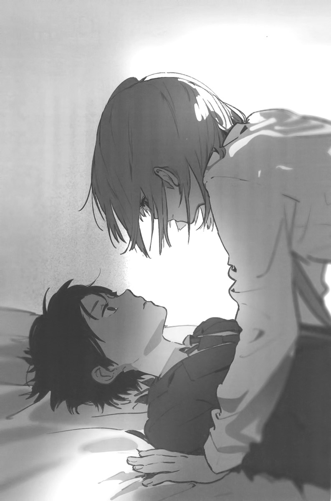「佐原學弟……來我們班，找我出去的那個一年級生。」
有如把手伸進玩具箱翻攪似地，我在亂成一團的大腦中翻找記憶。
「是那個說要找你談能井的事的……」
「其實，他不是來找我談能井的事。」
我掙大眼睛。
「他是來向我告白的。」
撲通。心臟劇烈跳動了一下。
「我喜歡你。請和我交往。他這麼說。是認識以前的我的佐原說的哦？我嚇了一跳，所以拒絕了，但其實我很開心。真的……很開心。」
他的聲音中帶著熱度。
「然後，我想起來了。」
「想起什麼了？」我問。
汐露出略帶自嘲的笑容。
「我啊，以前很受歡迎呢。」
……啊啊。
原來。我懂了。汐突然這麼做的原因。
被學弟佐原告白，壓倒性地勝過原本是競爭對手的能井，得到加害者的西園的低頭道歉。再加上文化祭時演的茱麗葉倍受注目，不分男女，吸引了許多學生。如此這般地，汐得到了其他人的認同。但是汐得到的，不只那樣而已。
還得到了自信。
汐正確地明白了自己的魅力。所以才會豁出去地做這樣的事吧。很單純的原因。想與看不見未來的現實戰鬥，自信是最好的武器。既然聰明又長得好看的汐得到自信，等於再也沒有人能妨礙他了。
——太好了。
我有點想哭。那個坐在夜晚的長椅上哭泣的汐已經不在了。不再畏懼人們的好奇眼光，也不再因周遭的偏見或嘲諷而困惑。現在的汐，已經耀眼到沒有人會覺得他可憐了。
可是……就算是那樣，眼前這個情況，我又該怎麼辦呢？話說回來，汐究竟想做什麼？難道想做比擁抱更進一步的事嗎？比擁抱更進一步的事……不不不，開玩笑的吧？
雖然被推倒，可是我的雙手是自由的。只要有那個意思，大可用力把汐推開。
我正想把雙手舉到胸口的位置——汐溼潤的眸子中，出現些許的迷惘。視線也游移了起來。
我放鬆身上的力氣。
「……我知道啦。」
如果我真心抵抗，汐說不定會失去好不容易得到的自信。這樣不行。我不想見到汐被逼到無路可走的模樣。所以，再安靜一陣子吧。
我閉上眼睛，做好所有準備。
汐的氣息與髮絲，落在我臉上。
我更加用力地閉緊眼睛。
……
什麼都沒有發生。
我正如此心想，咚，胸口傳來輕微的衝擊。我小心翼翼地睜眼，見到漂亮的髮旋。汐的額頭正抵在我胸口。
「……對不起。」
汐不抬頭地道歉。
「這種事，明明是不好的……」
話聲中帶著鼻音。
我不知道能對汐說什麼，只好把右手放在他的後腦勺上。髮絲很柔軟，頭形渾圓。他一定很認真保養頭髮吧。直到汐冷靜下來為止，我都把手放在他頭上。
過了一陣子，汐從我身上退開，躺在我身旁，一起看著天花板。頭腦逐漸清醒後，隨之而來的是虛脫感。
我們到底在做什麼啊？
「……可以告訴我一件事嗎？」
我看著天花板發問。
「你為什麼會喜歡我呢？」
我從以前就很在意這個問題。雖然不到無論如何都想知道的程度，但如果想問，只有現在了。
「沒什麼大不了的理由。」
「所以是什麼理由？」
汐翻身背對著我。
「……說出來很丟臉啦。」
「現在才這麼說？」
想想幾分鐘前的事，也沒什麼了吧？我回想著剛才的事，連自己也難為情了起來。
「……真的，沒有什麼大不了的理由。而且……總之有很多事。」
「很多事？」
汐朝我這邊翻身，以手指撥開臉頰上的髮絲，認真地看著我。
「說來話長哦？」
「沒問題。」
「……那我就說了。」
汐有如說睡前故事似地，緩緩說了起來。
回溯到十年前。
我一面聽著汐的話，一面潛入記憶之海的深處。
人多的地方就有紛爭。既然如此，割捨掉煩人的人際關係，就能減少壓力了。我想，這想法有八十％是正確的。在新冠肺炎發生之前，就存在著人際關係重置症候群之類的說法；如本作中西園說的「只會以扣分的方式和其他人相處」的人，一定相當多吧。不過，先不說主動割捨的人，考慮到被割捨的人的心情，就覺得恣意重置人際關係也不好……我想，這也是種正確的看法。話雖這麼說，把人際關係重置的瞬間，應該很清爽吧。雖然我沒有重置或被重置過，但假如每個人都能以來者不拒，去者不追的態度活著，應該就沒有人會為人際關係感到煩惱了。我經常這麼想。
……我雖然是這麼寫的，但假如有自己非常想接近的人，但那個人什麼都不說就消失的話，我應該會很消沉吧。戀愛或憧憬，有時能摧垮巨樹般的堅定信念，改變一個人。人際關係不是能以理論說得通的。這是非常恐怖，同時又很有趣的部分。
以下是謝詞。
責編濱田大人。
這次也受您照顧了。這已經是第六本……不對，才第六本而已！今後我也會繼續努力寫作的！
KUKKA老師。
每當收到您美麗的插圖時，我都有「人在面對偉大的才能時，就只能跪著敬佩了呢……」的感覺。這次也謝謝您的美圖。
最後是讀者大人。
託了您們的福，本作才能出到第三集。我一定會寫到最後的，希望大家能繼續關照本作，我一定會盡全力寫出好看的故事的。
那麼第四集再見了。下次我會切入得更深的！
二〇二二年十二月某日 八目迷
【中日对照版】
录入：Raindrop213
针对中日一对一的排版会进行少部分内容的增改，修改和缺漏部分会附带注释【+】，有需要改进的请联系本人
【原EPUB】
輕之國度×天使動漫錄入組
作者：八目迷
插畫：KUKKA
譯者：呂郁青
圖源：拉菲
掃圖：風
錄入：勤奋的懒惰的羊
修圖：不會修圖的kid
輕之國度：http://www.lightnovel.cn
天使動漫：www.tsdm39.com
僅供個人學習交流使用，禁作商業用途
下載後請在24小時內刪除，LK與TSDM不負擔任何責任
請尊重翻譯、掃圖、錄入、校對的辛勤勞動
轉載請保留完整的資訊，否則往後一律禁止